THE JERMYN AND JERMY FAMILY OF BROADLAND IN NORFOLK
Contents
(Please Click as required)
Part I. The Earlier Jermyns Settled in North Norfolk. Part III. The Later Jermyns and Jermys of Salhouse and Wroxham.
(including: The Genealogy of 'Louie' Jermy of Poppyland Fame.)
Part II. The Jermyns and Jermys of Little Plumstead. Part IV. The Early Jermyns and Jermys of South Walsham and Area.
Part V. The Jermyns and Jermys of Lothingland.
[One or more of the above Parts last updated/altered on: 25 March 2011.]
Introduction
The earliest members of the Jermyn family in Norfolk appear to have settled in the area around Hempnall (originally Hemenhale) in the mid-south of that county - from ca 1300 or before. There were also some early examples of the name (ca 1320-1350) further east, near Gt Yarmouth. The former aspects are elaborated further in their own section on 'The Jermyns of Hempnall' elsewhere on this website while some reference is made to the latter cases in Part V of the present section. The name was generally spelt as Germyn before the early 17th century and as Jermyn or one of its several variations - as Jermin, Jarmyn, Jarmine, Jermany, Jarmany, etc, as well as German or Germany - subsequently.
From the time of the civil war, however, the name also began to appear in registers as Jarmy or Jermy at times, or one or other near variations; that is, without the final 'n' or 'ny'. This may have been due to the fact that church incumbents, then invariably educated at Oxford or Cambridge, would be much more familiar with the ancient and landed family of Jermy (with whom the Jermyns, etc were quite unrelated) and that spelling - since its members, like themselves, often attended those institutions. They were much less familiar with such surnames as Jermyn, Jarmin, Jermany, etc. In any case, the two names (Jermy and Jermyn) were often mistaken one for the other after that time, although later variations such as Jermany, Germany, Jarmany, etc strongly appear to have derived from the Jermyn family alone, rather than from the original Jermy family (if not, at times, from the name 'Germany' itself).
The Jermyns of Hempnall and neighbouring parishes, mostly of the yeoman class, gradually spread out in all directions from that early epi-centre - during the period 1550-1800 - initially throughout the south of Norfolk, below the river Yare. This river system with its extensive marshes on either side provided an early natural 'boundary' for such migrations (albeit with some exceptions, as through Norwich) and also allows us a convenient means of dividing an examination of the spread of such a family geographically. The parishes north of the Yare, and as far as the Bure (called here 'Broadland' due to its many man-made 'broads' or lakes, and now a boating holiday area) and just beyond, appear to have had no permanent representatives of the original Hempnall Jermyns before the late 1700s. The present web pages will be devoted mostly to the descendents of those original Hempnall Jermyns who had settled in that Broadland area - of North-east Norfolk - after that date. But first:
A Detour to North-west Norfolk
We note that more recently (2011), Colin Jermy on his extensive website devoted to those with surnames as also dealt with here, has searched out and reported on the origins and descendents of some of the more isolated Jermyn and Jermy families who had settled more to the North-west of Norfolk (ie some miles beyond that of the many Broadland families (of North-east Norfolk) to be covered below - now to follow this recently inserted sub-section):
Amongst these, I was not too surprised to learn that the progenitor of that 'doyen' of 'Jermy searchers' - Stewart Valdar (1917-2007) - likely also derived from that same original Jermyn epicentre - of Hempnall. However, any certain descent from that quarter (possibly by way of one William Jermyn (b 1699), or his son Robert Jermyn (b ca 1737), as suggested by Colin, may require further confirmation. [We have recently noticed (IGI) that a Robert Jarmy was born 5th Aug 1741 in nearby Topcroft, Norfolk (just south of Hempnall) - possibly to a Daniel Jarmy (b ca 1720) and wife Mary (who had recently married in Topcroft - on 6th April 1741). Daniel may haave had a brother or cousin Robert. In any case, one of the Roberts seeems to have married Amey Knights in nearby Hempnall on 17 April, 1764. After having 2 daughters by Amey in Hempnall in the 1760s, this Robert apparently had a first son William Jermey in about 1770 but details as to where he was born or baptised have yet to be located. It may have been in some parish a little south-west or west of Norwich - somewhere on route towards Fakenham.
For this couple then have 5 more surviving sons, between 1772 and 1783, and do so in that small town of Fakenham - in mid-west Norfolk - all with the surname now spelt as Jermey. This, I beleive, provides our first evidence of the settlement of this line of the Hempnall and area family into this rather distant region. [We might add here that a William Jermine or Jermyn had married (an Elizabeth Claxton) in a small parish neighbouring Fakenham (Tatterthorpe) in 1750.] Marriages for three of these younger sons of Robert and Amy (ie John, Robert and Edward Jermey), each having issue, are then shown, but again, not where or when. Somewhere in that same area would seem likely.
In any case, the youngest son, Edward Jermey, then had a namesake son, Edward Jermey Jnr, in about 1810 and another - William Jermey - in 1819. When, where and to whom Edward Snr married (ca 1805) is still unknown, as are these same facts with respect to his three sons, but it is at least known that Edward Jnr married a girl from the Fens (Elizabeth Haynes) in about 1836 (where unknown) and seems to have then settled with her there - in Tilney All Saints - further west again - near King's Lynn. They would have 10 children there from 1838 in the early years of Victoria's reign; the father Edward Jnr was later buried there - in 1862. If we locate his 1851 Census entry, we may locate his birthplace and that of his younger brother William Jermey who married Hannah Haynes (possibly Elizabeth's sister) around 1842 and also had issue in Tilney (3 boys) ca 1840s before having 3 more in nearby Clenchwarton - after 1850. The 1851 Census should again prove fruitful.
William died quite young in that latter parish, in 1858, the year after the birth of his youngest son - one Robert Jermey of Clenchwarton who becomes our major link - between the foregoing south Norfolk origins of this branch of the family and their later London-based descendents - icluding Stewart Valdar. (Most of the other agriculturally-based cousins appear to have remained initially in the Fens until slowly dispursing later.) For this latter Robert Jermey (b 1857) would marry, rather surprisingly, in south London - aged 25, in late 1882 - but as Robert Germany. His bride was an Ellen Marshall. This atypical move by Robert would appear to contrast with almost all of the now dozens of local agriculturally-employed descendents of the Fakenham couple (whose surname choices had gradually expanded to include Jermyn, Jermany, Jarmany and Jermay, and now latterly - Germany).
How did Robert Jermyn/Jermey/Germany come to make such a distant move ? His wife was, again atypically, not a local Fenland girl, but someone born in distant Warwickshire in ca 1856. One wonders therefore where and how they happened to meet and why they moved so far - to souyh London - to marry ? This latter question was resolved by means of the 1881 Census which revealed that they must have met in....Derbyshire !? Robert (from the Norfolk fens) had become a Servant/Groom and Ellen (from Warwick), a Servant/Cook in two neighbouring estates in distant Derbyshire (as per that Census) - probably from about 1875 to 80.
After marrying in south London (possibly 'in-haste') in late 1882, they soon settled near Hendon in North London, where Robert was employed as a Coachman and Gardener. They would have 4 children registered in Hendon, all with the surname Germany, between early 1883 and 1888, including Edward, Ellen, Maud and Alfred Germany (in 1886), as well as a later 'after-thought' son - Leonard Germany - in 1903. Whether this version of the surname, rather than other varieties of Jermyn/Jermey, etc, was actively requested by Robert at his marriage, and subsequently, seems uncertain. It may have been a London Vicar's interpretation of 'Jermey' as prouounced by a Norfolk lad and was subsequently retained as such.
One should also refer to Colin Jermy's Site) for fuller details on all these families (as in his 'Recent updates').
The 1901 Census lists Robert and Ellen Germany with 4 of their children still at home (living then at Child's Hill, Harrow, Middx): Edward (a Coach Trimmer), Ellen (a Dressmaker), Alfred (a Tradesman's Clerk) and (Alice) Maud, but not the eldest son William Germany, then aged 27. In the 1911 Census, the 3 younger children are still at home - with father Robert now shown as a Railway Accountant. But where did the Census show the two elder children (brothers) then resided ? I believe I found William had moved to nearby Willesden (details missing) while two Alfred Germanys were listed in this Index (with no household details yet) - one oddly in Fakenham, Norfolk, aged 27 and the other at Downham Market (in the Fens), aged 25. While these both fit the facts for our Alfred Germany fairly well, there were many other branches of the family still in those areas of Norfolk and either may have been just a distant cousin. [Indeed, for it appears that 'our' Alfred Germany had in fact already married - one Florence S. Ince - in Hampstead (in June Q 1910) - with whom he was still living in early 1911 but in Slough, Bucks (as per the Census that year) and with whom he had had a first son Lionel Valdar Germany - registered in the March Q that same year (as per CJ).
However, this latter union would not last and Alfred later resumed his family life with one Mary Rutherford Cooper - from about mid-1914 (with the 1st World War about to start). She had resided earlier in Hatfield, Herts (1911 Census, then aged 30 and unmarried). Alfred Germany and new wife Mary would have 5 sons and 2 daughters born between 1915 and 1926 - all registered with the surname Valdar. Alfred must have changed his surname from Germany to Valdar (apparently the name of a character in a novel he preferred to that of 'Germany' at the time) ca 1914, say) as his first child with Mary, Gerald Bruce Valdar, was registered as such in 1915 - in West Ham, east London. Second son Stewart Valdar (born 1917) and his two near brothers were born in the Loughton area (of Epping RD) further out into north-east London (Essex) - where father Alfred Valdar now worked in Journalism (as he possibly had in West Ham). Alfred's first son, Lionel, would marry an Evelyn Miller in Sept 1934 in Suffolk, and do so as Lionel Valdar (his original surname of Germany, with which he was baptised in 1911, having been dropped by 1914 - presumably by his father). Lionel and Evelyn would have one later daughter (Valerie Valdar), born in Essex in the mid-1930s.
Stewart Valdar, who married firstly in 1946 in Hampstead and had two sons and a daughter surnamed Valdar, was also in Journalism, and eventually became curious about his family's original name and genealogy (his father Alfred having been born a Germany) and this in turn led him, by the 1950/60s, to begin investigating the Jermyn and Jermy families of East Anglia in a most thorough and organised way. We fellow 'Jermy-searchers' are all most grateful to him to this day.
The Jermy and Jermyn Families of Broadland in North-east Norfolk.
We may revert now to our earlier topic on the Broadland families of North-east Norfolk. The reference above to there being 'no permanent representatives' in Broadland of the original earlier Hempnall family of Jermyn refers to families with similar names who, conceivably, might have continued there from those earlier lines (of the 16th and 17th centuries - and to the mid-18th century). There had been the odd 'floating' Jermyns (and 'Jermys') in this area in that earlier period - but none can be connected with confidence with the burgeoning population of the later Jermyns, Jermanys, Germanys, etc of Broadland (more clearly emmanating from the Hempnall famuly) - who would reside there only from the late-18th century to the present day and which is the main subject of this present section. We may begin however, for completeness sake, by describing some of those earlier, if seemingly temporary, Broadland families of this a same set of names (in Part I). The map below shows the approximate positions of the parish boundaries and of the main villages or hamlets concerned.
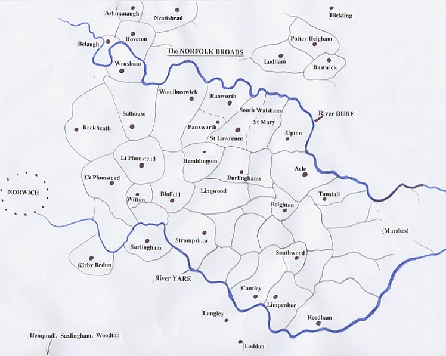
In 1968, I happened to live in one of these parishes myself (with my wife and two sons) in the grounds of my then employer (the NHS) which property, I learnt much later, had formerly been the manor and residence of an early member of the illustrious Hobart family from ca 1580. This was in Little Plumstead. Just half a mile to the west was Gt Plumstead and not far to the north were Salhouse and Wroxham - on the lanes between which I travelled daily, after we'd moved into our own property in that latter parish. I was totally unaware of genealogy at that time and certainly had no idea that a family named Jermyn, Jermy, Jermany, etc resided in these several Broadland parishes in considerable numbers some centuries before. It was only in the 1980s, when living in Essex and becoming addicted to genealogy (and to certain stories that had come down from my wife's Norfolk family), that I became aware of this feature of our former abode.
[Please note: Each of the following 5 Parts will have one or more pedigrees to complement the text. These will no doubt require some correcting and additions from time to time which will usually be some time after any comparable changes in the associated text - which should always take precedence.]
Part I. The Earlier Jermyns (and 'Jermys') Residing in North-east Norfolk.
Gt Plumstead was in fact the residence of one of the earliest members of that family to reside 'north of the Yare'. This was one Thomas Germyn (probably born ca 1530) described as a 'husbandman of Gt Plumstead' in his Will dated 23 Feb 1585 and proved (NCC) on 6 Feb 1590. By the Will of his father Ralph Germyn of Hempnall (1556), he had inherited various small pieces of land in Hempnall, Saxlingham Nethergate and Shotesham - all near one another some miles south of the river - and, rather unexpectedly, more property some distance north in Gt Plumstead - where he apparently resided latterly with his wife Agnes (although buried back in Saxlingham). He left gifts to the churches of both Hempnall and Gt Plumstead and had at least 4 sons born in or near Hempnall around the 1550s/60s - in the time of Elizabeth the First: Ralphe, Richard, Edmund and Barnard Germyn who inherited different parts of their father's (and grandfather's) relatively modest estates. Some of this family is considered further in the section on the Jermyns of Hempnall, where the repetition of the same few forenames over several generations, despite their many Wills, as well as gaps in the registers, makes identification of every line in this widespread family extremely difficult.
The eldest son Ralphe and wife Elizabeth had a son Roger baptised in Gt Plumstead on 4 Mar 1589 but they lived mainly back in Hempnall, I believe. The second son Richard seems to have continued in the area however for a Richard Germin (born ca 1564) married Alice Deare in nearby Woodbastwick in 1590. Woodbastwick borders nearby Salhouse on the east. Richard in turn had sons Richard, Edmund and Charles baptised there in the 1590s, as well as daughters Alice and Agnes. It may have been another brother, or a cousin, William Germin who not long after, married Christiane Apoole (or Apooe) in neighbouring Ranworth in 1595 when, I believe, William was described as then 'of Wroxham' (just above Salhouse). I am unaware if they had any issue locally. [However, one notes that a Christiane 'Germey' married in nearby South Walsham St Lawrence in July 1616 who was thus likely born about 1596 - quite conceivably to William and Christiane.] I believe there was also a Cicely Germyn buried in Lt Plumstead in 1605; she may have been a sister or sister-in-law born about 1570.
Richard(1) seems to have died quite young (possibly being buried in 1604 ?back in Saxlingham?) before his elder, namesake son Richard Germin(2), married - in Burlingham St Andrews (about 4 miles distant) on 21 June 1618 as 'Ricardus ?Jermine' - to an Elizabeth Cooper. Early issue with her may have included a Mary Jermyn baptised in Ashmanaugh in 1619, followed by Bridget and Elizabeth in neighbouring Hoveton St Peter in the 1620s. His apparent mother Alice died about this time (1625), described in her Will as then 'of Salhouse'. (His father's younger brother Edmund Jermyn of Saxlingham (born 1566 who married a Prudence ca 1595) also died and left a Will that same year.) Three later sons were born to Richard(2) in Hoveton also, possibly to a 2nd wife. There seems to be no information on his brothers Edmund Jermyn and Charles Jermyn although it was the latter man apparently who had a son of this same name (born ca ?1625) mentioned in the Will of his brother Richard(2). Any later 'floating' Jermyns/Jermys in this area may derive from such sources, or from the earlier William of Wroxham.
This younger Richard(2) (bn 1591) wrote his Will on 2 Oct 1652 in which he is described as a Yeoman of Hoveton St Peter (just over the river from Wroxham, where his possible uncle William had lived). In it, he leaves 6 acres of freehold land there, with a tenement, to his wife Elizabeth (possibly nee Cooper) for her lifetime and then to his son Richard Germin(3) - born ca ?1640. Another 6 1/2 acres of freehold land in Hoveton was left to his wife in trust for their three youngest children (unnamed) until son Charles Germin (born ca 1645, say) becomes 21 (in about 1666) when he was apparently to inherit all 12 1/2 acres of this freehold land. From this, he was to give £15 to the youngest son John Jermyn (baptised 1651 in Hoveton) and £5 each to his elder daughters Bridget and Elizabeth (born ca 1630). These latter three were also to receive about £30 each right away. It is possible that ?elder son Richard(3) may have received other land earlier. The Will was signed by Richard Snr with 'his mark' and was proved by the PCC on 28 Sept 1653. Interestingly, one of the witnesses was a Rev Thomas Jermyn, Clerk, he possibly of Shelton, near Hempnall originally. A pedigree which shows these various early Jermyn lines of north Norfolk, with severals uncertainties and suggestions, appears below:
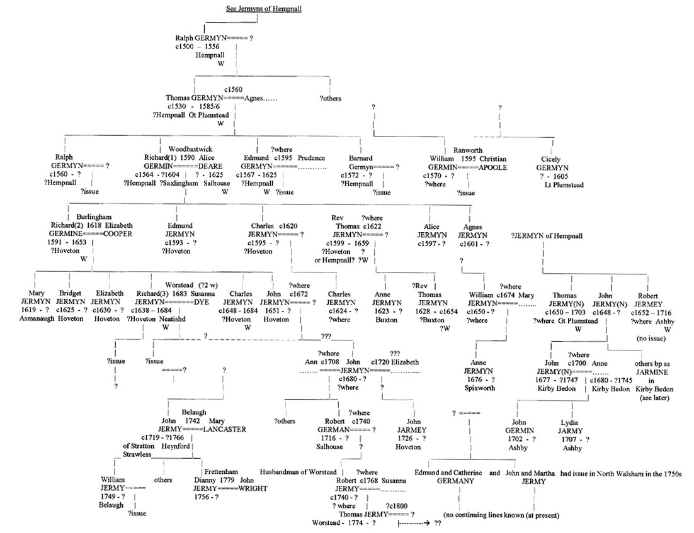
One may speculate that the above-mentioned Rev Thomas Jermyn may have been the latter Richard(2)'s brother - born ca 1599, say. We have come across this name before; he may have become the Vicar at nearby Belaugh in the 1620s-50s where he died, I believe, in 1659 (?Will). He had several daughters (eg Anne baptised 8 Apr 1623 in nearby Buxton) but only one son, also Thomas (born 1628), who may have become a Cleric himself but likely died young - in about 1654. [This need confirming; Campling shows a Rev Thomas Jermyn, instituted as the Rector of Shelton in 1633 (next to Hempnall) who may derive either from the Jermyns of Suffolk or, less likely, from the Hempnall family itself. He also shows him as the one probably settled later in Belaugh. Clearly, this needs further investigation.]
The third Richard (bn ca ?1640) appears to be the one whose Will was proved in 1684 when he lived in Neatishead (next to Hoveton). In it, he........ [Note: A Richard Jarmy had married in Worstead just the year before - to Susanne Dye, widow. This could imply that they were both of mature years (at, say, ca 40+) marrying for a 2nd time. He could therefore be the Richard(3) of the 1684 Will born ca 1640 to Richard(2) of nearby Hoveton and Neatishead.] His brother Charles was also of Neatishead when his Will was proved just the year before, in 1683. In it, he ......... [Note: There was another Richard Jermyn of this generation who settled in Gt Yarmouth as a Merchant and, dying there in 1671, had his Will proved in 1672. His origin is presently uncertain although Campling oddly shows him as the Richard(3) born to Richard(2) of Hoveton. It would seem more reasonable however that the latter man (3) would be the one who died the later (in 1684) in Neatishead, as this actually abuts Hoveton. However, the contents of that earlier 1672 Will (also not presently at hand) may clarify this. I believe the executor for one of these later Wills was also (?another) Rev Thomas Jermyn. [Around this time, a William ?Jermyn and wife Mary had a daughter Ann in Spixworth (near Rackheath) in 1676; his origin is also uncertain; was he 'of Norwich'...or?] Finally, one notes that an Edmond Jermy married Anne Markham in Gt Plumstead on 3 Apr 1687. They had a son Edmund baptised in Lt Plumstead 1 Apr 1690. Either father or son was subsequently buried in Gt Plumstead on 8 March 1691. A Clement Jermy had pre-deceased him there - being buried on 13 Mar 1689.
It is not certain from where a Thomas 'Jermy(n)' of Gt Plumstead, single man, who left a Will dated 7 March 1702/3, proved (Dean & Chapter Court) 3 July 1703, derives although he too was probably from Hempnall or nearby. He too was buried in Gt Plumstead - on 3 June 1703 and may have been a brother of the foregoing Clement and/or Edmond and thus grandsons of the earlier Thomas Germyn who resided in that same parish three generations earlier. In his Will, he refers to his (still living) brothers John Jermey of Kirby Bedon and Robert Jermey of Ashby. These are parishes south of the river suggesting his own origins, as expected, were likely to the south - in the Hempnall area from where others to settle in Kirby are known to have come (see below). He also refers to two 'kinsmen' and three 'kinswomen' one of whom, Frances Jermey, was then living with Thomas in Gt Plumstead. These turn out to be his nephew and nieces, the children of his brother John Jermey/Jarmin of Kirby Bedon whose identities are confirmed in the parish register there.
This latter man married Mary Stout in Kirby on 30 Nov 1671, both single and then of that parish. They had 8 children baptised there between 1672 and 1686. These were John German (1672; died 1673), Hester Jarman (1673; later to marry William Holmes), Robert Jermy (1675/6; died 1676), John Jermy (1677), Martha Jarmine (1679/80; died 1714), Frances Jarmine (1682); Mary Jarmine (1683/4; died 1690) and Lucy Jarmine (1686/7). [These variable surname spellings were of course those accorded the father of these children on each occasion as well. Most members of the family at that time had one spelling at their own baptism, another at their marriage and yet several others at the baptisms (and burials) of their own children in turn, and again at their own burial and/or on their Wills. Originally, in Hempnall say, they were mostly Germyn or Jermyn and this spelling will generally be used if the actual one at a given event is unknown, atypical or still buried in 'lost' notes.]
Thomas's brother Robert Jermey, Yeoman of Ashby, also left a Will - dated 11 Oct 1701, proved (NCC) 26 May 1716. In it, he mentions his wife Mary, his brothers John and Thomas Jerman and kinsman John Jermy Jnr (these proving consistent with similar references in his brother Thomas's Will (again without reference to any deceased brothers), and to his married sisters Hester Holmes and Mary Hackon. (In his Will, reference is also made to a 'kinsman' John Hackon, presumably Mary's husband and thus really an 'in-law'.) Thomas also describes his kinsman John Jermey (Jnr) as being then 'of Ashby'. We find that this man (the 1677-born son of John and Mary of Kirby) had two children baptised in Ashby about this time - John Germin in 1702 (did he later marry Elizabeth March in Norwich and settle in Langley?) and Lydia Jarmy in 1707. It appears that he and his wife Anne may have later returned to Kirby where two people of these names were apparently buried - in 1747 and 1745, respectively, there being no other events registered at Ashby; but this need further confirmation. For it is possible, for example, that a John German (born ca 1680?) and wife Ann, who had a son Robert German baptised in Salhouse in 1716, may be this same couple. Otherwise, I can see no continuation of the line established by John Snr and Mary (Stout) in Kirby Bedon north of the Yare - John's brother Thomas (and possibly Clement and Edmund as well) having died there in Gt Plumstead without issue as we have noted. [We may note that the years 1718 to '38 are said to be missing in the Salhouse register. I'm uncertain if BTs and ATs have been checked. Was someone concerned that John Jermy of Gt Yarmouth (born rather later, in 1692; or his wife?) may have had issue there? A son named Robert would however not be expected in his line, I feel.]
Possibly the younger Salhouse John was a son of Richard's youngest brother John (born 1651)? Did he, with a (?second) wife Elizabeth, also have a son John Jarmey - baptised in Hoveton St Peter in 1726? The earlier son Robert (born 1716, with wife Ann) would likely marry ca 1740 and could in turn be the father of the Robert Jermy, husbandman of Worstead, who, aged 30 and so born ca 1740, swore a Deposition there in 1771 saying he knew certain of the principals involved in a minor legal case in Worstead for 17 years (ie from ca 1754 when he'd be just 14). [There was a Robert Jermy baptised in Langley in this very year of 1740, the son of a John and Elizabeth, but this is rather distant.] The Worstead Robert had three children, with his wife Susannah, baptised there: Elizabeth Jerminy in 1767, Esther Jerminy in 1772 and Thomas Jarmy in 1774. I'm not aware if the latter Thomas survived and/or continued in that area.
At about the same time as Robert Jermy was born in Salhouse (to a John Jermy), a John Jermy 'of Stratton Strawless' was also born (possibly to that same father?) ca 1718-20 - who would marry Mary Lancaster in neighbouring Belaugh on 14 Feb 1742, with whom he had a large family - both there and later back at Stratton Strawless. This family included a son John born 1746 (died 1751) and a William Jermy in 1749. Their younger sister 'Dianny' (apparently born Belaugh 1756) married John Wright in nearby Frettenham in 1779 (as Diana Jarmy). [Note that evidence for Dianny/Diana's birth/baptism in Belaugh or nearby is presently either missing or lacking; if found, it will be placed here.] A Mary Jermy had married in Scottow (next to Belaugh) in 1753 to a William Ward. She was possibly a sister of the elder John Jermy of Stratton Strawless, who appears to have been buried in Haynford in 1766 (as discussed also in the section on the Gunton Jermys(2)).
There was also a William Jermy who later lived and died in Swanton Abbott, just a bit further north. He, as a Husbandman aged 36+, married Elizabeth Field on 27 Dec 1776 at St Peter Mancroft, Norwich (by licence) before returning to his farm/land in Swanton Abbott. What issue, if any, they may have had (or where) ca 1778-1790, say, I'm unaware. His wife Elizabeth died in 1789 and is buried in Swanton Abbott. But in his Will dated 1813 and proved in 1818 when he died, aged 80, he mentions only his 'natural son' William Jermy (not yet 21) who was likely born about 1795 to '98, say, but to whom we are unaware. However, this younger William, appears to be the one who became a Farrier and married Elizabeth Taylor, a Cotton Weaver, in Swanton Abbott on 10 March 1821, when he signed his name. Elizabeth had previously had a son William 'Taylor' there - on 21 Mar 1819, seemingly fathered by this same William and raised as Jermy. After their marriage, they had a further 8 children between 1821 and 1840, often baptised in the Wesleyan Chapel there or in North Walsham. The eldest was a daughter named Louisa (born 1821) and a later one an Alfred Jermy born in Swanton Abbott on 8 Sept 1835. He became a Miller of nearby Overstrand and married 4 times, his first wife Cecilia giving birth there in 1864 to a daughter Marie Louisa Jermy who was later known as 'Louie' Jermy of Poppyland fame - in late Victorian times. [See separate section on her below.] She died unmarried in 1934. William the Farrier died in 1842, aged 47 and thus born about 1795, as estimated. Another William Jermy had also married an Elizabeth (nee Vialis) in Norwich, in 1779 (he aged 21), not long after the elder William above married his Elizabeth (Field) there in 1776 (aged 30+). The younger William (born ca 1857 therefore) would thus not be 80 at his death in 1818, however, but only 61.]
Usefully, the elder William also referred in his Will to a Sarah Jermy, as "my niece who now (1813) lives with me", and to his brothers 'John, Richard and Benjamin'. Their existence indicates that this William was not the one born in north Norfolk to John and Mary in 1749, who not only had no sons Richard or Benjamin of whom we are aware but would of course not be aged 80 at his death in 1818. There was however another, slightly older William Jermy(n) (born in Kerby Bedon) who did have such brothers and who will prove more relevant to Part III of the present account below (ie those later Jermyns of Salhouse and Wroxham, etc) in which Part these present details will be further expanded. We would expect one of these brothers to have had a daughter Sarah and this turns out to be the case - she born 1781 to the brother Benjamin 'Jermy' - of Salhouse.
There was also a Jane Jermy (seemingly unmarried) who died in 1821 in Swanton Abbott, aged 82, who also left a Will (dated 1797) in which she refers to her only daughter Ann. She may have been William's sister or a sister-in-law. But neither are referred to in William's Will. Ann was born to her ca 1778 (when Jane would be about 38) - but where? Ann herself married in Swanton Abbott in 1808 (to Barnabas Leman) but died in 1822, aged 45, already a widow. The Swanton Abbott Wesleyan register also records the birth and baptism in 1828 of a Martha Vincent, the daughter of Benjamin Vincent, Carpenter of Scottow, and his wife Sarah, the daughter of Daniel and Elizabeth Jermy. They had other issue there including a Benjamin and a Daniel up to the 1840s. We will see in Part III below that, oddly, a Benjamin Jermy married a Sarah Vincent in Lt Plumstead in 1803.)
Finally, we may copy verbatim at this point certain brief details from our section on 'The Jermys of Happing Hundred' in case they may pertain more here than to that bordering family: "We note that an Edmond Germany (likely born ca 1730s) and wife Catherine had a son Edmond baptised in nearby North Walsham on 12 June 1756, while a John Jermy (born ca ?1732) and wife Martha had a son John baptised there 12 June 1757. And just before the former event, Francis Jermy, the then elderly Attorney of the now dispersed Gunton family, was buried there - on 10 May 1756. The origin and futures of the former two men and their issue is unknown but intriguing...". (and should be followed up). There were also, I believe, one or two early Jerm(an)y events in those small parishes between Stalham and Neatishead that may require placement into our schema.
-- -- -- -- --
As mentioned above, there appears to be no firm evidence that any other of the foregoing lines or floating Jermy(n)s (ie other than that of the foregoing William Jermyn of Swanton Abbott) left progeny who continued these families in this part of Broadland - that is, with Jermy(n) (or similarly-named) issue born, marrying and continuing to reside and expand widely there - through the 18th and 19th centuries. Some unexpected data may yet arise however to counter this view but until it does, we shall proceed on the basis that the bulk of the area of present concern (ie from just north of Norwich across to Acle south-eastwards - between the rivers Yare and Bure essentially) - was eventually devoid of later members of their lines, until the arrival of those to be described below who, in any case, are likely from the same ultimate roots as these several unconnected members of the later mid-18th to 20th century in this area.
-- -- -- -- -- --
The Modern Lines
There were three main centres in which the next 'wave' of Jermyns settled in the general area of present concern. Firstly, in Little Plumstead, a Daniel Jermyn and wife Amy had their family there in the 1730s to '50s. Daniel was born in 1713 in Woodton (in the south of Norfolk near Hempnall) to Joseph Jermyn and his first wife Margaret nee Pettingel, daughter of Samuel Pettingel of Hempnall, Gent. There appears to have been no direct connection between Joseph's family (and hence Daniel's, etc) and any of those settled earlier in the Broadlands area, as described above. He was thus starting a new line there, if doing so at a time when some of the latter were possibly still extant. But Joseph and his father would appear to be of the Hempnall family themselves although there is an interesting anomaly in this regard which will be more fully analysed elsewhere (in the Jermyns of Hempnall).
About this same time as Daniel settled in Plumstead, or a touch earlier, we find that several marriages and baptisms also begin to be registered (ca 1720s/30s) in and near the small parishes of Southwood, Upton and Beighton, some miles to the east of Plumstead and nearer Acle. These were also north of the Yare. The family or families concerned appear to be unrelated (in any direct sense) to that of Joseph and his sons, including Daniel, settled in Plumstead to the west. These will be described in Part IV. And thirdly, the parish of Salhouse, just north of Plumstead, sees the first of many later events registered there and in neighbouring parishes - from 1769 onwards. They too appear to represent a third line (described in Part III), unrelated in any immediate sense to the other two - but one which would also multiply significantly.
Part II. The Jermyns (and 'Jermys') Descended from Daniel Jermyn of Little Plumstead .
It is not known why Daniel Jermyn from the Woodton/Hempnall area some miles south of the river Yare, happened to meet and marry Amy Shortin, the daughter of William and Amy Shortin of the more northerly Blofield area, where she was born in 1712. Nor is it known why they settled near there, north of the Yare. Possily Amy's father, also a husbandman, held a little land there, or had Daniel inherited some from some relative settled thereabouts earlier? Their marriage took place at St Martin-at-Palace, Norwich by NCC licence on Oct 2nd 1732. The licence bond shows 'Daniel Jermin' as a husbandman, aged 21, then of Woodton, although it authorised the marriage to take place at either St Martins or at Lt Plumstead - suggesting Daniel probably did already have interests in that latter place by the late 1720s, say. In any case, they soon had their first child, a daughter Martha 'Jarmy', baptised at Lt Plumstead church - on 27 Aug 1733. This atypical choice of forename for a first child likely reflected the name of the wife of Daniel's older brother James Jermyn (born 1707) - ie Martha Mingay (daughter of the Rev John Mingay) - whom James had married in 1730. The surname spelling - as 'Jarmy' - would likely reflect the local Vicar's variation of a name he was less familiar with.
The mother of James and Daniel, Margaret Pettingel, and the wife of James, a Mingay - both members of local minor gentry families south of the river - could represent a slight 'step up' in social class for this elder branch of the Jermyn family dealt with here who, otherwise, were more typically tailors, weavers, husbandmen or yeoman at best (and almost invariably farm labourers in later times). While James and his line (which is detailed, with their Quaker forebears, in a sub-section of the Jermyns of Hempnall*) maintained and increased this improvement, Daniel himself seems to have found his future more difficult, being described later as 'dying in poverty'. However, like James and family, most of Daniel's at least obtained enough education to sign their names - something few others of the wider Jermyn family who would settle in this area would do for some generations. But this gets ahead of our story.
[*This may be accessed directly by Clicking: Robert Jermyn, Quaker (c1648-1720) then returning to the foregoing paragraph, as required.]
Daniel and Amy's next issue was their eldest son James 'Jarmey' baptised 24 Nov 1735, followed by Daniel 'Jarmy' on 19 Nov 1738, Elizabeth 'Jermey' on 20 Mar in 1742/3, Benjamin 'Jermy' on 16 Jan 1749/50 (Note: Daniel Snr had a (younger) brother Benjamin), Joseph 'Jermy' on 30 Oct 1753 and, I believe, Sarah 'Jermy'
in 1755. All were baptised in Lt Plumstead church. At this time, and through the 1760s, Daniel witnessed many marriages there, signing his name with a good hand. (I can't recall if this was consistently as 'Jermyn' rather than the 'Jermy/Jarmy' which the local Vicar seemed addicted to.) I imagine Daniel was a husbandman supporting his family from a 5 to 10 acre smallholding and/or working for larger yeoman/tenant farmers locally. He was buried at Lt Plumstead - now more correctly named in the register as 'Daniel Jermyn' (Snr) on 28 June 1771 - and it was Campling (I believe) who described him as 'dying in poverty', although on what this was based, I'm unaware. He left no Will nor was an Administration granted in his name. His widow Amy was buried there also in that same decade - on 9 Oct 1778, again with no Will.
The eldest daughter Martha appears to have had a son out of wedlock, baptised as Isaac Jermyn in Lt Plumstead in 1756. I'm not aware if either she or her son later married. Daniel's eldest son James Jermyn married south of the river in Carelton St Peter in 1760 to Margaret Meens of that parish. But they had their first child, Ann Jermyn, baptised back across the river but, oddly, even further east, at Reedham, in 1761. They seem to have returned to his home parish of Lt Plumstead however, by 1765, when they had a namesake son James Jermyn Jnr baptised there. There is then a 10 year hiatus during which other children may well have been born to them (although just where is not obvious) before they have Elizabeth in 1775, Margaret and Mary (ca ?1777) and Daniel Jermyn in 1779 (third of this forename), and finally William in 1781, all back in Lt Plumstead. [The relevant pedigrees will likely require further attention as any later data is found.]
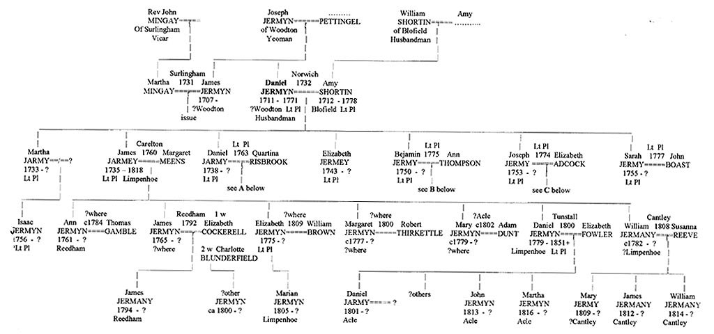
Meanwhile, the next son of the elder Daniel (Snr) - ie Daniel Jermyn Jnr (b 1838) married in 1763 to the unusually named Quartina Risbrook in Lt Plumstead, both described as 'of that parish'. A witness was his younger brother Benjamin. They would have 10 children baptised there over the next 18 years. These were: Quartina in 1764 who died aged two in 1766, William in 1766, Elizabeth in 1769, Quartina(2) in 1771, twins Daniel and Sarah in 1773, Martha in 1775, twins Peter and Amy in 1778 and finally James in 1781 (see below). Several later married locally but some may have died early. Presumably, the younger Daniel worked with his father in Plumstead during the 1760s until the latter died in 1771, aged 68.
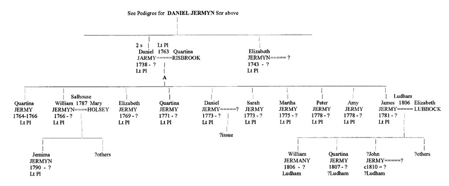
The next son of the elder Daniel was the aforementioned Benjamin (born 1750) who, as Benjamin 'Jarmy', married Ann Thompson in Lt Plumstead on 13 Jan 1775 by NCC licence, witnessed by his brother Daniel who, unlike the others, made his mark. Both Benjamin and his wife signed the register. He was described as then residing in South Walsham St Mary (where he likely had found temporary work) but appears to have settled back in his home parish of Lt Plumstead soon after his marriage there, where they then had their small family. (Benjamin had thus preceded a considerable number of seemingly unrelated Jermyns/Jermanys etc who would reside in South Walsham later that century and into the next; see later in Part IV.) The eldest born to Benjamin and Ann was a daughter Elizabeth in 1775 (although his brother James also had an Elizabeth that same year), followed by son Benjamin Jnr in 1777, Esther in 1779 and Isaac in 1782. All four later married locally.
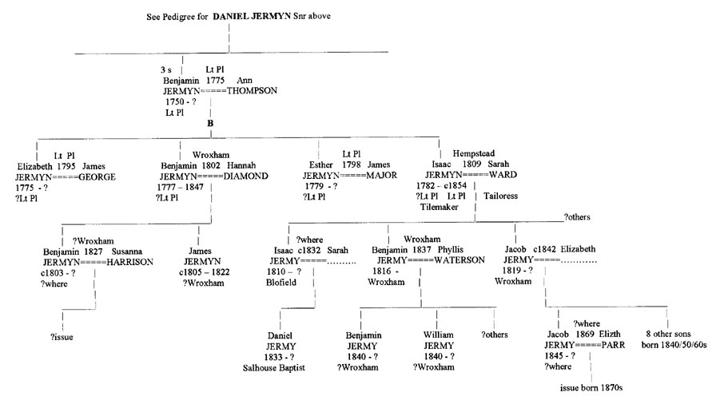
Daniel Snr's youngest son Joseph had already married in Acle to Elizabeth Adcock in 1774. They had a son Moses in Lt Plumstead in 1775, followed by Amy and Elizabeth in Acle - in 1781 and 1785, respectively (as Jermy). This began a minor settlement of several of the elder Daniel's line in Acle (see below). Amy married a Jacob Hunn there in 1801. Finally, Daniel's daughter Sarah married in Lt Plumstead in 1777 to John Boast when she too signed her name.
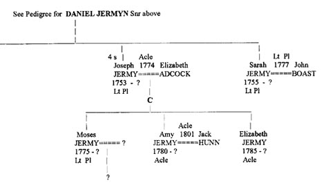
It is apparent that during the Georgian era - from the early 1730s until the 1780s and beyond - there were a growing number of this Jermyn family (descended from Daniel and Amy) living in Lt Plumstead. By that latter year, there must have been about 30 members of this family (as Jermyns/Jermanys/Jarmys/etc) seeking to make a living there. Obviously, some of the grandchildren would eventually have to 'move on' to other parishes as and when they in turn married. Thus, we find that eldest son James settled in Limpenhoe by 1779 (his mother Amy having died in Lt Plumstead the year before), where his son Daniel was born that year. James' first daughter Ann, baptised in 1761 in Reedham, married a Thomas Gamble about 1784, although where is not certain. His eldest boy James Jnr (born 1765) married Elizabeth Cockerell in 1792 in Reedham when, described as a single man of Reedham, he too signed his name. They had one son James(3) in 1794 - baptised in Reedham as 'Jermany'. [See below where he is located in 1851 as a ?retired Accountant living miles away in Newbury, Berkshire!] Elizabeth must have died shortly after for this middle James appears to have re-married in about 1798 across the river to a Charlotte Blunderfield of Heckingham (James was by then 'of Limpenhoe', next to Reedham). [It may be useful to show the first pedigree here again, with James' family.]
[We may note here that a Robert Germany married Frances Sharman about this same time also in Reedham (1796) and he too signed his name - but as Germany. His origin remains a mystery. He and Frances, who had two children before actually marrying, would also settle some miles to the north - in South Walsham (where Frances was shown in the 1851 Census to have been born, but this needs confirmation) - and are discussed further below in Part IV.] James' next son was married, as William 'Jermany', to Susanna Reeve about 1808 (?Cantley) and had a daughter Mary Anne in 1809 and sons James and William Jermany in Cantley (near Limpenhoe) in 1812 and 1814, respectively. There were also sons Daniel and Benjamin Jermyn born in Limpenhoe in 1818 and 1822, I believe. James' daughter Elizabeth (born 1775) married William Brown in 1809, having first had a daughter Marian Jermyn in 1805 in Limpenhoe. Next son Daniel married Elizabeth Fowler in Tunstall in 1800 and had a son Daniel Jarmy baptised in nearby Acle on 22 Apr 1801 where, after a 12 year gap, they also had John and Martha in 1813 and 1816, respectively. Whether and where they had any others ca 1803 to 1810, I'm unaware. [Note: they were quite likely the parents of the Sarah Jermy (born ca ?1803) who married a Benjamin Vincent, Carpenter of Scottow (in north Norfolk) around 1824 and had issue by him in nearby Swanton Abbott in the 1820s and 30s, including sons Daniel and Benjamin Vincent and a daughter Martha, as described in Part III.) James Snr's daughter Margaret (born ca 1777) married Robert Thirkettle ca 1800 (where unknown at present) while his daughter Mary married Adam Dunt of Acle, around 1800 - where her niece Amy, daughter of her uncle Joseph, was also married - to a Jack Hunn in 1801. [For a thorough account of one of the lines from this latter union, see http://jwilkins.net which depicts a succession of descendents with the usual semi-skilled occupations - as typically derives from a rural Norfolk background - until a rather sudden, almost inexplicable change of status by one descendent (R.J.Wilkins M.Sc.) who, in a sense, 'picked himself up by his own bootstraps' (from the limitations of Bermondsey), within one generation, and displayed a series of most impressive achievments. This seeming exception is however matched by others from what we may call Daniel's (or even Joseph's or Robert the Quaker's) line - with its genetic input from the Mingay and Pettingel gentry families) - as described earlier in the case of the Jermyns who settled in Halesworth, or at Limpenhoe and Cantley, and again below in the case of the family descendend from Daniel's youngest son James (b 1781).]
We thus see that Daniel Snr's line as descended from eldest son James shifted from Lt Plumstead by the 1780s to more eastern areas along the river - around Limpenhoe, Reedham, Cantley and Acle where later descendents were born and resided ca 1800-1830+. James himself died in 1818 in Limpenhoe and left a Will (NCC; proved at Loddon by his son Daniel on 22 Jan 1819). In this, he left "..all my lands in Lt Plumstead, Limpenhoe and Cantley now in the occupation of: Aaron Ward, my brother Benjamin Jermyn, my son Benjamin Jermyn and my son-in-law Adam Dunt - to my wife Margaret for her lifetime; and then, to my daughter Margaret Thirkettle and heirs: the land in Limpenhoe occupied by Aaron Ward; to my son William (born 1781) and his heirs - my other land in Limpenhoe; to my son Daniel - my land (3 acres) in Lt Plumstead now occupied by my brother Benjamin". There were also references to daughters Ann Gamble, Mary Dunt and Elizabeth, mother of Marian Jermyn. So, this eldest son of Daniel displayed worthy qualities reflected in his acquisition of considerable property.
James' second son Daniel, while having had children baptised in Acle up to 1816, must have later returned to Plumstead after 1819, where he was shown as still residing in the 1851 census, aged 71, and born in Limpenhoe. (We may note that in his Will, James makes no reference to a son Robert (Germany), mentioned above as marrying in Reedham, who, in any case, named no son James.) I haven't at present further data on any later members of this (James') line of the family but, as with those settled elsewhere in Broadland during the Victorian era, the Censuses of 1841 and 1851 and the IGI provide good leads as to where those of this ever-mushrooming family settled - before many migrated further afield - to Yarmouth, Norwich, London and beyond. [Yes; I note that the James Jermany born in 1794 to James and Elizabeth (nee Cockerell) in Reedham turns up as James Jermyn, 57, with wife 'Sopy' (?Sophie), 55, in the 1851 Census - residing on Market Place, Newbury, Berkshire! James was shown as a retired Accountant, living in the home of an Ironmonger - Joseph Gooner, 53, unmarried. No children were with them there; any they may have had, in the 1820/30s, say, would likely have left home by then. Sopy was born in Bungay, Suffolk. Did young James visit that area as a teenager ca 1812, say, to stay and complete an apprenticeship with an accountant - where he later met and married Sopy (ca 1815 or so)? And, secondly, the above-mentioned youngest son of James Snr - William Jermyn (bn 1781), to whom land was left in Limpenhoe, married Susannah Reeve in 1808 in neighbouring Cantley. Their youngest son Benjamin Jermyn - born 1822 in Limpenhoe - married Mary Ann Cooper Thompson (of Gt Yarmouth) in 1846 with whom he had issue born in Limpenhoe and Reedham (ca 1840s/50s) before they emigrated to Australia, in about 1858. A son William Jermyn was born to them in Ballalaba, New South Wales in 1864. The family then settled near a place called 'Captain's Flat' in the South Tablelands area of NSW (about 20 miles south of Canberra) where their subsequent burials are recorded in the local cemetery until it ceased operation in the 1960s. Benjamin Jermyn was buried there in 1902 and his wife in 1901. Their son William Jermyn (d. 1951) had 4 sons and the presence of later Jermyn issue in this area, possibly including Canbrerra itself, would seem probable.]
Daniel Jermyn Snr's next son Daniel (Jnr), born 1738) remained in Lt Plumstead as described above but data on the marriages of his many children is often lacking. However, we do know that his eldest son William married Mary Holswer (?Holsey) in 1787 in Salhouse (where an unrelated Jermyn family had recently settled, thus allowing some potential confusion between the two families) but had an early daughter - Jemima Jermyn - in Lt Plumstead in 1790. It is possible that others of this younger Daniel's children, as Daniel (1773) and Peter (1778), did marry and have issue. [Note: A John Jermy(n), born ca 1804, later married a Sophia...... who was born in Ludham that same year (1806). He became a Tailor and they settled (oddly) in Hempnall where they had a daughter Hannah and son William. John died in 1846 so there is no 1851 Census entry for him informing us of his birth place (which doesn't appear to have been in the Hempnall area, the origin of so many of this family earlier). Who was his father therefore - possibly a William married to a Hannah?].
The younger Daniel's youngest son James (born 1781) married Elizabeth Lubbock in Ludham in 1806 and with her had a son William Jermyn there later that year, followed by a daughter - yet another Quartina - in 1827. I was unaware of whether and where they may have had other issue during that significant gap (1807-1825) or subsequently. But a recent enquiry from a descendent of this line has gratefully clarifed various relationships. It appears that the latter James' son William married into a family with some experience as tenant farmers and millers (in contrast to the almost inevitable constraints when continuing as agricultural labourers with their limited incomes, especially over the winter months). His wife was Charlotte Vincent of neighbouring Catfield whom he married there in 1832, where they had a son Vincent Jermyn on 28 June 1833. The local Miller there was a Christopher Vincent, quite possibly Charlotte's father, and one of the Farmers in Catfield then was a Robert Lubbock - who could account for the introduction. In any case, young William seems to have acquired skills in Milling and in running a farm thereby and soon moved on (by about 1838, say) to an opportunity in these spheres that arose some miles distant - at Wymondham south of Norwich. His parents, James and Elizabeth, had had a 2nd son - Daniel Jermyn - in Ludham in about 1824 but they appear to have moved to Silfield in Wymondham before 1841 (quite possibly doing so to work for or with son William, who may well have settled there first).
William's wife Charlotte died before 1841 and he married 2ndly Harriett Durrant (b Wicklewood, nr Wymondham) that year - with whom he had sons William and Alfred in 1842 and 1845 (who appear to have married and have issue but this requires confirmation). William's brother Daniel married in Wymondham in Sept Q 1850 to Sarah Ann..... (born Hingham) by whom he had a son Frederick Lubbock Jermyn there in 1854. By 1851, William, now 44, was listed in Wynondham as a Master Miller and Farmer (of 118 acres) with wife Harriett, 47, and sons Vincent (17) working in the Mill, and his two half brothers William Reynolds (8) and Alfred (5) still at school. Vincent married in nearby Flordon church on 16 Dec 1856 to Hannah Banham, also born in Wicklewood, where her father was a local Farmer. By 1861, Vincent and Hannah lived on Browick Lane, Wymondham (the family farm?) with son Henry, aged just 1, and Vincent listed as a Miller. By 1871, they had moved to their sister-in-law's town of Hingham, where he is now shown as a Farmer in his own right - of 191 acres, employing 5 men and 2 boys! Son Henry is now 11 and they have had 3 daughters. A Mill came up for sale at Wramplingham (west of Wymondham) in the 1880s; Vincent took this over and is shown in Directories as the Miiller there from 1892 until 1904. He would live until 1924, aged 90. His son Henry appears to have followed him in this occupation and later had such a Mill himself in Silfield. It was Henry's gt grandson Peter Jermyn who provided useful clues in clarifying this descent after becoming aware by virtue of a church memorial in Wymondham that his ancestor William Jermyn, a long time churchwarden there, was born in 1806. This proved to be to James and Elizabeth Jermyn in Ludham next to Catfield, where they knew his son Vincent had married.
Also in Wymondham in 1851 was William's brother Daniel (26), then a 'Teacher' (born Ludham) , and wife Sarah Ann , 27 (born Hingham) - whom (as mentioned) he had married in Wymondham in Sept Q 1850. The following year, they had their first son Frederick Lubbock Jermyn in Wymondham and then a daughter Sarah Ann in 1853. By 1861, Daniel and family live on Market Street, Wymondham, he now a Brewery Clerk His son Frederick was then 9 and at school. By 1871, Daniel is on Market Place, still a Brewer's Clerk, but also the Licensed Victualler running the Queen's Arm Inn there, while Hannah is a Dressmaker employing 6 women.. Frederick, now 20, had left home. By 1881, Daniel aged 56, is shown as a Wine and Spirit Retailer - still at the Queen's Arms - with Hannah. Frederick now re-appears - in distant Bristol, Gloucestershire - aged 30 and still unmarried, but now a 'Bank Manager'(!?) - lodging with a Mr George W. Ware on Belmont Road, St James & St Paul there. He must have trained in the bank during this interim. His grandparents William and Harriett now lived on Town Green, Wymondham, with William still farming but just 40 acres. Harriett died in 1883, aged 79 and William Jermyn in 1885, 78+. Frederick Lubbock Jermyn appears to have married in Wangford district (south of Lowestoft) in 1883 (to whom I'm unaware). This is quite a way from Wymondham and of course even more from Bristol. . A Frederick Alfrred Jermyn was sebsequently born in St Olaves (Southwark, London) in March Q 1902 (to whom I'm unaware) and later married there - in Sept Q 1925 (to an Ada Shearring ). They seem to have had 2 children - Doris and Peter Jermyn - in 1927 and 1930, but I have no data on their origins or futures.
-- -- -- -- -- --
We may now return to the family of James' grandfather Daniel Jermyn Snr. His 3rd son Benjamin (born 1750) had, as his eldest son, another Benjamin (born 1777) who married a Hannah (Diamond) in Blofield (just east of Plumstead) in 1802. They had a son James born about 1803 (?where) who died young in 1822 in Wroxham (where he was buried), aged 19, unmarried. It is possible the younger Benjamin and wife Hannah also had a namesake son Benjamin (ca ?1802) who married Susanna Harrison about 1827, possibly in Wroxham (this to be determined); unusually, this Benjamin was described as then 'of Beccles, Suffolk'. However, there were unrelated Jermyns/Jermys living in that latter area then and this man could, if rather unexpectedly, actually be of that distant town rather than be a son of Benjamin and Hannah, who had resided there only temporarily. This too needs further study. Benjamin (born 1777) died in 1847 in Wroxham where he was buried, aged 69. I'm not aware when and where his father Benjamin (born 1750) died. He had no issue after 1782. Possibly he or his wife died shortly after this date?
Benjamin Snr's other son Isaac was born in Bastwick near the north coast in 1782 and married Sarah Ward in nearby Hempstead (her birthplace, near Ludham) in 1809 and appears to have had a namesake son Isaac Jnr in 1810 in Blofield and possibly others (as a ?Joseph ca 1809-12) elsewhere, before having Benjamin and Jacob in Wroxham in 1816 and 1819, respectively. Benjamin Snr and family must have resided for some time at Bastwick ca 1780 to 1800, say. In 1841 they are back in Lt Plumstead, aged 60+ and 50+, respectively, with sons George (25+), Abraham (15+), and Daniel (8) plus daughters Harriett and Sarah. Both Joseph (with a wife Mary) and the younger Isaac (with wife Sarah) may have married about 1832. They had issue baptised (as Jarmy) at the Salhouse Baptist Chapel in 1833 (Daniel) and 1835 (Joseph), respectively. Benjamin (born 1816) married Phyllis Waterson in Wroxham in 1837 and had twin sons Benjamin and William there in 1840 and possibly others. Jacob married an Elizabeth (born Ludham) about 1844 and with her had 9 sons there, thus providing scope for a greatly expanding family of Jermys, etc in this area. The third eldest of these, another Jacob (born 1845), married a widow Elizabeth (nee Parr) in 1869 and had issue.
I'm unaware of the marriages and issue of the other 8 sons (they themselves born mostly in the 1850s/60s in Ludham and any issue in the 1880s/90s. By 1851, the elder Isaac and wife Sarah were still in Lt Plumstead - he then a Tilemaker and she a Tailoress. They likely soon died there. Isaac's first cousin Daniel Jermyn(bn 1779) and wife Marian had also returned to Lt Plumstead before 1851 when he was described as a Farmer of 3 acres there. A younger Daniel Jarmy (born ca 1790 to..........) with a wife Mary and daughter Mary Ann born ca 1830 were also there. Isaac's sisters Elizabeth and Esther appear to have married in Lt Plumstead in 1795 and 1798 - to James George and James Major, respectively. The male issue of Daniel's youngest son Joseph (born 1753) - ie Moses - seems not to have married or have issue, while his sisters Amy and Elizabeth (born Acle) both did so.
-- -- -- -- --
For the time being, the foregoing will represent our account of Daniel Snr's line. Our main interest here is 'origins' rather than the later expansion of families. Those interested in their own family history often focus initially on their many 19th century forebears and, with the help of Censuses, the IGI and record office indexes, etc can usually tie them up with such as the foregoing earlier data - if indeed survivors of same continued from such beginnings. Meanwhile, we may consider the second group of those of the Jermyn family who also resided north of the Yare - initially at Salhouse and later at Panxworth, Woodbastwick, South Walsham and Wroxham.
Part III. The Later Jermyns, Jermanys and 'Jermys' of Salhouse, Wroxham and area. (now including Sprowston).
Just as Daniel Jermyn Snr had migrated from south of the Yare to settle in Lt Plumstead earlier in the 18th century (as described in Part II above), so too it appears, did other members of the original Jermyn family (of Hempnall originally) - to settle particularly in Salhouse, Sprowston, Swanton Abbott, Wroxham, Panxworth, Woodbastwick and South Walsham later that century. Four brothers would, on first inspection, appear to best account for most of these subsequent lines of 'Jermanys' (as the name would most often be later spelt) who settled and expanded in this general region - from the 1770s onward. These brothers, born around the 1740s or '50s, were: William, James (or John), Benjamin and Robert Jermyn/Jermy. Some uncertainty attends the origin of the line(s) descending from James/John and this is discussed further below. The origin of a 5th line, in South Walsham, (from the Robert Germany mentioned briefly above) is also uncertain, as discussed further in Part IV). But we begin with those of Salhouse and area.
In 1904/5, the Vicar of Salhouse and Wroxham, the Rev Boddington, possibly growing tired of answering requests for details of the many events of the burgeoning population of those in his parishes with the surnames Jermyn/Jermany/Jarmeny/Jermy/Jarmy/Germany etc, eventually abstracted them all and had copies of same printed. It seems quite possible that there had been an increasing demand for such information after one or more of the several articles published during the Victorian era regarding the earlier events at Stanfield Hall (near Wymondham) when the name Jermy at least received much publicity regarding that and other estates formerly held by the ancient landed family of that name. Various descendents of the Broadland Jermyns (many of whose names had in any case been gradually transformed into such as Jermany and Jermy) may well have been hopeful that they too might have some tenuous claim to such property, or at least be descended from such gentry, and so began seeking information on their ancestors in these and nearby parishes - in case they did so derive.
The source of such interest may, in addition (or even primarily), have related to the activities of one Gedaliah Hunt, a shopkeeper of Kensington, London in the 1890s. It appears that he must have learnt of claims to the estate made in the past by members of a family of similar names to those above, who may well have been customers of his. Thus, some descendents of an Oxfordshire family, for example, whose earlier names were typically Germany or Jarmany, etc, but later often shown also as Jermy, are known to have settled for a time in or near Kensington. According to letters formerly held by Jermy expert Stewart Valdar but now in the keeping of Colin Jermy, Mr Hunt decided to contact other families of this name throughout the country, including Jermys still living in Woodbastwick and another then in Liverpool, seeking any family history details that might prove a link with the Stanfield estate. (Possibly he felt there may be some commission in it.) Those residing in or near Salhouse, etc (including neighbouring Woodbastwick) would likely then contact the Rev Boddington about their ancestry and hence his eventual publication of those church registrations. Further details concerning this matter may be seen by visiting Colin's section devoted to this topic at: http://stanfield.und.ac.za/gedhunt.html or a later address for same.
We may for convenience consider the later Jermyn settlers of Salhouse/Wroxham, and of South Walsham (to be described in Part IV), as the major 'western' and 'eastern' divisions, respectively, of our subject (ie the more modern lines of the Jermyn family north of the Yare). On the face of it, they do not appear directly related to the earlier individuals mentioned in Parts I or II, even if there may be an earlier connection pre-1640, say. The earliest events registered in this later 'western division' (if we ignore those in Lt Plumstead already described in Part II above, and the even earlier ones ca 1590-1690) at Woodbastwick, Ranworth and Hoveton described in Part I) were at Salhouse when a 'John' Jarmany married there in 1769. (We may recall also the much earlier single event there - of 1718 - and the apparent gap in this register before mid-century.) The origin of these 'later' members to settle, remain and actually expand in Salhouse and area right up to the present day were partially described (by myself) in a letter sent some time ago to someone whose wife descended from this family, and in which some uncertainty in this regard was being considered. It proves convenient to reproduce this here - with some alterations and additions to fit later findings and ideas. That is:
On The Origins of the (later) Salhouse and area Jermyns, Jermanys and Jermys.
"My interest in this matter goes back to about 1983 - when I was seeking data on the ancestors of one Bruce 'Jermy' of New Zealand. I was stuck (after earlier searches pertaining to later members of that family) at finding the origin of one Robert Jermy/Germany whom I had discovered had married in 1783 in Loddon (a ‘hiring centre’ for agricultural labourers south of the river Yare but further east) and had one child baptised there - before moving, somewhat surprisingly, some distance north of the river, and west, to the very small village of Panxworth (next to Salhouse), where several later children were born to him - being baptised at either Woodbastwick or, later, South Walsham (there being no church in Panxworth itself). There was no evidence that this Robert was born back in the Loddon area or nearby - ie on that south side of the river (a natural ‘boundary that tended to keep most rural populations fairly separated at that time, but with some exceptions) - at least in that vicinity. Thus the question arose: who was this Robert's father and where was he born ? That is, what were his (and thus Bruce Jermy's) true origins ?
As other young Jermyn/Germany/Jermany/Jermy fathers had recently begun having issue baptised very nearby to Pasnxworth (eg in Salhouse), I sought to establish if they and Robert may be of the same family and to find a common root. It was soon apparent that, except for the family already settled in Little Plumstead for some years (whose subsequent lines I already knew), there were no earlier Jermyns, Jermanys, Jermys etc still settled in and around Wroxham or Salhouse - eg from the 1600s or before. These later ones had obviously come into the area fairly recently. This was confirmed by the pamphlet published by the Vicar of the joint parishes of Salhouse and Wroxham in 1905 (referred to above) in which he had abstracted all the earlier entries in those two parish registers relating to the name Jermany/Jermy or similar. This was probably due to enquiries he'd received in the 1890s pertaining to spurious claims to the estate at Stanfield Hall once held by one William Jermy of the landed Jermy family; many of those with this or similar names, descended within this rural area (but quite unrelated to the latter family), were apparently ever hopeful. [The recently revealed activities of Gedaliah Hunt (see above) were likely also a factor.]
I had in fact become interested in the Jermys myself - around 1980 - because of a story along similar lines that had come down my wife’s family. Her relevant ancestors were not, however, farm workers of this large conurbation of Jermys/Jermanys/etc of PLumstead/Salhouse/Wroxham/South Walsham - but weavers from Norwich, Wymondham and Hempnall further south. In pursuing this line however, I had necessarily collected much data on a range of Jermyns, Jermys, Jarmanys, etc in many areas, including Salhouse and area, although those seeming not to fall within my particular frame of interest were often only recorded ‘en passant’ and not too methodically. It was this material I eventually re-examined when asked to find Bruce Jermy’s roots. (This didn't then include data on those of similar names who would settle slightly later in South Walsham to the east.)
As mentioned, the earliest relevant entry found was in Salhouse with the marriage of John Jarmany to Susan Witaker - on 11 Oct 1769. The next marriage there within this range of related names was of Benjamin Germany to Ann Woodridge, about 10 years later - on 3 Nov 1779 - suggesting that Benjamin may have been this John’s younger brother, especially as the witness at his marriage was indeed a ‘John Germany’. [This marriage and Benjamin’s subsequent issue in Salhouse shouldn’t be confused with that of the other early Benjamin Jermy in neighbouring Lt Plumstead just 4 years before (1775) - awkwardly also to an Ann (viz: Thompson) - and later his descendants there, which included yet others Benjamins - as already described in Part II above.]
Meanwhile, John and Susan had had their first child in Salhouse, a son, baptised as ‘James Jermy’ on 24 June 1770. But he soon died an infant, being buried on May 1st the next year. [The choice of christian name for this particular first son may well be significant as discussed further below.] Their next was a daughter - ‘Ann Jermy’ - baptised 20 Feb 1772. Normally, the first born son and daughter are named after the father’s parents, if not, less commonly, after himself and his wife or her parents. As mentioned, there were no Jermys/Germanys/etc living in these local parishes that could represent such parents and, in any case, no James Jermy(n)s elsewhere nearby appeared to fit the role of John's father. (We may point out here that the families of Jermyn/Germany/Jarmy, etc to settle and expand in South Walsham (ie the 'eastern division' of our present concerns) had still not arrived there by this time - ie during the 1770s and early '80s; their first baptisms were in fact not until the 1790s and more especially after 1800. See Part IV.) John seems to have then named his next son at least John Jarmany after himself - born in 1774 - with the next son, named William Jermany, born in 1776. He had no other surviving issue there with Susan - who was soon to die herself in 1781, being buried in Salhouse on 13 April that year – as the ‘wife of John Germany’ (we recall the witness of this exact name at Benjamin’s marriage just 2 years before), clearly the same man. These early Salhouse events are shown in the following brief pedigree (and in later ones):
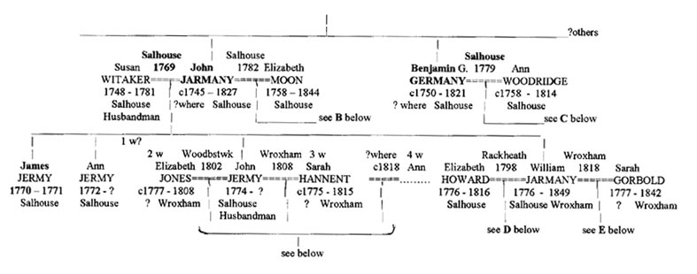
John re-married in Salhouse - to Elizabeth Moon on 9 Apr 1782 - and had a large second family with her also - mostly baptised as Jermany or Germany - but in neighbouring Woodbastwick, to where they apparently moved shortly after the marriage. These were: Mary (1782), Hannah(1) (1784), Hannah(2) (1787), James (1790), Richard(1) (1795), Richard(2) (1797), March (1801) and finally Robert (1804), who was baptised back in Salhouse. This latter Robert was still there in 1841 with his wife Hannah (whom he'd married in 1827 in Salhouse) and daughter Eliza, aged 15, all shown as Jarmy. This form was used by the Census enumerator for all the family still residing there that Census year). His older brother March had already married Mary Thirkettle (probably Hannah's sister) in Woodbastwick in 1823, with whom he appears to have had two daughters only - Caroline and Elizabeth. Early in the 19th century, some of John's 6 sons (from both marriages) would produce about 30 grandchildren and, by mid-century, even more gt-grandchildren - mostly baptised as Jermany, Jarmy or similar - in such as Salhouse, Woodbastwick and Wroxham. These are further delineated in the associated pedigrees shown below. John died in 1827, shown as aged a remarkable '84' and his second wife Elizabeth in 1844, aged 86; both being buried in the Salhouse churchyard.
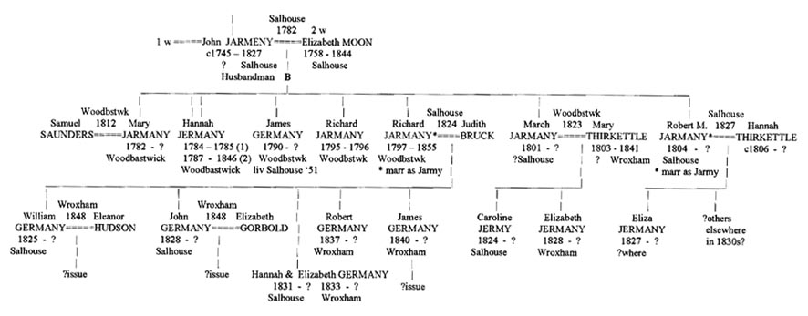
John's son James (bn 1790, the second time this clearly important name was given by John to a son) appears not to have married and by 1841 was living in Salhouse with his widowed mother Elizabeth (nee Moon) then aged 80+. The son Richard (born 1797 in Woodbastwick) married Judith Bruck in Salhouse in 1824 and subsequently had sons William and John in Salhouse in the 1820s and Robert and James in 1837 and 1840 in Wroxham - where this family lived by 1841 (as Jermany).
Meanwhile, John’s brother Benjamin had started his own family in Salhouse - firstly a daughter born 13 June 1781 and baptised ‘Sarah Germany’ on 6 Jan 1782. This forename choice appears unexplained. [She may have lived later with her 'uncle' William Jermy in Swanton Abbott - to be further described below.] Benjamin's next was his first son - baptised ‘Benjamin Germany’ on 25 Jan 1784 - the mother Ann described as ‘late Woodvick’. He was followed by another daughter ‘Ann Germany’ in Aug 1786, a second son named William Jermany (John having so named his second son also) - in Dec 1790 - and finally, a daughter Elizabeth, their last child, in 1794. The mother Ann was also described variously as ‘late Ann Wooggitt’ and ‘Ann Woodget’; clearly, spelling consistency left much to be desired in rural parishes then.
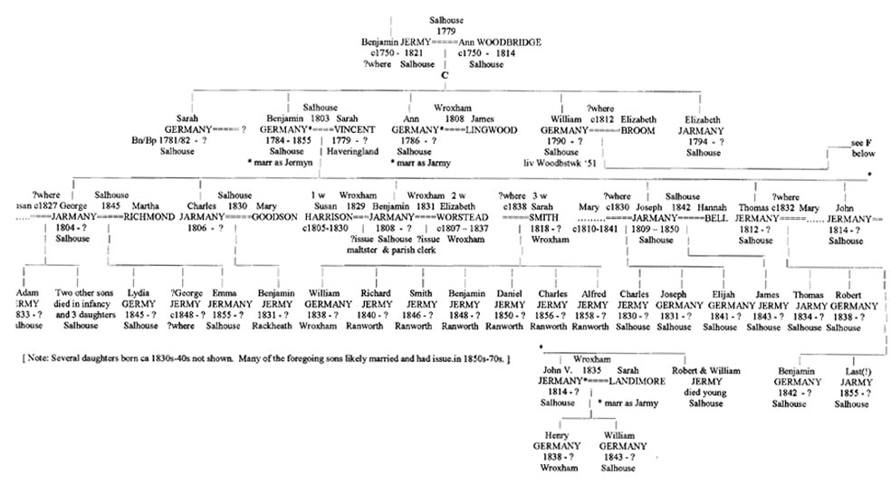
A third adult of this class of name - one William Jermyn - also married in Salhouse around this period - on 27 Dec 1787 - to a Mary Holsey. At first, I assumed this was probably another brother of John and Benjamin but later concluded that he was in fact the William Jermyn of Daniel's Lt Plumstead line (as discussed above in Part II). They had no subsequent issue baptised in Salhouse and seem to have simply married there and immediately returned to Lt Plumstead. Oddly, neither John nor Benjamin ever had the root name ‘Jermyn’ associated with themselves or their issue in the Salhouse area, for whatever reason. They appear mostly to have been illiterate at that time.
-- -- -- -- --
The Sprowston Family.
We may also briefly describe at this point a similar family to those above who were settled in neighbouring Sprowston from about the same time (and who have been overlooked, even if known about, for too long here). On 13 April 1782 (just a week after the above John Jermany married for the second time), another John Jermy/Jermany, also an agricultural labourer, married a Mary Chester (not a common name in Norfolk) in Sprowston. Issue to them is shown as baptised there between 1788 and 1796. It seems probable therefore that they had earlier issue born ca 1782 to 1786, say, likely including a namesake son John Germany - who married there as such on 22 June 1819 to a Sarah Barber (both of Sprowston). A second son William Germany, was with more certainty born to them and baptised in Sprowston on 27 Sept 1789 who also married locally - on 13 Nov 1823 - to a Hannah Walker. No issue is shown born to John and Sarah until a daughter Harriett Germany in June 1836. It is possible however that this may have been a second couple of these same names - who married later in Sprowston (on 21 Dec 1836); he as either John (or ?William) Jarmy of Wroxham and she as Sarah Catton of Sprowston. No other issue is then shown born there to a John (or William ) and Sarah Germany, etc.
William and Hannah on the other hand had a large family baptised in Sprowston between 1824 and 1835 including several daughters and sons: John (1828), Robert (1831) and Francis (1833) - all as Germany - none of which sons appear to have died young or married in Sprowston itself, although there were still several Jermanys/Germanys residing in Sprowston in later Victorian times. Thus, the son John seems to have married an Ellenor about 1850 and have issue with her in distant Wisbech during the 1850s and '60s and one other in Gt Yarmouth in 1860 before returnng to Sprowston by the 1861 Census where he is described as a Labourer, while Edward Jermany (b ca 1842), also a son of William and Hannah, married Caroline Wilson in Sprowston 31 Aug 1862 and had sons Edward and Joseph there in the 1860s.
A William and a Thomas Jermany, Brickmakers, born Sprowston ca 1853/4 and 1860 (or vice versa) - to Thomas Hare Jarmy (b 1826 St John, Norwich; d 1904, Sprowston Road (?Norwich) and wife Louisa Bacon b 1830 Heigham; d 1895, Sprowston - according to Colin Jermy), still resided there into the 1880s and '90s and had issue.
Prior to this, the elders of the first mentioned family above had both died: Mary being buried on 18 Oct 1818, aged 66, and her husband John Snr on 23 Dec 1827, aged 68, both in Sprowston. This places their births in the 1750s but just where was not immediately apparent. In 1782 at least, both were shown as already 'of Sprowston'. I could initially see no other 'local' John Jermy/Jermany/Germany etc born ca 1750-60 not accounted for otherwise, either north or south of the Yare. And while there were pockets of Chesters in such as Reedham and Swanton Novers, no Mary Chester was apparent born in the right period (although a Susannah Chester seems also to have resided in Sprowston). However, one of my last 'ports of call' to consider was to the south-east suburbs of Norwich where, in Caistor St Edmunds and neighbouring Lakenham, I had previously sought and found evidence concerning the origins of a Charles Jermy born (unexpectedly) in Paddington, London in 1853, as well as that of the Kenneth Jermy who for a time held the Jermy archive amassed by Stewart Valdar and who had himself published articles about some of the landed Jermy family. He'd asked me many years ago if I would seek to discover his own family's origins. I subsequently traced this back to the area around Caistor St Edmunds but got stuck (in those pre-Internet days) at that point. I suggested to him that prior to this, his line quite likely derived from the Jermyns of the Hempnall area (which was likely not the answer he sought).
When delving much later into the mystery of the origin of the above mentioned Charles Jermy, I found that his line and that of Kenneth Jermy appeared to have a common root in the Jermys of Caistor and Lakenham - as now written up in its own section on this website. Because some albeit later Jermys/Germanys of Sprowston gave (by Census) 'Lakenham' as their birth place, it occurred to me that this 'route' - of slipping 'round the corner' as it were, from the south-east to the more easterly suburbs of Norwich (in both cases then still essentially rural, with scope for farm employment), could provide an answer to where John Jermy of Sprowston may have originated - even if much earlier. And so it apparently proved:
We thus find that a John Jermy, was indeed baptised at Caistor St Edmunds on 6 May 1759 (making him, fittingly, 68(+) at his death in late 1827 - the age so reported) born as the second son of William Jermy, and wife Sarah (nee Browne) who married in Caistor on 1 Oct 1749. Their first son was a namesake William Jermy baptised there on 24 Oct 1756 who married (a Sarah) in Caistor in about 1773 and had a son William there 22 May 1774. The younger son John Jermy would strongly appear to be the one who married Mary Chester in Sprowston a little later - on 13 Apr 1782, both then described as 'of Sprowston', as noted above. Interestingly, these two brothers' respective first born sons (William and John) married a Mary Barber and a Sarah Barber, in 1800 and 1819, in Caister and Sprowston, respectively - further consolidating the linkage. The father William Jermy was born ca 1724 (died 1787, aged 63) to a Thomas Jermy and wife Sarah Burwood who had also married in Caistor - in 1720. Their places of birth, in the late 1690s probably, is presently unknown. Thomas died in 1759 and his wife in 1763. More on the family descended from this Caistor couple, via William and Mary Barber, can be seen in the section on the Jermys of Caistor and Lakenham.
-- -- -- -- --
We may return now to Salhouse to further consider Benjamin's two sons Benjamin and William who produced about 20 grandchildren in the early 19th century - mostly in Salhouse and Woodbastwick, with a few further afield in such as Strumpshaw and Ranworth. His 50 or so gt-grandchildren in turn didn't venture much further by mid-century either. By 1841 or '51, every other house in Salhouse must have had a Jermany, etc living there or nearby - the sons mostly agricultural labourers. These expanding families are shown in greater detail in the associated pedigrees above and below. It may be pointed out that the marriage between Benjamin Jermy and Sarah Vincent in Salhouse, on 1 Nov 1803, was recalled when noting that issue (including a Martha, Daniel and Benjamin) were baptised later in Swanton Abbott Wesleyan Chapel, in the 1820s and '30s, born to a Benjamin Vincent, Carpenter of Scottow and wife Sarah (nee Jermy). The latter Sarah would seem to be the one born in 1803 to Daniel Jnr and Elizabeth in Lt Plumstead (see Part II and also later in this Part concerning Swanton Abbott where Sarah is described in a Will as a niece of what appears to be one of Benjamin Snr's brothers - William Jermy).
Benjamin and Sarah (nee Vincent) appear to have still resided in Salhouse at the 1841 Census, with no children then with them. Their first son George was still in the village - with his first wife Susannah (both about 37) with their 5 children: Sarah (15), Emily (11), Adam (8), William (6) and Jane (3). Five of Benjamin's 7 younger sons: Charles, Benjamin, Joseph, Thomas and John all married and had issue - some in Wroxham, Ranworth and Salhouse, the son Benjamin having married three times (to Susan Harrison in 1829, Elizabeth Worstead in 1831 and Sarah Smith about 1837, with whom he had a large family in Ranworth where he was a Maltster and later parish clerk, as per the 1841 and '51 Censuses. His uncle William Jarmany (born 1790), younger brother of his father Benjamin Snr, also had a large family (with wife Elizabeth Broom) - in neighbouring Woodbastwick and, a little further afield, Strumpshaw, including namesake sons John (born 1818) and William (1820). Other Jarmanys in Woodbastwick in 1841 were Joseph (born ca 1808), James (ca 1818-20(?) and Henry (ca 1822), all ag labs. These expanding families were thus spreading out during Victorian times, if slowly and not very far. [James may have married - a Susanna Woods - ca 1844 (vs 1850) indicating a birth year earlier than that presently shown. They had, I believe, three sons baptised in neighbouring Salhouse in the later 1840s/early' 50s - James, William and Joseph.]
Benjamin's son Charles married Mary Goodson of Rackheath in 1832 and they then moved out of the area to Cringleford on the opposite side of Norwich where they had two children - James (1835) and Elizabeth (1842). By 1851, they had moved to neighbouring Bixley where Charles (now as 'Jermy') became a Farm Bailiff overseeing 4 labourers on 96 acres and had several more children. The youngest was a Mary Ann Jermeny/Jermy who had left home by 1871 and appears next in the 1881 Census living in the District of St George Hanover Square in London (St Margarets, Westminster) with her Irish-born husband William Grealey and several children. A descendent had contacted us with some of this information which allowed us to connect her to the Salhouse family.
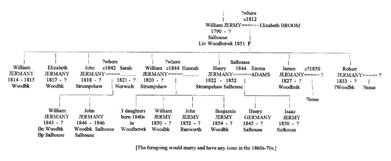
Amongst the expanding progeny descended from Benjamin and Sarah (Vincent), we have also searched out the line from one of the younger brothers of the foregoing Benjamin Jermany, the Maltster and Parish Clerk, following a request from his descendents who settled in Australia. This was the Thomas Jermany/Germany shown near the end of pedigree C above as having married a Mary..?.. She was in fact one Mary Ann Archer whom he married on 12 Oct 1832 in her home parish of Neatishead. Their Banns were posted there and in Thomas's home parish of Salhouse - where they initially settled and had their first 6 children baptised: Sarah Ann Germany on 13 Jan 1833, Thomas Jarmy on 27 April 1834, Mary Ann Germany - 8 May 1836, Robert Germany - 7 Oct 1838, Elizabeth Germany - 5 April 1840 and Benjamin Germany on 7 Aug 1842. However, the 1841 Census shows the family were then residing in Horning (just below Neatishead) (except for as yet unborn Benjamin). Thomas was a Shepherd. The 1851 Census shows Benjamin as born in Horning, Elizabeth in Wroxham, Robert in Hoveton (all 3 parishes neighbouring each other) and the 3 eldest all in Salhouse (where, however, all 6 were baptised). Benjamin was followed by William - born in Blofield - and the next 3, Emily, Arthur and Jane, in South Walsham. It appears that Emily and William were baptised in St Mary's church there on 16 Aug 1846. This could suggest they were twins but a later Census indicates that William was in fact born in 1843, in Blofield (a bit south of South Walsham), where the family seem to have lived for a time. It is thus possible that Emily too was born some time before their joint baptism in Aug 1946 - as in 1845, say, the Census showing her born in South Walsham. They then had a son Arthur Jarmeny there, baptised 7 Jan 1849, and a daughter Jane Jarmeny, on 13 June 1850.
By the time of that 1851 Census, this very mobile family had recently moved to Beighton, some 5 miles south, where Thomas was again shown as a Shepherd. All 10 children were as described above, with the two elder sons, Thomas and Benjamin now also shown as Shepherds. The surname for the family was now given as Jarmy. By 1861, the parents and Benjamin (aged 18 and unmarried) had moved on again - to Illington, a very small parish consisting of just one farm located some 15 miles south of their former abodes. Youngest daughter Jane (born ca 1857 in Whinburg) was also with them (the earlier born Jane(1) apparently dying in the early 1850s), plus a grandson Richard Jarmy, aged 3 (born Salhouse), probably born to eldest daughter Sarah Ann who, like Mary, Elizabeth and Emily*, were likely working as servants in neighbouring farms. I believe they also had a son named 'Last'(!) in 1855 who must also have died young. His naming didn't seem to do the trick however - if he was indeed followed by Jane(2). [* It was later noted that Emily, aged 15, was working as a 'House Servant' in the Market town of East Harling (near Illington) for a Butcher - Alfred Jolly - (living on 'Market Place' there), when she was shown as 'Emely Jurmy'.]
By 1871, the parents Thomas and Mary Jarmy, now aged 59 and 58, were living on Old River Lane, Churchfield, Tilney-cum-Islington (with daughter Jane and grandson Richard). This is miles from their former locations - not far from King's Lynn in the far west of Norfolk. Thomas would end his days there - dying in Dec 1878, aged 66. Two of their large family - namely Emily and Benjamin - apparently emigrated to Australia by about 1862. Benjamin may have married rather young (aged ca 19, say) before leaving England as I see a marriage registration in Wayland registration district (in which Illington fell) for a Benjamin Jarmy (Dec quarter 1861; wife's name not shown) as well as a birth registration for that same quarter for a Sarah Ann Jarmy in neighbouring Guiltcross district. In any case, both he and Emily were of married status not long after in Australia. By his first marriage, Benjamin had a large family there including two sons one of whom at least married (probably around 1895) and had issue himself, including a son born ca 1920s. Any subsequent Jermy/Jarmy issue in Australia from that line could thus be alive today. Emily's line has been more fully delineated by her descendents, the details of which may be available by contacting 'Lynda' at: 100pi1@bigpond.com .
-- -- -- -- -- -- --
We may return now to the two earlier progenitors of the foregoing lines and some of their Wroxham descendants (next door to Salhouse). After the burial of John Jermany's first wife Susan in 1781, the next Salhouse burial for an adult in this Jermyn/Jermany/Jarmy family wasn’t until Oct 1814 (confirming their paucity there in these earlier years) when his brother Benjamin’s wife Ann was buried - as ‘Ann Jarmy’. Benjamin himself died in Salhouse 7 years later - in Sept 1821 “aged 72 years” (and was thus born about 1749/50). His elder brother John Jermany was, as mentioned, buried there on 13 Dec 1827 - “aged 84 years” (and so born about 1743/44). One naturally wondered where and to whom these two apparent original Salhouse 'Jermyn/Jermany' brothers were born - in those mid-18th century decades. Certainly not locally, ie north of the Yare. We may mention here that the nearby Wroxham Jermyn/Jermany events (yet to come) were all post-1800 - beginning with issue born there to William and Elizabeth Jermyn (nee Howard) in 1801; he was the William born in Salhouse to John Jermany and first wife Susan in 1776. William married Elizabeth in nearby Rackheath on 28 Oct 1798 (he shown as Jarmy) and apparently had had a son Robert about a year before [on what evidence is this based?] who seems later to have lived in Ranworth. For in the 1851 Census, this Robert (seemingly) was shown as aged 52 (ie 52+) and born in Salhouse, described as 'afflicted'; but no baptism is shown for a such Robert in the Salhouse or Rackheath register around that time (ca 1797/8), I believe. His wife Hannah was 54 and born in neighbouring Beeston St Andrew. William and Elizabeth then had a ?second son - William Jarmeny (barely born in wedlock) - on 1 Jan 1799 who is shown (I believe) as baptised in Rackheath - on 6 Jan that year. [However, a William Jarmeny, son of William and Elizabeth, is shown by the IGI at least to have been born and baptised in nearby 'Hellesden by Norwich' (about 3 miles west) but on these same two respective dates.] In any case, along with the rest of the family, he would have been raised in Wroxham to about 1818 (if he survived), where he would no doubt have become an agricultural labourer typically named Jermany, as were his brothers and his father.
We do know that a William Jermy married in Swanton Abbott (about 5 miles north) on 10 March 1821 (to an Elizabeth Taylor) and, on the face of it, could represent the William thought to have been born/baptised in Rackheath (or Hellesden) in early 1799. Interestingly, William Jermy of Swanton Abbott was apparently shown in the 1841 Census (taken in June that year) as aged 41 and thus born before June 1800 - which fits quite well with this latter idea. However, if such ages were accurately recorded, the William Jarmeny born and baptised in Rackheath would actually be 42+ at that Census (if he had lived) and hence would normally be shown as '40' - as ages in 1841 were more typically recorded only to the nearest 5-year point below actual age. It seems odd therefore that his exact age was apparently recorded in that Census (which is found on odd occasions), yet wasn't shown as 42. There appears to be no Census entry for him locally, nor elsewhere, for 1851, which could have confirmed his place of birth. The source of the William Jermy who married Elizabeth Taylor in Swanton Abbott is discussed further below (where his possible Rackheath origin is further considered - to be unlikely).
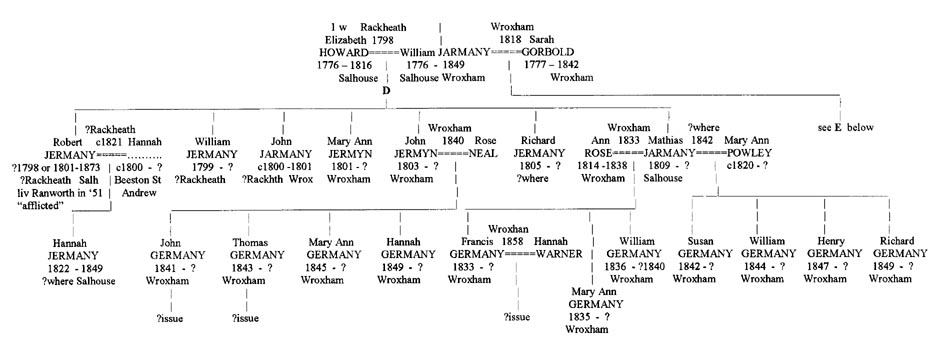
William and Elizabeth (nee Howard) appear to have left Rackheath for neighbouring Wroxham by about 1801. After losing one son - who was buried as 'John' Jermany in Wroxham in 1801 (possibly born and/or baptised in Rackheath in ca ?1800 - although there is no baptismal entry in that name in the Rackheath (or nearby) registers - they then did have a son baptised as John Jermany in Wroxham - in 1803; he later married Rose Neal there by 1840. After having a daughter Harriett (ca 1838?), the latter couple (John and Rose) had sons John (1841) and Thomas Jermany (1843) there, and then two daughters. Meanwhile, William and Elizabeth had a second son baptised in Wroxham - Matthew/Mathias - in 1809 who later had issue there by two wives in the 1830s and '40s, including sons Francis, William, Henry and Richard Jermany, as shown in the relevant pedigree. Matthew lived to a good age, dying in 1889, aged 80. [We may consider the possibility that the son of William and Elizabeth who died and was buried in Wroxham in 1801 (as an infant) should possibly have been shown as 'William' - there being no son born/baptised as 'John' Jermany to William and Elizabeth - in either Rackheath or Wroxham (or nearby) between their marriage in 1798 and settling in Wroxham in 1801. They then named a son John in 1803 (possibly their 1st of this name?) but no other as 'William'; nor is there any evidence of a subsequent burial, marriage, father's name at baptisms or Census entries locally for such a 'William Jermany' of the right age (born 1799) - who would be expected to have become a farm labourer. There was, however, a William Jermyn who married a Charlotte Vincent in Catfield in 1832 (and had a son Vincent Jermyn there the following year); I know not from whence he derives (born ca 1800-1810, say) but if he was (conceivably) the otherwise missing Wroxham William of an appropriate age, this could account for him. But then he too seems to disappear from the records.]
The first Jermyn/Jermany/Jermy marriage in Wroxham itself wasn’t until 1808, the present family's initial centre having been Salhouse and Woodbastwick, not Wroxham, although many more events would eventually take place in the latter parish later in this new century. The Vicar there noted in the register that the Wroxham church had been broken into in Aug 1776 and about 35 years of entries removed from that register - covering the preceding years back to about 1740. I believe I checked the Archdeacon's and Bishop's Transcripts for that period for Wroxham but found that no Jerm(an)y entries at least had been made there during all that time, and none seemed apparent there during the last 25 years of that century either.
The first Jermyn/etc marriage noted in Wroxham was thus in November 1808 between a daughter of Benjamin and Ann - Ann Germany - and a James Lingwood, and the second just a month later in December that year - between William Snr's slightly younger brother John (born 1774) - to a Sarah Hannent (this the third of his 4 marriages) - with whom he would have several children baptised there. A Robert Jarmany, apparently born to them about 1814, stated his place of birth as Salhouse however in the 1851 Census for that parish - where he later lived with his wife Elizabeth (nee Waters) and their children Elizabeth, Sarah and Daniel (shown aged 7, 6 and 3 in the similar 1841 Census, as Jarmy) plus later issue John, Mary Ann and William - as 7, 4 and 1 in 1851 - as Jermy). John's second marriage had been to Elizabeth Jones in Woodbastwick in 1802. They had just one son - Francis - and a daughter Sarah, both baptised in Wroxham - in 1804 and 1807 (as Jarmany), respectively, before Elizabeth died there in 1808 and hence John's third marriage there later that year. He married for a fourth time, around 1818, for the 1841 Census shows him in Wroxham (working as a Groom), aged 65+, now with 4th wife Ann (Lake), 60+ - with whom he had two more sons: Thomas (in 1819) and William (1822) in Wroxham. Fertility was certainly no problem amongst these healthy farm labourers (unlike many of the gentry - of both sexes).
Thus, John's eldest son Francis married Charlotte George in 1838 in Gorleston and then settled in Potter Heigham where they had 10 children, mostly baptised as Jarmany although the name would soon alter to Jermy, possibly after the publicity of the 1848/49 events. [But who was the Francis Jarmyn who married in Catfield in 1830 to a Maria George ?] The eldest child of Francis and Charlotte was a daughter Elizabeth Jarmany who married Richard Aldous in Poplar, East London to where the family appear to have migrated by the 1860s. Francis Jarmany, listed in the 1841 Census for Potter Heigham as an agricultural labourer, would prove to be one of the first of this Broadland's family to display a certain 'restlessness' and mobility (having been in Wroxham, Gorleston, Potter Heigham, Poplar and Barking). He was quite possibly a man who wanted to 'get on' in life - to the extent he could. Significantly, his gt-gt-grandson Douglas Aldous proved to be a man of achievement and merit, much interested in his Norfolk roots.
As with John Jarmany (1774), his brother William Jarmany (1776) also re-married (to Sarah Gorbold in 1818 in Wroxham) and had further issue - sons James (1818 in Salhouse) and Francis (1823 in Wroxham, where the family resided at the time of the 1841 Census, but now as Jermy). Francis married Rebecca Woods and had 3 sons in Wroxham. Oddly, a James Jermy/Jermany also had 3 sons - in Salhouse - about this same time, and with a wife Susanna Woods (I believe). This concordance might suggest that these two brothers had married two Woods sisters. But, as pointed out to me by Colin Jermy, the brother James was in fact shown as still single in 1851, residing with his brother Francis in Wroxham. It thus appears that the James who married Susanna (apparently in 1844) was another one (possibly a second cousin) - likely born in nearby Woodbastwick ca 1820-24, for whom details are still sought. In any case, these two families in Wroxham and Salhouse would likely further expand locally over subsequent generations, along with their several cousin lines. We have not attempted to pursue these to the present.
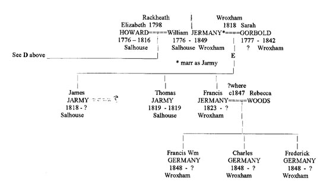
-- -- -- -- -- --
Before compiling the foregoing pedigrees, the question was posed: where did John and Benjamin ‘Jarmany/Germany’ of Salhouse (and later Woodbastwick) come from? I had eventually concluded that 'my' Robert Jermy of neighbouring Panxworth must be the Robert baptised in Kirby Bedon on 20 June 1755, the son of William Jermyn/Jarmy/Jermy and his second wife Pleasance Bennett. This William derived ultimately from the extensive Jermyn family of Hempnall (later often called Jermany, Jarmany, Jermy or Jarmy) - as had the Daniel Jermyn who was the earliest of this family to settle and expand ‘north of the river’ - ie at Lt Plumstead - by about 1730. If, later, any other 'Jermyns' from south of the river should settle locally, Daniel (or his sons) could reasonably be seen as possible linking figures - who could help any such distant ‘cousins’ settle and become established later in this general area. If Robert derived from the Kirby Bedon family, then what about his immediate Salhouse and Woodbastwick neighbours John and Benjamin? Was there any evidence that they too were related to Robert and thus a part of this same Kirby Bedon family? Yes, indeed:
In Kirby Bedon, the first marriage of Robert’s apparent father William Jarmey/Jermy/etc was on 22 Oct 1738 - to Ann Scarlett (both single) with whom he would have several children baptised there before Ann died - in Dec 1753. These were: William (6 Mar 1738/39 - a bit early), Richard (9 Oct 1741), James (4 March 1743/4), Ann (31 Mar 1746), John (29 Mar 1747), Benjamin (23 Aug 1748 (buried 6 Jan 1749/50), a second Benjamin (11 Jan 1750/51) and a first Robert (12 May 1753 (buried 9 June 1755). [Did Ann have an even earlier daughter - Jane - ca 1837/8, as 'Scarlett' but raised as Jermy? See reference to such a Jane Jermy in the discussion below concerning the Swanton Abbott Jermys.] A close friend of William the father must have been Benjamin Garrard who died in Kirby Bedon in 1758 - as William gave ‘Garrard’ as a middle name to both the sons he named Benjamin. Sadly, this never re-appears in any of the surviving Benjamins' own events later (in Salhouse) – to help further cement this origin. By adulthood, he may of course have been quite unaware of having been christened with this middle name; one rarely seeks out one's own baptism entry, especially if not literate. The relevant pedigree is now slightly altered and considerably expanded below:
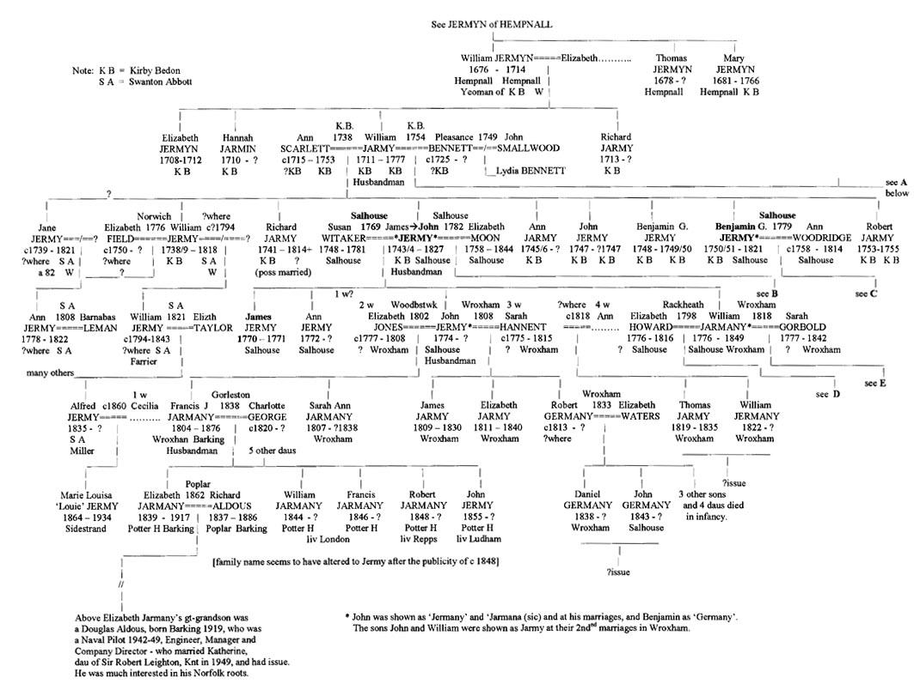
William married secondly Pleasance Bennett on 13 Oct 1754 in Kirby Bedon - by whom he would have another large family there - up to 1770 - following the birth of their first son Robert in 1755 - just days after the death of the earlier Robert (born to Ann). Thus, amongst others, this later-born Robert did indeed have older brothers (ie half-brothers) John, Richard and Benjamin Jermy - and of the right ages - very near to two of whom he very probably lived, north of the river, in his adulthood. Their mutual father William died in 1777 and it was possibly about then that Benjamin and Robert made the move to be nearer older brother 'John' (who had already so 'migrated')- in or near Salhouse; (Robert had apparently been away firstly to Loddon temporarily ca 1780-83, either seeking work or to marry a ?Kirby girl - away from prying parents -with whom he had an earlier son). One then wondered if the eldest brother of this family - William (born 1738/9) - might also materialise locally - to help consolidate this confident interpretation of their joint origins. Several of Robert’s younger brothers later died in infancy. I have no evidence of any survivors of this later family marrying and having issue in the Kirby Bedon area itself – ie ca 1770s to '90s, nor elsewhere. And, as mentioned, nor were there any Jermyns, etc being born, marrying, having issue or dying in the Salhouse area - before the arrival of brothers John and Benjamin, and later Robert (clearly from ‘somewhere’, and where else?). There was a John Jermy ?baptised in Norwich in 1743 who is a possible alternative to the Kirby Bedon 'John' (but see now below) - although a comparable Benjamin or Robert don't appear there). We may thus reasonably conclude that these three brothers most likely did come to Salhouse from Kirby Bedon. But if so, where were the 2 other surviving brothers of this family - that is, William and Richard ?
After discovering that the William Jermyn who had married in Salhouse in 1787 was not the one of this immediate family (but of Lt Plumstead), I searched about my notes and was pleased to discover another William Jermy, single man, aged 36 or more - who had married Elizabeth Field, single woman, aged 23 or more of St Augustine's, Norwich, in St Peter Mancroft church, Norwich on 27 Dec 1776 - by licence taken out the previous day. I believe the licence showed him as a 'Husbandman of Swanton Abbott' (this to be confirmed) and thus of a rural background. No subsequent issue seems apparent for them either in Norwich or in the Swanton Abbott area ca 1777 to 1790s. His wife died in 1789. But, William Jermy himself was, after a long life, buried in Swanton Abbott - on 27 Feb 1818, “aged 80 years”, a Farmer, and thus born about 1738 - as was William Jermy of Kirby Bedon. His age at the marriage in 1776 - of '36 or more' - also points to a birth about that year.
But more crucially, William Jermy left a Will - written in 1813 and proved in 1818 - in which he refers to 'my natural son William', not yet 21, and to three of his own brothers still alive that year - namely: John, Richard and Benjamin Jermy!! Sadly, he does not mention their then current abodes. However, one can see no other brothers William, Richard, John and Benjamin Jermy who fit the period, area and ages concerned other than those born to the elder William Jermy(n) in Kirby Bedon in mid-18th century. This combination and timing appears nowhere else as far as can be seen. Robert (bn 1755), not mentioned by William, may have pre-deceased him or, being a much younger half-brother, would in fact hardly be known by William in any case, before the latter man left home - by about 1756, say, when Robert was still a baby. Of likely significance also is the fact that William’s executor was one Joseph Duffin, then 'of Hardley' just south-east of Kirby Bedon. Someone of this rather uncommon name was in fact born immediately next to Kirby Bedon, in Surlingham, and contemporary with William Jermy of Kirby Bedon (all three parishes being just south of the river Yare.
Not long after William died in 1818, another elderly Jermy of Swanton Abbott did so as well, in 1821, and also left a Will. This was a Jane Jermy, buried there on 30 Oct 1821, aged 82 and so born not long after William. There appears to have been no other (unrelated) Jermys in lor near Swanton Abbott at that time or before. Was she William's sister or a sister-in-law therefore? However, he makes no mention of her in his Will. I don't believe she was described as a widow (eg of the brother Richard). Nevertheless, she refers to her (?only) daughter Ann who had married as Ann Jermy in Swanton Abbott on 29 Dec 1808 (by licence) to Barnabas Leman, with whom she had 3 children. All 3 and both parents were dead by 1822, however, with Ann then 45 and so born to Jane about 1777 when Jane would be in her mid-30s. Oddly, this is the very year one might have expected William and Elizabeth to have had their first child (if in fact they'd had any); interestingly, Ann was the name of William's (and Richard's) mother! [Might Jane have raised and adopted Ann if William's 1st wife Elizabeth had died in childbirth - thus explaining William's later born son William ?] Does the Swanton register(s) show any Jermy births in the 1770s? [It may be just a coincidence, but a Sarah Jermy of the Lt Plumstead line married a Benjamin Vincent of Swanton Abbott (ca 1825) and with him had several children baptised there in the 1820s (also at the Wesleyan chapel).]
According to William Snr's Will written in 1813, the above 'natural son William' was to receive a legacy 'when 21'. We might reasonably estimate his birth around 1795-8, say, seemingly to someone who was not the elder William's wife (whether or not she had yet died herself); he may have been baptised with his unmarried (and unknown) mother's surname. He appears however to be the William Jermy later so shown in an 1841 Census for Swanton Abbott - then 'aged 41', a Farrier, with wife Elizabeth (whom he likely married about 1820 or so,) with issue Reuben (11), Naomi (9) and ?Arthur (5) still at home; 'Arthur' was possibly mis-read for Alfred (see below). It seems that Elizabeth may have borne William before her marriage - in about 1819/20, say - as a William 'Jermy' is later shown in the 1851 Census for Coltishall, a 'Horse Breaker', born in Swanton Abbott about then (ie he was shown as 32), with a wife Mary Ann and son William Jermy, 8 (the 4th of this name). [Yes, this later confirmed; he was born William Taylor - on 21 March 1819 in Swanton Abbott to an Elizabeth Taylor, a Cotton Weaver (seemingly born in London), daughter of John Taylor and wife Ann. But William and Elizabeth soon married and William was, with little doubt, raised as William Jermy - his putative father's name - aa seems to have been the case similarly with respect to his own father (William 2).] The elder William(1) also mentioned in 1813 his niece - Sarah Jermy - who then lived with him. We may note that his assumed bother Benjamin did have a daughter Sarah - baptised in 1782 in Salhouse. (I have a note about another Sarah (Ann) born about this same time (ca 1780) to a Richard Jermy, but have no details at present; we recall that William also had a brother Richard - of whom we presently have no other information.) Or was it this Sarah the one who married Benjamin Vincent?
We later found that the second William was indeed married in Swanton Abbott - on 10 March 1821 - to Elizabeth Taylor, both single and of Swanton Abbott. Both signed the register. After having first son William (Taylor) in March 1819 (likely named after William and/or his father?), who was raised as a Jermy, they had several more children in Swanton Abbott between 1821 and 1840 (see below) before William died and was buried there - on 3 Apr 1843, aged 47. This places his birth nearer 1796 than the 1799 suggested by his 1841 Census entry, when he would have been nearer 44 than the 41 apparently shown. [Ages were supposed to be rounded down' -to the 5 year point below actual age). He would thus be aged about 16 or 17 when he was referred to in 1813 by his father as 'my natural son William' - to receive a legacy when 21 (in about 1818). Interestingly, about 9 months later, Elizabeth Taylor gave birth to her son William after which, as mentioned, they married in 1821. Their second child was a daughter named Louisa (named after whom?) who was baptised on 9 Sept 1821. She was followed by John (named after Elizabeth's father presumably) born 23 March 1824, possibly in neighbouring North Walsham, although not baptised until 13 July 1826 - at the Church Gate Wesleyan Chapel in Swanton Abbott (where most of the family were baptised). It is possible John married (ca ?1845) but he died young and was buried in Swanton on 12 Sept 1847, aged 23. The next child was Elizabeth Jermy - born 4 June 1826 (baptised 15th June) who would later marry Edward Sendall, a Gardener of Erpingham, in about 1847 - where they had twin sons John and James in 1848. Elizabeth was followed by Reuben in 1828 and Naomi in 1831, two non-conformist names. Reuben married a Caroline about ?1860s and had a daughter Caroline in 1868. They lived near Lt Hautbois and later in Sco Ruston, he working as a Horse Groom.
An Alfred Jermy was born next to William and Elizabeth - in Jan 1834 but he died in October that year, aged 8 months. A second Alfred was then born to them and baptised on 8 Sept 1835, who survived, and finally they had Nathaniel (another biblical name) in March 1837, but he too died in infancy the following February, aged 11 months. William Jermy, the father of this family, was described as a Farrier in the 1841 Census. But, as also mentioned above, he soon died - in Apr 1843. By 1851, his widow Elizabeth was employed as a Nurse Maid at The Hall, Swanton Abbott, shown in the census that year as aged 48 (and thus born ca 1803 - in London). She was still in this position in 1861. Her son William, the horse breaker, appears to have married firstly about 1840-42 - to Mary Ann Bowen, with whom he had a son William Jermy in Coltishall in 1843. They were still living there in 1851 when the census that year showed that this was where Mary Ann was also born.
It was previously thought that Mary Anne may have died young (around 1852) and that William re-married - to yet another Elizabeth - with whom he then had two daughters - Mary Ann (1855) and Lydia (1858) - in Norwich - they later residing with their mother Elizabeth Jermy in Norwich in 1871, she by then a widow herself working as a 'serving woman'. By 1881, she and Lydia were still in Norwich, Elizabeth now a Needlewoman, aged 52 (born ca 1829) and Lydia a Tailoress. However, we shall have to account for this latter Elizabeth (and any William Jermy she may have married) by some other scenario. For William and Mary Anne were in fact to continue their lives together, with their son William, through the 1850s, 60s and 70s - but elsewhere (very
elsewhere!). For while seeking evidence concerning the whereabouts of another William Jermy also born in the 1790s, with a son William born about 1818-20, I was intrigued by the discovery of just such a father and son combination residing in America by the 1860s.
Various indexes had revealed that William Jermy, a Shoemaker aged 51, resided in the village of 'Vienna', Oneida County, New York (pop. about 3000) in 1870 with his wife Mary Anne, 52, and a son William, a Bank Clerk, aged 27 - all shown as born in England. (One index showed they were already there by 1860, but I have been unable to re-locate this.) The local cemetery index showed that the father William, born ca 1819, was buried in Vienna on Feb 11 1876 - as were his wife Mary Ann on Feb 1st, 1884 (born about 1812) and their son William in 1918 (born England in 1843). Moreover, William the father was listed as a 'Civil War veteran'. Did he learn to be a Shoemaker thereby and so explain why he wasn't shown as a Horsebreaker ? Or, were they not the family from Norfolk but maybe the other William Jermy I was actually searching for ?
I then checked the 1880 census and found no Jermys living in Vienna although the son William and his wife - Susanna nee Kenyon and their son, yet another William, were found living in nearby Oneida, in County Madison - he now a Dry Goods Salesman. The mother Mary Ann may have remained back in Vienna as she and all of this latter family were also buried in the Vienna cemetery; she (as noted) in 1884, her son in 1918 (as William T. Jermy), the latter's son, as William K. Jermy the year before in 1917, and his wife in 1938. She was the daughter of a Rev S.F. Kenyon.
When had the family arrived in America ? I checked next the Passenger Lists of those arriving from Europe at New York between 1820 and 1880. This provided the confirmation needed. William Jermy, aged 32, his wife Mary Anne, 30, and their only son William Jnr, 8, arrived from Liverpool, England at New York on the ship 'Harmony' on 22 May 1851. With them was a George Jermy, aged 11, shown as another son although I suspect he was in fact a nephew, a son of .................... and born (I believe) 'George Hook'. The record concerned usefully gives the intended destination of this family - as 'Albany, New York' which is roughly in the same area of upper New York state as Oneida county ( a little to the west), where we had noted their presence as from 1860. Also, it shows from which part of England they came - namely, 'Norfolk and, importantly, the occupation listed for William - that of 'Horsebreaker' ! This confirmed the source of this branch of the family as not being that of the missing William Jermy and/or son of similar name, who I had thought may have originated in Berkshire and Oxfordshire, and pointed instead to the family of William Jermy of Swanton Abbott, Norfolk. This William was in fact the elder brother of Louie Jermy's father Alfred Jermy, the Miller of Sidestrand. William and family had resided latterly in Coltishall (his wife's birthplace), where he was listed as a Horsebreaker in the 1851 census - just a few weeks before thay all made their way to Liverpool to board the ship 'Harmony'- to start their new lives in America. We may note also that they no longer appear in the English censuses (of 1861, etc)
It appears that they moved from the town of Vienna to nearby Oneida (in neighbouring Madison county) before 1880 - where the younger William was noted as a Salesman for a Dry Goods Company, married to Susan Kenyon and with their son William K Jermy (the K quite likely for his mother's family name of Kenyon). By the next Census, they are joined by a daughter Leola Jermy (born 1881) who, by 1918, had married one William Speirs, also a Salesman. Both of the William Jermys were to die about this time. The mother Susan then moved back to Vienna where she and the others were all buried in their turns. Sadly neither the younger William nor his sister had any recorded issue and so the Jermy line from this source appears not to have continued in America. Thus far, I have not located any record of the elder William's career during the Civil War. One might have expected him to have been in the cavalry. It was noted that on several occasions, he was described as William T Jermy and this could represent the name 'Taylor' which was seemingly his inital, if temporary, surname - before 1821.
The Genealogy of 'Louie' Jermy of Poppyland Fame.
The above-mentioned (second) Alfred Jermy (born 1835) was next noted in the 1851 Census, now 15, and living with his sister Elizabeth and her husband Edward Sendall in Erpingham - Alfred shown in his youth as an agricultural labourer. On 2 Oct 1858, then 22, he married for the first of 4 times to Cecilia Burton (born 1834 in Hanworth) - at Sidestrand on the north Norfolk coast. He was initially a Carter (1861) but later a Miller there - living in 'The Cottage' in Sidestrand, with a windmill just behind the house. Their first child was a son William Jermy born there in March 1861, followed by a daughter Marie Louisa Jermy (later called 'Louie') in 1864. Cecilia died by about 1868 and William married 2ndly Elizabeth Cooke in 1871 with whom he had 3 more children - Alfred, Harriett and George Jermy. By 1881, his wife was now a Mary Ann and living with them that year were William, now 20, 'Louie' (17), Alfred (8) and Harriett (6). Within a few years, Miller Jermy's Cottage in Sidestrand and the surrounding area, as well as his elder daughter 'Louie' Jermy, would become quite renowned.
The name 'Jermy' had received some national publicity in 1848 when Isaac 'Jermy' and his son of this same name, were murdered at Stanfield Hall, near Wymondham, by James Blomfield Rush. However, their real names were in fact Preston which they had changed to Jermy in 1838 to regularise their occupancy of Stanfield Hall, as per the 1751 Will of an earlier member of the landed Jermy family, who had formerly held that estate. Otherwise, the name was not widely known beyond Norfolk and Suffolk since the time of the English Civil War when brothers Francis and Robert Jermy, of Gunton and Bayfield, respectively, played a prominent if local role in Norfolk on the republican side in that conflict. (There may also have been some awareness in the mid-18th century of Capt John Jermy of naval fame.) But, in August 1883, a respected London journalist and drama critic of the day, Clement Scott, happened to take a stroll eastward along the north Norfolk coast from the resort town of Cromer and was much taken by the profusion of poppys growing thereabouts. He happened upon Miller Jermy's Cottage in Sidestrand and wondered if he might obtain lodgings there for a few days, Cromer itself being fully booked up. His daughter Louie, now 19, answered the door and gave an affirmative reply to his request. This was to change Louie's life.
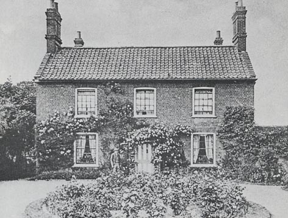
For, a week or so later, a column appeared in the Daily Telegraph entitled 'Poppyland' in which Scott described the beauty of the area and the hospitality he had received. He wrote a number of further articles about it and over the next 20 years or so, the area around Sidestrand and its neighbouring village Overstrand grew in popularity as a place of resort for many famous people of London. It became the place to go for a summer break or even to purchase a small summer home. The Cottage became known as 'Mill House' (shown above) and Clement Scott and his literary friends continued to visit and stay there on many occasions. His many articles about it were gathered together in 1886 into a book called 'Poppyland' and after her death in 1934, a book about Louie herself was published called 'The Maid of the Mill'. In this, she was described as typical of the rural girls of the times as not too well educated but kind, generous, well-mannered and very competent in all domestic matters. She was also described as having a most striking personality and enjoyed playing her role as hostess to the famous. Three years after her father died in 1916, she left 'Mill House' and lived in another nearby cottage until her own death there in 1934, by which time the earlier momentum of the 'Poppyland industry' had largely declined.
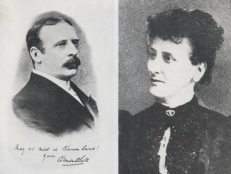
Clement Scott 'Louie' Jermy
The ancestry of Louie Jermy has in effect been set out in the earlier sections but may be further summarised here: Her father Alfred, latterly a Miller, was, as noted, born in 1835 in Swanton Abbott to William Jermy (born about 1796, as estimated), a Farrier and 'natural son' of the elder William Jermy, a small farmer (husbandman) of Swanton Abbott, and an unknown mother. [The possibility that the latter William may have been the William Jarmany born into a family of agricultural labourers in Rackheath in 1799, as mentioned earlier, would now seem much less likely; indeed, that William may have died an infant in Wroxham in 1801, wrongly described as 'John'; the family not having had an infant son John by that date.] It strongly appears that the William Jermy of Swanton Abbott, born in 1738/9, was a brother of the Richard, John and Benjamin Jermy (to whom he refers in his Will), all born in Kirby Bedon to William Jermy(n) and his first wife Ann Scarlett. This latter William (a husbandman born 1711) was, in turn, the son of William Jermyn Snr (born 1676), a Yeoman farmer of Kirby Bedon latterly, but originally of Hempnall, where he requested in his Will of 1714 to be buried. (The Vicar at Kirby Bedon appears to have generally interpreted the otherwise consistent Hempnall surname of 'Jermyn' as 'Jermy' and 'Jarmy'.) William's father and grandfather in turn, both John Jermyns, were also Yeomen, who had held positions of Bailiff and Steward in Hempnall. Being the eldest son, William Jnr (born 1738/9) may have had some advantage over the younger sons in Kirby Bedon in getting established as a small farmer (like his father) - but in Swanton Abbott by the 1760/70s, say. This direct descent of Louie Jermy is shown in the following pedigree (without the many collateral lines). [Note that the date and place of death of William Taylor/Jermy should now read '1876 and New York'. His only son William (b 1843) married in 1874 in New York and died there in 1917. He had a son William K Jermy (b 1875) who also died there unmarried in 1918.]
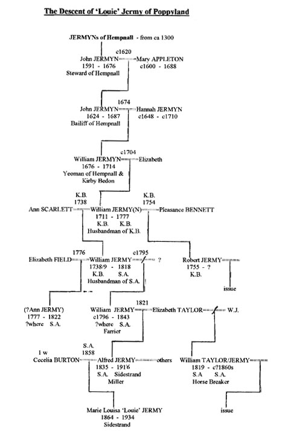
Thus, as with the Jermy name associated with the publicity of Stanfield Hall and its Preston occupiers, that of Louie Jermy and Poppyland was also not that of the true Jermy family per se, but a shortened derivative, albeit over several generations, of the ubiquitous Jermyns of Hempnall ultimately.
-- -- -- -- --
On the Identity of 'John' Jermany of Salhouse.
When I decided that Robert Jermy, ancestor of Bruce Jermy of New Zealand, was born in Kirby Bedon (and was in fact another of this Jermy(n) family) and concluded that William, Richard, 'John' and Benjamin were indeed his ‘brothers’, the latter two living for some time in Salhouse where their names were more usually shown as Jermany or Germany, I drafted out in written form what I termed a ‘speculative pedigree’ - including most of the many later Jerm(an)y lines so emanating in that area. Douglas Aldous (one such descendant) to whom I sent a copy, helpfully typed and re-drafted it into several separate pages. It later circulated quite widely, I believe. Unfortunately, he left out my many question marks and dotted lines that indicated several uncertainties. Meanwhile, I pursued other interests in genealogy and lost touch with most of the elements of that extensive, if incomplete, family tree. I had always been concerned that certain dates in the pedigree didn’t fully accord with certain ‘facts’ - particularly regarding 'John' Jermany’s year of baptism (1747) which would certainly fit better if it (or especially his actual birth) had been nearer 1743 or '44, say. Still, his reported age at death (84) may, I felt, have been an approximation; he likely had few if any contemporaries at his burial who could report accurately on this - or it may even have been mis-read by Rev Boddington (the Vicar), before publishing his 1905 pamphlet. Was he really nearer 81, for example, and so born about 1747? For, awkwardly, a brother James appeared to have been born (or at least baptised) in that more fitting year of 1743/44 in Kirby Bedon. As an initial compromise and approximation, I had thus for a time showed 'John's' birth at 'ca 1745'.
However, all this may now prove academic (mostly first written about 2000) - since I later found (following a more recent enquiry) an old scrap of a note - from earlier searchings - covering some of the Kirby Bedon register which sometimes placed entries chronologically - mixing baptisms, marriages and burials - and sometimes placing burials elsewhere. There was also a partial index to help one. And of course, the vast majority of such entries are not those one is primarily interested in. This note included some entries I seem to have jotted down more systematically during the later searchings - including that for the baptism - on 29 March 1747 - of the John Jermy born to William Jermy and first wife Ann (nee Scarlett) - along with some of the others. But, that earlier note of mine had, I now find, also included a later scribbled insertion which said simply… “…and buried 19 June 1747” ! ; that is, just 6 weeks after the 1747-John's baptism. I don't seem to have noted if it necessarily identified the person buried as an infant or not, or necessarily the son of William; the burial entries at that time were on a different page, I believe. Initially, I just assumed it was the same John - who had been baptised just a few weeks before; I'm not so sure now. If the phrase 'son of', 'daughter of', 'wife of', 'spinster', 'widow', etc isn't shown, it may imply that the person buried was an adult male, say. What to think therefore?
Firstly, one notes that the son baptised (and born?) at about the right time (for someone dying in 1827, aged 84) - ie James Jermy – oddly never appears later in the immediate area in any guise - be it marriage, having issue or burial - including burial as a child in Kirby Bedon or nearby. Nor in Salhouse and area. Whatever happened to him, we must ask? [But see re a Burlingham/Strumpshaw James Jarmy below.] We note also that although the first Benjamin who died in that Kirby family was followed by a second given that same name, and that after the first Robert died, he too was followed immediately by the next son again being so named - as Robert, but, after the John who died in 1747, the next son was not so named (ie as John again) in that family - despite the family continuing to have issue there, including sons, for 15 more years!??). Why ever not? Did they begin to call young James (b 1743/4) ‘John’, therefore – ie from 1747 when he was just 3 or so - to replace the recently died original John - who died aged just 6 weeks that year ? If so, there would be no need to name a later son (of which there were to be several) as 'John' again, as was otherwise their consistent habit. And finally, why did 'John' in Salhouse name his first son, of all names, not John, after himself, nor even William, after his father, but…most inexplicably...‘James’ !??? Was he actually commemorating his own real birth name therefore - which otherwise had been left 'dormant' since he was 3 ?
One can see no John born (in any location) to a James Jermy in the 1740s which might otherwise explain this unusual name choice for a first-born son to a new father named 'John Jarmany' (that is, named after such an assumed father, as is generally the case). And then, after fittingly naming the next son John, after his own long-assumed name, he named the next one, again most fittingly, ‘William’ - ie after his own father. He then names his first daughter ‘Ann’ - which was the name of his apparent mother. Finally, we may note that this John names no daughter ‘Barbara’ or similar (this being the name of the mother of the 1743 Norwich-born John Jermy who conceivably, if most unlikely, may have left the city to settle in rural Salhouse; this direction of life-style change then being most atypical). We recall also that eldest brother William made no reference to a brother ‘James’ in his Will - only to ‘Richard, John and Benjamin’!
Certainly John’s reported age of 84 at death in 1827, if accurate, fits perfectly for such a birth in 1743/4. [This age was eventually verified to be 84 in the actual register, although we can still not be certain that this was not just an estimate for a very old man, with few if any contemporaries to verify it.] And, it is still possible that the John who was buried in 1747 was not the recently baptised John but another John Jermy of Kirby Bedon - as the one born in 1677 to John Jermyn and Mary (Stout), say - as described in the section on Daniel Jermyn's origins. He'd be aged a reasonable 70 that year, having lived for a short time in Ashby but possibly returning to Kirby later. His wife Ann, it appears, may also have been buried there - in 1745. (Or, did the burial entry clearly specify that it was indeed the infant son of William who died then? [This needs to be confirmed.] Otherwise, what happened to a John baptised in 1747? I now feel confident that it was the boy born in 1743/44 (apparently christened James) who became 'John' Jarmany, about 1747 - later of Salhouse and who named only his second son John but his eldest son (almost inexplicably) 'James'.
There are two events which might seem to reduce our confidence in this conclusion slightly: In 1776, a James Jarmy, then of Burlingham St Peter, married in nearby Strumpshaw a local girl (Elizabeth Mitchel) and, with her, returned to Burlingham where their son James was baptised some 4 years later. Some time after this (ca ?1788), they moved to South Walsham (where I see there were already Mitchels residing). His only issue I have traced was the said James (who became a Carpenter) and a daughter Elizabeth (baptised in South Walsham in 1790), which sadly doesn’t help us establish his origins. He seems to have had no son he named William, for example. Usefully, however, a James Jarmey was also born in nearby Langley (to a John and Elizabeth Jarmey) and baptised there on 4 Oct 1745. He is thus an equally likely candidate to be the James who married in Strumpshaw. This Langley couple (John and Elizabeth), who married in Norwich in 1735 (she nee March), also had sons John Jarmey, baptised 16 Oct 1737, Robert Jarmey on 2 June 1740 and Thomas Jarmy on 17 Oct 1742, all in Langley. And secondly, a William Jermy (born ca ?1735-40) married an Elizabeth Callow in 1760 in Stockton (considerably to the east) - both single and of that parish - and had as a first child a daughter Hannah in 1761 there. He would thus have been of similar age to the William born in K.B. whom we have taken to be the one who married Elizabeth Fields and left the Will in 1818. However, the distance from Stockton suggests he was very likely not the one who settled in relatively far north-central Norfolk.] As most lines seem to lead back to the Jermyns of Hempnall, it probably isn’t all that crucial, but one would prefer that such complications were absent.
It may be mentioned here (as also touched on above) that the William Jermy/Jarmy/Jermyn of Kirby Bedon, father of the brothers being here discussed, was born on 29 July 1711 to William Jermyn Snr and wife Elizabeth - he a Yeoman of Kirby Bedon latterly - where he died in 1714 leaving a Will in which he asked to be buried back in his home village of Hempnall, where he was born in 1676 to John Jermyn, a Yeoman of Hempnall (c1648-1687) and wife Hannah nee Jermyn (a second cousin?). Thus, all their progeny and descendants are, in a sense, ‘Jermyn-Jermyns’ (ie with double Jermyn inheritance). [These aspects are covered more fully in the section on the Jermyns of Hempnall.] A contemporary of John Jermyn (who was, by the way, ‘Bailiff’ of Hempnall and son of the John Jermyn who had been Steward of the main estate there) - was another John Jermyn - probably a cousin - who was the first to become established at Kirby Bedon - when he married Mary Stout there in 1671 - and had several children by her ca 1670s/80s. This latter John had a brother Thomas who settled north of the river - in Gt Plumstead - where he died unmarried in 1703, leaving a Will. He appears not to have been a direct factor (but maybe an indirect one?) in the later move to neighbouring Lt Plumstead by either Daniel Jermyn in 1735, or ‘John’ (originally ?James) and his two brothers Benjamin and Robert to Salhouse and area, two generations later."
-- -- -- -- -- --
Since writing (the bulk of) the foregoing letter/account some time ago (now with some additions), I have given further thought to the matter of which James married in Strumpshaw in 1776. One (born 1743 in Kirby) would be 31 and the other (born 1745 in Langley - only slightly closer geographically) would be 33 at the marriage - both a touch older than usual. If it was the Kirby Bedon James, it of course alters the above interpretation and would indicate that John Jermy/Jermany of Salhouse named his first son 'James' quite inexplicably, and only his second and third ones as John and William - more understandably - after himself and his father. (It seems most unlikely that he would name his first son after a favourite brother.) If he was 84 at his death, he wouldn't be the one apparently born (as well as baptised) in Kirby Bedon in 1747 but, rather, one born about 1743/4 - as was James there, and another John in Norwich. However, those growing up in Norwich typically acquire urban not rural skills and generally remain in the town. Secondly, there is no concordance with namings for the Norwich man nor, I believe, was there a Benjamin there to represent his apparent brother. These, plus the naming of his first son James, remain rather awkward facts. But I still accept that William, John, Benjamin and Robert of Salhouse and Panxworth all derive from the family of William Jermy(n) of Kirby Bedon, and that James of Strumpshaw and Burlingham (and later of South Walsham) much more likely derives from the Langley family. [His brother Robert born Langley 1740) also fits very well as the father of the Esther (born ca 1773) who married Joseph Holland in Langley in 1795 and quite possibly as the missing father of a Robert Germany (of uncertain place or year of birth) who married Frances Sharman in 1796 and later named a daughter Esther, and also settled in South Walsham. (Or was his father a Samuel?) These aspects are considered further in Part IV.] The futures, if any, of Richard or James of the Kirby Bedon family thus remain uncertain - unless, as I now believe, James was indeed brought up as 'John', after the first, 1747-baptised John had died aged 6 weeks.
On Robert Jermy, ancestor of Bruce Jermy of New Zealand.
We may next describe the family of the third brother - Robert Jermy - baptised 20 June 1755, the son of William Jermy(n) and second wife Pleasants. [William himself was baptised as Jarmy, although his father was born a Jermyn.] Robert would have grown up, as the others, in Kirby Bedon (ca 1760/70s) with a considerable number of brothers and sisters, several of whom would die young. By the 1770s, he likely worked on local farms along the south side of the Yare where, some miles to the east, was the small market town of Loddon. This would have a hiring day in certain seasons and whilst working there or nearby (ca 1775-'80?), he possibly met his bride to be - Mary - whom he married in Loddon by banns (read over the three previous weeks) on 5 Sept 1783, he as Robert Jarmey then of Loddon, single man and she as Mary Plumber, also then of Loddon, single woman. (The surname Plumber/Plummer occurs in just about every parish both north and south of the Yare. I could not locate a baptism for either Robert or Mary ca 1750-'65 in the immediate Loddon area. There were both Jermys and Plummers in Kirby Bedon itself, however, and Mary was likely born there or nearby around 1760-65. Possibly they actually met there (in Kirby Bedon) and only went to Loddon to marry and escape prying eyes? For they very soon had their first child there - a namesake son Robert - clearly shown in the Bishop's Transcriptions for Loddon as having been: "born 8 Oct 1783 to Robert Jarmey and wife Mary (late Plumber), baptised privately on 12 Oct 1783, and received into the church on 19 Oct 1783".
The early private baptism may have indicated the infant was poorly and could soon die. Sadly, this proved to be the case. But Robert and Mary decided to move within a week or two - to the small parish of Panxworth, north of the river and considerably to the west, near Salhouse and Woodbastwick. For it was in the latter parish churchyard (which served Panxworth) that, on 4 Nov 1783, just a fortnight after being received into the church in Loddon, they buried "Robert, the son of Robert Jarmy and Mary his wife, late Plomer, aged no months". Robert's apparent brothers 'John' and Benjamin were already living in neighbouring Salhouse and/or in the case of John and his second wife Elizabeth, were in fact already using Woodbastwick church themselves, at this same time, for the baptisms of their own family. Robert and Mary may well have needed sanctuary there and 'John' Jarmany, his apparent elder brother, likely provided this in his recent new abode in Woodbastwick, or even in Panxworth itself.
Some of the residents of churchless Panxworth also used one of the churches at nearby South Walsham for baptisms and burials. Thus, Robert and Mary's next child - Ann - was baptised there in 1785 - as Ann Jermany, although born in Panxworth presumaby. [I had their first son Robert buried there as well but later found notes indicates it was in fact Woodbastwick as shown above.] Ann was followed by a second Robert - baptised 1 Jan 1786 in Woodbastwick, the son of Robert Germany and wife Mary (late Plumber). He too died young however, being buried there on 8 Feb 1803. Others born to them in Panxworth but baptised in Woodbastwick were: Sarah Germany (8 Apr 1787; buried 25 Jan 1803), Mary Anne Germany (20 Apr 1788), Elizabeth Germany (9 May 1790), John Germany (26 Feb 1792), William Germany (5 May 1793), Daniel Germany (17 Aug 1794; buried 15 Nov 1795), Lydia Germany (24 Apr 1796), Marie Jermany (1 May 1797; buried 20 June 1797), James Jermany (23 Sept 1798; buried 25 Feb 1803), Fanny Germany (12 Jan 1800; buried 27 Apr 1800) and finally Ruth Germany (15 Feb 1801). Thus Mary was continuously pregnant (more or less) for almost 20 years, bearing 14 children! The winter of 1803 saw three of these children taken, probably in some epidemic. The name choice for their first daughter is a little unexpected but we may note that none of the other Kirby sons named a daughter 'Pleasants/Pleasance' either - ie after their father's second wife. Possibly she was called 'Ann' at home or was that the name of Mary's mother?
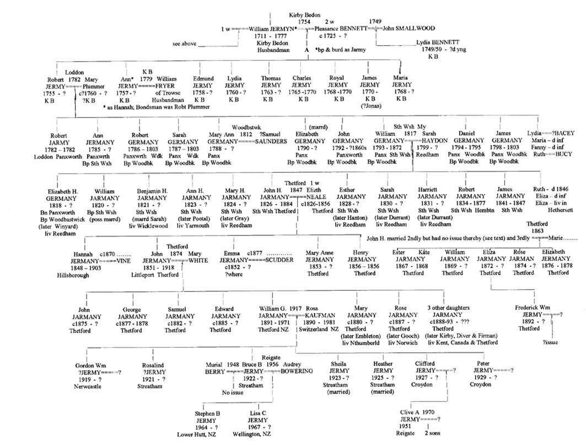
The family continued in Panxworth and area some years. The daughter Elizabeth Jermany married in next door Woodbastwick on 21 Oct 1811 to Robert Wright and a Mary Germany did so there on 12 Oct 1812 - to Samuel Saunders. (Was she baptised Mary Anne or was she a Mary of the former Salhouse family?) In any case, Mary would lived into her 80s, still in this area. On 14 Apr 1817, Robert's third son William Germany (born 1793) married Sarah Haydon (as Hayton) at South Walsham St Mary (both shown as single and of that parish; he was in fact still of Panxworth and she of Reedham, I believe, where she was born ca 1799 to a Benjamin Haydon). Thus, their first born - Elizabeth Heydon Germany - was born in Panxworth in 1818 and baptised on 10 June that year in Woodbastwick, her parents abode still given as Panxworth, with William 'a labourer'. (Why wasn't she called Sarah, or Mary, one wonders?)
However, the next 12 children of this couple were both baptised and born in South Walsham to where William and Sarah presumably moved. We thus find (eventually) a certain confounding of the western and eastern 'divisions' of the Broadland Jermyns, etc in South Walsham, from this time onwards. I haven't as yet a date or place for Robert's burial (nor for his wife)- possibly ca 1825-30? Did William leave Panxworth about this same time? (Another surviving son John Jarmany (born 1792) seems to have remained in Panxworth, being listed there as such in the 1861 Census - as unmarried, aged 69, born Panxworth, living with his widowed sister Ruth (formerly Bucy, I believe; cf Lydia who married a Bacey/Basey).
[* Note: An earlier search (by others) for the origin of Robert somehow assumed his year of birth to be ca 1754. Normally, one would assume that a man was born about 23 years or so before he married (for the first time). But as Robert married in 1783, this 'rule of thumb' would make him nearer 29 that year. (This was close; he was in fact 28.) Those seeking evidence of his birth would however not normally be expected to subtract 29 (or even 28) from 1783, to arrive at an estimate of his birth year. Rather, they must have already known his age at his burial and so calculated it from that date. If he died in 1820, say (and they knew this), and was shown to then be 66, his birth in ca 1754, as suggested, would be thus reasonably concluded. (In fact, he was born in 1755 so this conclusion was quite close.) It thus seems to indicate that his date of death/burial was indeed once known.
In the meantime, we may list the rest of William and Sarah's large family as baptised in South Walsham (all as Jarmany, with the second name, shown here as Haydon, actually spelt in a variety of ways): William (17 Feb 1820), Benjamin Haydon (21 Aug 1821), Ann Haydon (31 Jan 1823), Mary Haydon (14 Nov 1824), John Haydon (21 Aug 1826), Ester (13 Apr 1828), Sarah (17 Feb 1830), Harriett (1 Oct 1831), Robert (14 Feb 1834), Ruth (22 Nov 1835; buried 30 Dec 1846), Eliza(1) (7 May 1837; buried 1 July 1838), Eliza(2) (6 May 1839) and James (28 Mar 1841; buried 13 Jan 1847). Thus, the mother Sarah was mostly pregnant for even longer than her mother-in-law Mary (viz: from 1817 to 1841). The 1841 Census for South Walsham St Mary shows the family as Jarmany with the father William, aged 45+, an agricultural labourer, plus wife Sarah and their 10 children. They're still there in 1851 but now as Jermy, with William aged 57, born Panxworth, and wife Sarah, 51, born Reedham, plus Harriett (20), Robert (17), Eliza (11) and a grandson James (1) all born Sth Walsham. William himself would live over two more Censuses, not dying until 1872. The older sons, as William and Benjamin, had by this time mostly set up on there own elsewhere, one assumes.
The futures for those first two sons of William - William and Benjamin - and their several sisters can be placed here if and when the relevant notes are (re-)discovered: Thus, the son William (born 1820 in South Walsham) may have married (ca ?1841) a Christianna (born 1822 in Norwich St James) in South Walsham and with her have 3 sons (William, John and Benjamin) and 3 daughters (Mary Ann, Eliza(beth) Hannah and Helena/Elleny) baptised in South Walsham (as Jermany) - where they resided in 1851 (Sth Wsh St Lawrence). I believe this William eventually became a 'Farm Bailiff' in South Walsham as per the 1861 Census and was possibly later (1881) an Innkeeper - of The Maid's Head in Old Catton, nr Norwich. [However, another William Jarmany/Jermy born about the same time, also in South Walsham seemingly, but to Robert and Hannah, could be an equally likely husband of Christiana and the later Inn Keeper. This to be determined. A similar confusion attends the marriage and issue of Robert and Hannah's apparent son John (born 1818) to a Charlotte ?Miles.]
The son Benjamin (born 1823?) married Sarah.......(born ca 1828 in Weeting, Norfolk (near Brandon)) in about 1848 when, like his younger brother John (see below), he was a labourer on the fast expanding railways - probably in the Thetford/Brandon/Weeting area. [In the 1851 Census he was shown as a Lodger in Brandon, still unmarried (this probably an error) and employed as a Railway labourer. They too would have 3 sons and 3 daughters: the eldest was Martha born in Weeting in 1849 and then Sarah there also - in 1851. They then moved to Wicklewood ca 1854 where ?twins William and Mary Ann were apparently born in 1855 (or was one a delayed baptism?), followed by Benjamin and John there as well - in 1857 and 1860. The family would remain at Wicklewood for some years (see also later Censuses). Meanwhile, 5 of William, Benjamin and John's sisters had settled 'back' in Reedham (their mother Sarah's home) - viz: Elizabeth (later Winyard), Mary (later Grey), Sarah (later Durrant), Harriett (also later Durrant) and Esther (later Hanton). Eldest daughter Ann (later Pootal) settled in Gt Yarmouth while youngest daughter Eliza died in Hethersett, a single woman, possibly 'in service' there.
-- -- -- -- -- --
Some of the detail for the third son - born John Haydon Jarmeny in South Walsham (1826) is better known, for it was this line which led to Bruce Jermy of New Zealand, for whom some of the foregoing was originally produced. Thus, John 'Jarmany', bachelor, a labourer, married Elizabeth Neale, single woman, by banns - on 23 May 1847 at Thetford St Mary. Both then resided as lodgers in Thetford. John signed with his mark and gave his father (William)'s occupation as a Butcher (which appears wrong; he was otherwise consistently shown as an agricultural labourer). Elizabeth's father was a John Neale, I believe, an agricultural labourer who resided in Weeting, near Brandon (as per the 1851 Census) where John (like his brother) likely met his wife while working on the railway being built through Weeting at the time. He was himself then, as were many, a labourer on these new railways and, like his older brother Benjamin, may have started in this heavy, back-breaking, dangerous work (as a 'navvy') in or near Reedham ca 1844, when the line from Yarmouth to Norwich was being built in that area. They likely then followed the work towards Norwich and Thetford - thereby finally breaking their own and their ancestors lengthy ties with agricultural labour in Broadlands (well, for a time; see below).
John and Elizabeth appear to have had 5 children: Hannah (later Vine) born 1848 (died 1903), first son John whose birth was registered in the June quarter 1851 at Ely, as John Jermany; he was actually born at Littleport, Cambridgeshire on 8 Mar 1851. John Snr was presumably employed in that area when the line was being extended to Brandon and Peterborough via Ely. The navvies, often with their wives and families in tow, sometimes lived in temporary tented camps. They also had daughters Emma Jermany (later Scudder) about 1852 (?where), Mary Anne Jermany baptised back at St Mary Thetford on 25 Dec 1853, and a second son Henry Jermany there on 11 May 1856 - before John's wife Elizabeth died in Aug 1856 (buried Thetford); The son Henry also soon died and was buried there as well - in November that year - both as Jarmany. The relevant pedigree (needing some attention) is shown again here for convenience:
John married secondly (again in Thetford, after banns) on 4 May 1862 - as John Jarmany, widower of Star Lane, Thetford - to Ann Rayner, a spinster of Thetford, aged 20, with whom he had no issue before she too died young, being buried in Thetford just a year later, on 27 May 1863, as Ann Germany. He married thirdly Maria Shaw in Thetford in Dec Q 1865 by whom he had 6 children - all baptised in Thetford: Ester and Kate Jarmany, baptised together on 21 Apr 1867, William and Eliza Jarmany, also baptised together - 23 June 1872, Rose Jarman(y), born 9 Feb 1874 and baptised 8 Mar that year (she later Gooch) and lastly Elizabeth Jermany on 20 Aug 1876.
[We may note here that John Jermany's name appears in the 'Free BMD's website indexes for the national register of marriages for Dec Q 1865 (for Thetford) along with an entry for a Mary Anne Beeton and a Samuel Beddous - all 3 names listed as occurring on the same page (1151) of the original register in Thetford. But such marriage entry indexes for a given quarter at a particular Registry should always show an even numbers of named entries. One female name in this case was obviously lacking. Mary Anne Beeton may well have married John Jermany but, equally, it could have been Samuel Beddous. Once the name 'Maria Shaw' became known - as John's apparent bride, her marriage could also be checked on the BMD site (under her name alone). This showed that she too had indeed married in Dec Q 1865 in Thetford - and with the marriage having been appropriately registered on page 1151. But, when this page number is 'clicked' to show the names of the others who married there in that quarter (and hence reveal her future partner's name or, sometimes, possible name), that information does not appear. This was of course because, due to some indexing error, Maria's name does not appear there - with those of her three indexed cohorts - one of which was that of John Jermany, her actual husband to be - as it turned out.]
The first daughter of John and Maria - Esther, was buried on 30 June 1868, shown (a little surprisingly) as aged 4 that June, while her sister Kate died on 7 July that same summer, aged just 16 months. Esther thus appeared to have been born in mid-1864 (although there is no record of a Germany/Jermany/etc birth registation for that christian name, at that time) while the birth of Kate, as Katey, was registered - in March Q 1867; so they weren't twins as may have appeared. However, Esther's birth was later located, it having indeed been registered in Thetford - in Dec Q 1864 - as 'Esther Jermin Shaw' - presumably by Maria Shaw herself - a year before she and John married; he may have been away some while working on 'the line' or on some distant farm. Esther's given middle name effectively established her paternity - a tactic not that uncommon at the time. Ironically, this middle name given by Maria to her first child was the correct surname of John's family (at least phonetically) from the time of their origins in Hempnall - for centuries. The younger son William Jermany was born 19 Feb 1870 and Eliza (later Flack) in May 1872, so they too were also not twins. John's last child Elizabeth was buried aged about 2 on 30 April 1878 - oddly as 'Jermy'.
John himself soon died, on 12 Oct 1884, and was buried in Thetford on 16 Oct that year. He had clearly made this his 'home town' and was presumably employed latterly on something other than the railways. [Yes, in the 1861 Census at least, as John Jermany, widower, lodging in the home of an agricultural labourer on Star Lane, Thetford, he is shown as (again) an agricultural worker himself - possibly working on land owned by the agri-chemical company Fisons. His daughter Hannah, then 12 and still at school, was shown as born in Hilborough, Norfolk (near railway construction?), as was his son John Jermany, then 10 at Littleport. [The 1871 and 1881 Censuses should show his occupation in those later years of his life. [Yes, the 1881 Census at least shows him as still residing on Star Lane, aged 54, a Sawyer, born South Walsham, with wife Maria, 47, born Croxton, Norfolk and children William, 11, Eliza, 9 and Rosa, 7, all born Thetford. The later Censuses should show his children's locations and occupations as of 1891 and 1901, similarly.]
At both John Snr's burial and at that of his daughter Elizabeth, the surname was suddenly shown as 'Jermy' which seems odd considering the marked consistency of the name Jermany/Jarmany for so many decades previously (and its continuation with his son John (see below). Had the Stanfield Hall events, we may enquire, received any publicity around that time? John's age at death was shown as 54 but he was actually 58 earlier that year, I believe. Finally, Eliza (born 1872 to John Snr) had a son Frederick William 'Jermy' out of wedlock and baptised in Thetford on 25 Sept 1892. She later married a Mr. Flack.
At his father John's death in 1884, younger son William (bn 1870), then about 14, would soon start his own working life and, by 1887, joined the Army. He married firstly in Fulham Mar Q 1912 Mary Anne Harper by whom he appears to have had no issue. She died aged 56 on 24 Dec 1925 in Fulham. He married secondly Florence Clutton (bn Ditchingham, Norf 1898) in Fulham June Q 1928 with whom he had sons William and John Germany there in 1928 and 1929, respectively, before dying in neighbouring Chelsea in 1930, age 60. His younger son, John Germany married Rosemary Mee in 1961 from whom several new items of information now added above were gratefully received (Dec 2010) including the surname of John Haydon Jermany's 3rd and last wife Maria Shaw and the names of the wives of that couple's son William.
Nine further children of the surname Jermany, etc were baptised at St Mary Thetford between 1875 and 1888 - born to a John Jarmany (and wife Mary White) whom we may assume was John Haydon Jermany's eldest son John (born 1851), half brother to the William Jermany (bn 1870) discussed above. They married, he as John 'Jermy', on 11 July 1874 in Thetford. Mary was then of Barnham, south of Thetford. This younger John's issue were however later baptised consistently as Jarmany, although a son George who was buried in 1878, when the name was again shown as 'Jermy', as was John's himself when buried in Thetford Cemetery - on 31 Aug 1918, aged 67.
This effective name change around the late 19th century, if spasmodic, would cause some of the family's descendents much confusion and false hopes when a later member (probably unaware initially of the family name having in fact been Jarmany or similar for over two centuries) decided that they may be one of those with some claim on the Stanfield estate formerly held by one William Jermy (and later by the Preston family who later changed their name to Jermy in order that their tenuous hold on that estate should be more secure). Later, there were several events for John's grandchildren registered in south London (eg near Croydon) before someone of that family eventually migrated to New Zealand - now carrying the name 'Jermy' rather than Jermany or Jarmany. It seems possible that others remained in or near Thetford as well. The relevant details will be placed below once located. ie:
Thus, we find that of John and Mary's 9 children, 3 of the sons (John, Samuel and Edward) seem to have remained in Thetford for a time, while 4 of the daughters - Mary - known as Polly (later Embleton), ...?... (later Kirby), Rose (later Gooch) and ...?... (later Diver), left that area after marrying - for Northumberland, Kent, Norwich and Canada, respectively. One daughter ... .?...(later Firman) also stayed in Thetford while youngest son William Gordon Jermy, born Thetford 3 Sept 1891, may have been the right age to join up in the first World War but, in any case, somehow returned to near his family's roots (in Norfolk at least) - to marry in Smallburgh, Norfolk on 12 Dec 1917 - to a Miss Rosa Kaufman from Grundelwald, Switzerland (born 4 Dec 1890, one of 8 children).
This William's mobile lifestyle continued when first they moved north to Newcastle to have their first son Gordon William ?Jermy, born 23 Sept 1919, and then to the other end of the country - to south London where, in Streatham, eldest daughter Rosalind was apparently born 18 months later - on 10 Mar 1921. They remained there a few years (to 1926) where they had second son Bruce Bernard Jermy on 11 July 1922, before daughters Shiela and Heather, in 1923 and 1925. They then moved a few miles further south - to Croydon where sons Clifford (1927) and Peter (1929) were born. William married in Solihull but had no known issue.
Bruce Jermy married firstly Muriel Berry in 1948 (no issue) and secondly Audrey Bowering (born 1934) at Reigate, Surrey on 30 Mar 1956 with whom (after emigrating) he had a son Stephen Bruce Jermy on 23 Dec 1964 in Lower Hutt, New Zealand and daughter Lisa Claire Jermy on 26 Sept 1967, in Wellington, New Zealand - to where they and other members of the family had emigrated around 1960. Heather and Clifford both married in Horley, near Reigate, and they too emigrated to New Zealand. Clifford's son Clive Andre Jermy was born in Horley, Surrey on 27 May 1951 but married in New Zealand in 1970 where he became a successful Deer farmer and has two sons there, born in Auckland. Clifford's younger brother Peter married, seemingly in the UK, but had no family. The parents of this family of emigrants to New Zealand, William Gordon and Rosa Jermy, either emigrated with them (ca ?1960), or joined them later, for they both died there - in 1971 and 1981, respectively. More on this family appears in an Addendum below - after Part V.
But first, Part IV considers next the similar expansion of related Jermyns, Jermanys, Germanys etc in South Walsham (some later again to adopt the surname Jermy).
Part IV. The Early Jermyns and Jermys of South Walsham and Area. .
As great as was the explosion of the Jermyn/Jermany/Germany/Jermy family in Salhouse and Wroxham (and nearby) ca 1770s to 1880 and beyond, it was certainly matched by a similar explosion of these same basic names in South Walsham and nearby parishes, over a slightly later period. Not long after brothers John and Benjamin Jermany had settled in Salhouse (and Robert a bit later in neighbouring Panxworth) and began having their large families there, a James Jarmy/Germany of Burlingham (to the south) married Elizabeth Mitchel in nearby Strumpshaw - on 19 Feb 1776, both single. They settled for a time in Burlingham where they had a son James Jarmy Jnr baptised on 22 Oct 1780 but then moved a bit north to South Walsham where, on 21 Jan 1790, they had a daughter Elizabeth Jarmany baptised. Prior to that, there had been no previous family of the name Jermy/Jarmy/Jermyn/Jermany/ Germany/etc active in South Walsham.
However, no further issue is apparent for this first couple there (of our names of interest). But their son, the younger James, who married in 1804, did remain there and have a large family whose many descendents continued in South Walsham and area some generations. And from about the same time, a Robert Germany and wife Frances (nee Sharman) had also settled there - from whom others of a very similar set of surnames continued locally for some time as well.
Thus, not long after Elizabeth was born (1790) to James and Elizabeth in South Walsham, Frances Sharman gave birth in about 1792 to a daughter, out of wedlock, apparently named 'Frances Germany Sharman'. About 2 years later, she bore another - Robert (Germany) Sharman ca 1794 - although where either was born seems uncertain (quite possibly in South Walsham). She and the putative father - Robert Germany - later married some miles south in Reedham in 1796 (when he signed his name as such) but they soon settled, as had James and Elizabeth, in South Walsham - these being the first two couples with our relevant surnames to settle there, just as John and Benjamin and wives had settled a bit earlier in Salhouse.
Once ?back in South Walsham, Robert and Frances had their son Robert (Sharman) baptised - but as Germany - in 1797. [We may note here however that the South Walsham (St Mary) register apparently shows that (1) a Robert Jermany and wife Mary had a daughter Ann baptised there on 9 Jan 1764(!) and (2) that a couple of these exact names have a daughter, again named Ann, baptised on this very same date - but in 1785(?). There appears to be no later burials or marriages for either Ann, nor for their parents. Some confirmation of this unexpected data seems warranted.
Why Robert Germany and Frances chose Reedham in which eventually to marry, where they were shown to then be (?temporarily) resident, is also unknown. I have read somewhere that it was formerly an 'inland port' and, if so, is it possible that Robert had been employed on relevant boats that came there and on one occasion met Frances thereabouts, but was required to 'sail off' again, only to return later (and 'do his duty')? If so, he may have originated on the coast and not necessarily in Norfolk even. Where else were those named 'Germany' then settled - especially where some literacy was not unknown? (There were some of this name or similar just across the river Yare at such as Raveningham and Heckington (discussed further below) but no fitting Robert born ca 1760s/70s seems apparent there or nearby. [A Robert Jermyn was buried in Reedham in 1840 whose abode was given as Gt Yarmouth; but he was shown as aged '13'. One should check to be sure it wasn't '73', which would give a birth year of 1767 - quite suitable for the above Robert.]
A witness at the marriage of Robert and Frances in Reedham was a Robert Ward. Was he related to the John Ward who married Sarah Jermy in Stokesby (just east of Acle) at about this same time - in 1797? At their 1796 marriage, Frances's name was spelt Francis, I believe, and a later find - of a Francis Sharman born to James and Ann Sharman in 1764 in Toft Monks - was thought of possible significance in the search for where Robert too may have originated. But the latter Francis was (as is more normal for that spelling) a son, not a daughter. There were several other Sharman events around this period south of the river - in Surlingham, Langley and Rockland St Mary, but no Frances was located. But it seems that in 1851 Frances reported to the Census enumerator in Blofield that she was in fact born in South Walsham ca 1772; this has yet to be confirmed, I believe.] We may recall that Robert signed his name - as 'Germany'. The general variability in the spelling of the name Jermyn by incumbents (as Jarmyn, Jermin, Jerminy, Jarmine, Jarmany, Jarmy, Jermy, etc) wouldn't normally account for Robert's spelling - when it was his own signature - unless he was so taught by someone literate (as an earlier Cleric say) who had, himself, to rely on Robert's father for an approximate pronunciation, in some other area? At least James' name was also sometime recorded as Germany or Jermany, as I recall.
Robert and Frances's eldest son Robert Jnr (born ca 1794/5 seemingly) was, as mentioned, eventually baptised, after their parents' marriage - on 19 May 1797 - in South Walsham St Mary. Their next child, also a son - was baptised Samuel Jermany in that same church - on 10 Mar 1799, followed on 12 Feb 1804 by a daughter Ester Jarmeny in South Walsham St Lawrence. Were these latter forenames significant, recalling that Frances had already named her first two after herself and Robert? Where else do these latter two relatively uncommon forenames occur and who were they likely commemorating? (There was a Samuel settled earlier in Upton and another in Southwood - with connections south of the river Yare, as well as an Esther Jermy who married across that river in Langley in 1795. (These aspects are discussed more fully below. Was Esther the name of Robert's sister - named after the same mother? But the name Esther/Hester also appears in Daniel's Lt Plumstead family, and I've noted it on other occasions as well. Who was her father - born ca 1765-70, say?). By 1805, Frances would likely be about 32 and thus should have been able to have more children, but no others born to her and Robert are apparent locally. Possibly Robert died, or left about then, for Frances appears much later, aged 65, without husband Robert - living (as an 'Independent') with the family of her son Robert Jnr - still in South Walsham (St Lawrence) - as per the 1841 Census, all now as Jarmy.
There is no burial registered for Robert Snr in South Walsham in those earlier years apparently, nor in Blofield Reg District (which included South Walsham), as there would be for Frances. She resided in the Blofield Workhouse by 1851, shown as aged 79 and as born (ca 1772) in 'South Walsham St Mary' (apparently answering our earlier uncertainty). This certainly needs confirmation. Their sons Robert and Samuel did remain in South Walsam for some time however and, like that of the younger James Jermany, their lines continued expanding there and nearby some years into the future. These will be delineated further below and in the associated pedigrees. And just as some of Lt Plumstead Daniel's lines became connected with more easterly parishes such as Reedham (or nearby as Limpenhoe, Cantley and Acle) in or near which area Robert had also been associated, so some of our third Broadland group, settled initially in Salhouse and Woodbastwick also extended nearer and into such as South Walsham, Reedham and Strumpshaw. These 'overlaps' will hopefully not allow any confusion however regarding the apparent distinctness of the three groups - both originally and later.
-- -- -- -- -- --
Returning to the line descended from James Jarmy/Germany in South Walsham (the first generation of his subsequent line there), we find that his son James Jnr (baptised as ?Jarmy on 22 Oct 1780 and thus representing the second generation in South Walsham), was married, as James Germany, some distance north - in Hickling - on 24 Apr 1804 to Ann Baker (born ca 1777 to Thomas and Elizabeth Baker, possibly in Hickling). James' only sibling Elizabeth had died aged 13 just the year before, being buried in South Walsham on 4 Feb 1803. James was shown as a Carpenter at some point - implying an apprenticeship, probably around 1795-1800. (One wonders what trade, if any, his father may have pursued.) The first son of James Jnr and Ann - James Jarmeny(3), of generation 3 on our present scheme, was baptised in South Walsham St Lawrence on 19 Jan 1806 and would become a Shoemaker - implying another apprenticeship. He married Mary Blake in South Walsham in 1828 where they had several children (of generation 4) including: a William Walter (1829), who died young in 1833, an Elijah (or Eliza?) (1830), Charles (1833), Emily (1837) and Mary Ann (1840) - all baptised in South Walsham St Mary - as Jarmeny. (Why no first son James?) This family then moved to Gt Yarmouth around 1841 where they appear to have had no further issue. By 1851, their son Charles had become an Engineering apprentice there, when the family lived on George St. They remained in Yarmouth into the 1860s, although James the father was buried back at South Walsham on 15 April 1870, aged 60.
The birth of the latter James(3) in 1806 had thus continued the births of Jermanys/Jarmanys, etc in South Walsham after the last one born there to Robert and Frances in 1804 (ie Esther Jarmany). [The issue of William Jarmany and Sarah (nee Haydon) would later also add to this population, after their move from Panxworth (of the Lt Plumstead families) to South Walsham ca 1818. Their son William Jerrmany may have been the one who later married a Christianna and had issue in Sth Walsham, later settling north of Norwich as a Publican?]
Several more children were also born there to James(2) and Ann including daughters Ann (1808) and Charlotte (1809; died 1811) and second and third sons Charles (1813) and John Baker Jermany (1817). They were thus born around the time their grandparents had died - James Snr being buried 22 Nov 1807, aged 62 (and so supporting his birth as 1745 in Langley), and Elizabeth on 9 June 1818, aged 67; both being buried in South Walsham St Mary - as Jarmany. [These burial details, apparently from the South Walsham register, from a present day descendent, John M Jermy, with thanks.] James(2)'s second son Charles (born 1813) married Mary Ann Greensides in South Walsham in 1837 and had one son by her - Charles Walter Jarmany that same year - before she died in 1840. The 1841 Census shows Charles then living back with his mother Ann and younger brother John (Baker), as well as with his young son Charles Walter, then 3, in South Walsham St Lawrence, all as Jarmany. We might wonder at both Charles and his elder brother James giving the same uncommon second name (Walter) to their first sons.
Charles married secondly, also in Sth Walsham, Elizabeth Westgate on 7 Jan 1855) - with whom he had 6 children in the 1850s and '60s in Sth Walsham: James (born 1853; baptised 1859), William (1856), Robert (1859), Mary Ann (1862), Charlotte (1865) and Frederick (1869), all baptised as Jarmany. Their mother Elizabeth died in 1884 - as did Charles in 1888, aged about 75. [Did this Charles' namesake nephew Charles (born 1833 to James and Mary) not also marry about the same time as did his uncle (for the 2nd time) - ie ca 1853-55 - probably in Gt Yarmouth - and also have issue (there) over the same period? The Census for 1871 and '81 may be checked in this regard. A Charles Frederick Jermy died in Yarmouth in Mar Q 1865; no age shown.] A first draft of the family's pedigree to this point appears below:
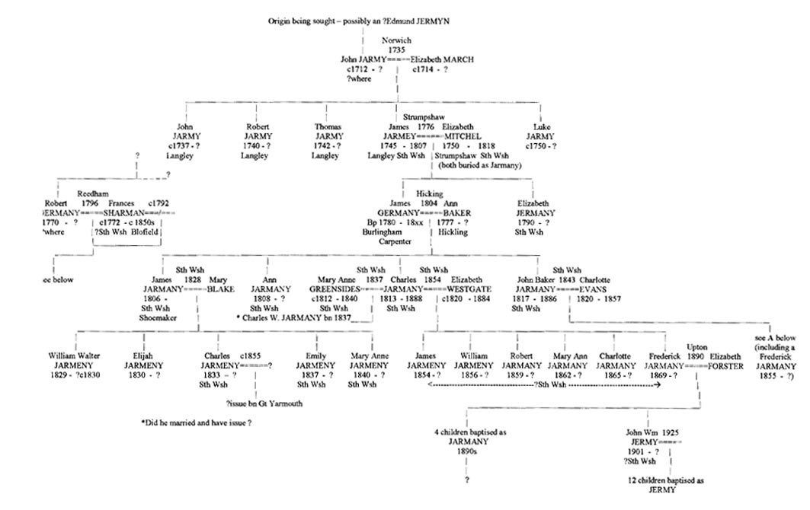
The elder Charles' younger brother John Baker Jarmany married Charlotte Evans (born 1821) in South Walsham St Lawrence on 23 March 1843 and with her had 9 children (6 sons; 2 dying young, and 3 daughters) all baptised as Jermany/Jarmany - before she died aged just 36 in 1857, also in Sth Walsham. The eldest surviving son (after the early death seemingly of a son Edward (bn 1844) was John Miles (1850) followed by Walter (1851), William (1854) and Frederick (1855). The latter Frederick married Charlotte Brown from Panxworth, I believe, on 1 Nov 1877 in South Walsham St Mary, and with her had 4 sons and a daughter. John Baker Jarmany died in about 1886.
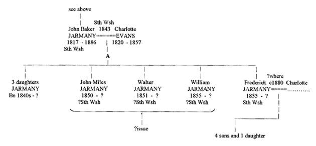
Charles' son Frederick Jarmany (born 1869), younger cousin of the foregoing Frederick, seems to have married Elizabeth Forster in Upton (near Acle) in 1890. They had 5 children, 4 of whom were still christened as Jarmany (in South Walsham possibly) but the youngest son, John William, born in 1901, was apparently christened as 'Jermy'. He in turn married in 1925 in Blofield (R.D.?) and had about a dozen children, including 5 sons - all now baptised as Jermy as well. [It is from this latter family that the above John M. Jermy descends.] Later generations (to the present) from these earlier lines of South Walsham, Acle and Norwich were thus almost all raised as Jermy. [The spelling of the surname continued to vary but would usually settle by this period, almost arbitrarily, on something different from its origins - often as 'Jermy'. The same applied to those descended from Robert and Frances and from the several other 'Jermyn/Germany/Jermany/Jarmany' couples of this general area.] From all of the various sons descended from the first James Jarmany above (born 1745 in Langley) and his only son, also James (born 1780), there were, as shown above, an ever expanding number of possessors of the relevant surnames - in Norfolk and elsewhere.
N.B. For an exemplary and more comprehensive genealogy of the later generations of this family, and to learn the exact dates of many of the earlier events shown above only by year, please consult the excellent website devoted to it and recently posted by:
John M. Jermy.
-- -- -- -- -- --
From Robert and Frances's daughter Frances, and sons Robert and Samuel, we may also set out the earlier generations of a similar expanding family - (taking Robert and Frances as the 2nd generation of their respective lines). Again, the spelling of the surname can, over time, evolve and settle on one or more of several post-Jermyn/Germany/Jermany forms. Firstly, the younger Frances repeated the actions of her mother by having a child (a son) out of wedlock herself - in Hickling. He was baptised there as James Germany Sharman on 15 July 1810, the putative father being named as one John Fisher. This John was himself born out of wedlock in Hickling, to a Sarah Fisher, in 1780 (the 'reputed father' of John again being usefully named - as one 'John Turner'). This could indicate that Frances did not necessarily arrive in Hickling late, say, just to have her baby born or baptised there - away from prying eyes (with some other putative father miles away), but had in fact been there from, say, 1809 or before, when she met a local boy - John Fisher - probably while working as a servant nearby. The choice of the name James for her son (vs John or Robert, for example) is interesting. We may recall that James Germany (born 1780), the son of James and Elizabeth, had for some reason also married in Hickling - in 1804 to Ann Baker (she quite possibly of that town) and then settled (back) in South Walsham, where they subsequently had their family baptised - mostly as Jermany. Why James and Frances were both in Hickling in the early 1800s and both later settled ?back in South Walsham is unknown; the two parishes aren't exactly close to one another. Were their fathers related?
Frances' son James Sharman, later an agricultural worker, appears to have been raised with the surname Germany or Jarmany himself and, with a wife Sarah (born Blofield ca 1812) whom he likely married around 1834), had issue James (ca 1835), Harriett (1839), Benjamin (1843) and Matthew (1847) as well as two other daughters - all baptised in South Walsham St Lawrence - as Germany or Jarmany, etc (ie not Sharman). [Note: I had earlier thought that a Frances Germany Sharman had also been baptised in Hickling - on 1 July 1810 (the date of James' birth) - being uncertain whether this was James' mother Frances (if she had never herself been baptised as an infant, say, and wanted this done before bearing James) or a twin sister of James, baptised the earlier if she was sickly, say. However, there appears to be no later events involving a girl of that name in the area (ie born in 1810), nor any concerning Frances herself (born ca 1792), and I now believe that only that latter Frances Germany Sharman was in Hickling that year - who had just the one child, James, raised as Germany/Jarmany, etc. The local register appears to confirm this.] James' sons in turn then had about 6 children in total born in South Walsham with similar names ca 1830s to '50s - to be shown later. [It is interesting to note that all direct male descendents of this line carried (or carry) the male DNA of John Turner (and his male forebears), and not therefore that of any earlier male Germanys/Jermanys/Jermys, etc).]
The 1851 and 1861 Censuses show that James Jarmany and wife Sarah remained in South Walsham with their younger children. The eldest son James, who became a Tailor and settled in Norwich, married an Emma in 1855 with whom he appears to have had a son Benjamin in 1856, and possibly others before she died ca 1861, when he married 2ndly a Sarah with whom he had two further sons and four daughters in Norwich in the 1860s/70s. The eldest son was Arthur, also a Tailor, born in 1862 and his younger brother Henry, born 1865. Arthur married Caroline Gurney in 1882 and had a large family one descendent of which was John McDade from whom this latter information was gratefully received.
As mentioned, Robert, the elder son of Robert and Frances, married a Hannah ........ ca ?1820 (she born Norwich ca 1792) and apparently had issue ca 1820s-30s of whom only Esther, baptised in South Walsham St Lawrence in 1834, seems certain. Others (?Thomas, ?Elizabeth and even a ?William) may have been born to them in the the period 1820-32 but details are presently lacking. Robert was an agricultural labourer and, by 1841, his seemingly widowed mother Frances lived with him and his family - possibly having done so since her husband Robert (Snr) either died or left by ca 1810, say. By 1851, however, she was in the Workhouse in Blofield, aged 79, shown as a widow and 'pauper servant', born in South Walsham St Mary - ie about 1772. She died at Blofield in December that same year and may have been buried locally, possibly in Lingwood. [Note: another Robert ?Germany, also with a wife Hannah, of similar age to the younger South Walsham Robert, was noted in later Censuses in nearby Ranworth where he was shown as 'afflicted'; however, this was the couple born in Salhouse or Rackheath (1799) and Beeston St Andrews (1796), respectively.]
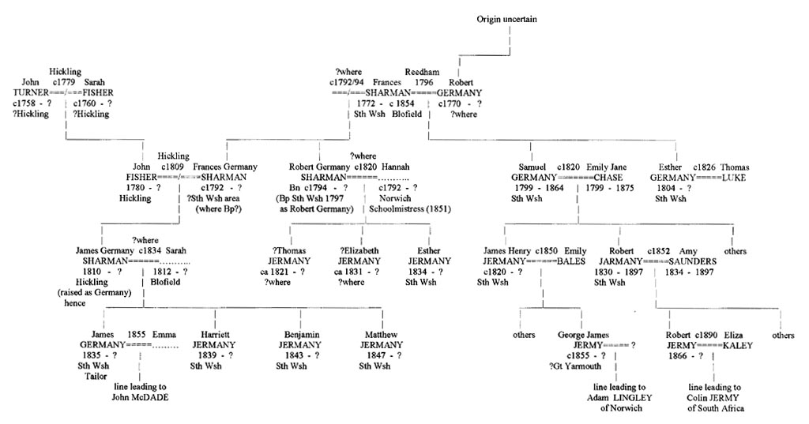
Robert Snr and wife Frances's next son, Samuel (born 1799), also an agricultural labourer, married Emily Jane Chase (born ?Neatishead in 1799) on 24 Jan 1820 in South Walsham and with her (often shown as 'Jane') also had a large family there, including sons James Henry (1820), Samuel (1823), Thomas (1825), William (1826), and Robert (1830) (who married Amy Saunders about 1852 and had 5 sons himself, including another Robert (b 1866), from whom descends Colin Jermy (of generation 7) whose excellent website ( click on: Colin Jermy's Site) now lists just about every person of the name Jermy/Jarmy/Jermyn/Jarmin/Jermany/Germany/etc (and their many sources) known to man). The Robert born 1830 had worked as a Farm Servant' in Mautby as per the 1851 Census when still single. Samuel also had younger sons Jeremiah (1833), George (1835), John (1837) and Henry (1841) - also to be detailed further below. Thus Samuel's various sons produced about 20 children between them, so matching his elder brother Robert. Their younger sister, Esther, also married in South Walsham - on 25 Dec 1823 - to a Thomas Luke. Her sister-in-law Emily Jane was a witness.
[It seems quite likely, from data originating from Stawart Valdar and recently reported to me by Colin Jermy (to whom it was sent), that Robert and Frances had a third son - Jeremiah - born on 18 July 1803 and baptised as Jeremiah Jarmany on 24 July 1803 at St Swithins in Norwich, the son of Robert and Frances (she nee 'Shereman'). It is possible that the birth was in Norwich itself (the period between that and the baptism being relatively short) because Robert had either volunteered or been conscripted into the Army or the Militia about then, due to the Napoleonic Wars, and was possibly then stationed in Norwich barracks - where wives and families were allowed to live close by. Otherwise, it is possible that they had moved to Norwich to find work and if Robert died there, Frances and children would likely return eventually to South Walsham - to stay initially with her son Robert. Jeremiah was not a common name amongst Jermys/Jermanys and this one, if he lived, may have become the Jeremiah Jermy noted as marrying in Norwich about a generation later (details to appear here once re-discovered). The Jeremiah born 1n 1833 to Samuel may thus have been a namesake of this earlier born one.]
The eldest of Samuel's sons - James Henry Jarmey - married in Gt Yarmouth on 15 June 1848 to an Emily Bales (he then living in Lowestoft) and had, amongst others, a son George James Jermy in the 1850s who became a Groundsman in Yarmouth. The latter man married an Emma around 1880 and had a son James Jermy ca 1885 - who married Patience Mollett in 1909. These were the great-grandparents of an Adam Lingley of Norwich who had thought his Gt Yarmouth line may have descended instead from the James Jermy, Shoemaker, born in 1806 in South Walsham (see above), who had apparently also 'migrated' to Yarmouth about this same time (1840s). This coincidence tripped me up as well - for a time.
-- -- -- -- -- --
Thus, from Robert Germany and the younger (2nd) James Germany/Jarmeny there descended about 60 or more Germanys/Jarmanys/Jermys/etc in South Walsham by the 4th generations - in the 1850s/60s (and still expanding over generations 5 to 8 - often now as 'Jermy'). In time, there was some inevitably 'moving on' - to such as Norwich, Gt Yarmouth and beyond. This contrasts with the apparent first birth there - of James Snr's daughter Elizabeth 'Jarmy' - in 1790. We are not yet aware of any direct relationship between the elder James and Robert Germanys but this parallel 'explosion' of their two lines, in this one village, is certainly suggestive. Was there a common root - as in Langley...or...? If so, one would expect some concordance of the male DNA in later male descendents of their two lines (given no earlier births of sons given their unmarried mother's Jerm(an)y surnames along the way). There were also, of course, many other Jermanys/Jarmanys, etc descended from the William and Sarah Jarmany of Panxworth (of the 'western' division of these names) who had shifted the few miles east to South Walsham around 1818-20. They were replaced in Woodbastwick in a sense (whose church William and his Panxworth parents used) when one of the Salhouse family of these same basic surnames shifted similarly to Woodbastwick around 1782 (see Part III).
On the Origins of the South Walsham Germanys/Jermanys/Jermys.
While attempting to discover the origins of both the James Jarmey of Burlingham who married in Strumpshaw in 1776 (his son later shown on one or two occasions as Germany, I believe) and the Robert Germany who married in Reedham about a generation later - in 1796, one had necessarily taken notice of a number of earlier Jermy(n) events registered in this more south-easterly part of Broadland - eg at such as Upton, Southwood and Beighton, and across the river in such as Haddiscoe, Langley, Rockland and Surlingham. Firstly, we may note that prior to about 1700, there were (I believe) no such events registered locally (ie north of the river) for these surnames. As with Daniel's line, we may thus proceed on the basis that, initially, this was essentially a 'Jermyn/Germany/Jermy-free' zone (if we ignore the Richard Jermy(n) who married very early in Burlingham (in 1618) but settled immediately in Hoveton). So, where did the first one(s) to actually settle here 'permanently' in the 18th century come from?
Again, we must look south of the Yare. From Mundham (south of Loddon) across to Hempnall, there were, unfortunately, a plethora of Jermyn/Jermy/Jermany, etc events recorded from the mid-1500s to the 20th century in a great variety of parishes - both east and west, north and south - in this heavily farmed, agriculturally favoured area of south-east Norfolk. A parish map of the area shows that many small parishes there are squeezed together, each with its church, to accommodate the ever increasing population from the middle ages on which this fertile land supported. (Parishes are generally larger and fewer and populations and churches sparser in less fertile areas.) There were also many parishes nearer the river whose cow-grazing marshes also provided much employment. The same families often used several nearby churches in which to marry, have their issue baptised and be buried. Many were agricultural labourers who worked over a considerable area for Yeoman farmers depending on the season. When this is combined with the repeated use of certain fornames - such as John, Robert, Ralph, James, Samuel, Roger, William and Thomas - confidently teasing out family lines becomes most difficult.
However, we may at least try to make some sense out of the early settlers who crossed the Yare near this more easterly district - looking for a better life presumably. For convenience, we can show here the same map as before:
Some years before Daniel left his south Norfolk origins near Hempnall, in the 1730s, to settle north of the Yare in Lt Plumstead, a Samuel and a Robert Jermy(n), probably brothers or cousins, had by 1715 already become established further east - in the small parishes of Southwood and Beighton, respectively - which are located near one another, just north of Reedham. Their origins are however less certain and, as mentioned, no members of that family appear to have settled in this area previously. They likely derived from some family who had drifted eastward from Hempnall towards Loddon some generations earlier. With his wife Mary, whom he did not marry there, Samuel had three sons baptised in Southwood: Samuel Jnr on 15 Nov 1715, and twins Roger and William on 15 Dec 1717. They were followed by two daughters - Anne on 25 Dec 1718 and Elizabeth on 19 Dec 1720. Interestingly, all their baptisms were in the name of Jermy, as was the burial entry for the elder Samuel himself - when buried just a few months later - on 2 May 1721 - also in Southwood. His widow Mary (as Jermy also) soon re-married - to a John Roper - in nearby Burlingham St Peter on 5 Aug 1722, with both shown to then be 'of Southwood'. (The same Vicar may have held both parishes then and it would be his decision to spell the name as 'Jermy' - possibly because this is how they pronounced it or he knew it.) Meanwhile, a Robert Jermy had a namesake son Robert also baptised in Nov 1715 - at nearby Beighton church - just 3 days before Samuel would have his first son baptised - in Southwood. But we have no other information about these latter two Roberts - father or son - nor of any other issue either may have later had. If he survived, the younger Robert would have married around 1740, say - a date which could prove relevant later.
The only other early event noted in the area was the burial in Upton (near South Walsham) of another Samuel Jermy - in 1722 (as Jarmy) - and the re-marriage of his widow Susanna there in 1724 to a John Riches. This Samuel was possibly born about 1680, say, and married ca 1705; was he an older cousin of the Southwood Samuel - or even a similarly-aged one, born and married a bit later than those suggested dates? There was also a John Jermy and wife Deborah having issue in Reedham a generation later - from 1737 - namely Susanna in Jan 1737/8 and Deborah in Mar 1740/1. But the mother and daughter Deborah both soon died - in early 1741. It is not known if this John Jermy (born ca ?1700 to whom?) re-married or to where he may have then moved (if he did), as there appears to be a gap in the Reedham registers until 1758. Although he named a daughter Susanna, he was unlikely to be a son of the Samuel who died in Upton in 1722 (with a wife Susanna) as the latter man makes no reference in his 1722 Will to any such children. [Note: It was later recalled that this ca 1700-born John had in fact been previously married - to a Lorina ..... who was buried south of the river - in Raveningham on 19 Jan 1727 and that John then re-married there, as a widower, a Deborah Ward, single woman, on 28 Dec 1736.
Clearly, they then moved back across the river to Reedham - to have daughters Susanna, etc from 1737. Was it this same John who had already had sons Samuel and John (eg with Lorina) before Samuel of Upton wrote his Will? Or was he this man's father, so that the John who married twice had a brother Samuel - ie of Upton (or Southwood?)? A Susanna Jermany, possibly this John's daughter, then married ?Robert Rushmere (back?) in Raveningham in 1759. One thus wonders if the John Ward who married Mary Smith in Stokesby in 1769 (and had a son John Ward who married Sarah Jermy there in 1797) was of the same Ward family as the Robert Ward who witnessed the marriage of Robert and Frances in 1796 in Reedham - another riverside parish, and/or as the Deborah Ward who had married John Jermy earlier - in Raveningham. This latter John Jermy was buried in Reedham in 1760.
We may also mention here that a Robert Jermyn was a churchwarden at Heckingham (across the river from Reedham) who married Mary Brady there on Dec 8 1721 and a had a small family, most of whom appear to have have died young however. This Robert also signed his name - but as 'Robert Jermyn' - during the 1720s. It may have been his sister Mary German 'of Hales' who also married in Raveningham in 1721 where the spelling 'Germany' has also been noted. Later, in Hales itself, an Elizabeth Jermy married in 1742. There was also one or two Jermy(n) families in nearby Loddon, Langley, Surlingham and Rockland St Mary which could relate to the foregoing events, or to the earlier findings in Upton and Southwood. Its all rather like a giant jigsaw puzzle, with some pieces missing.
If we assume for the moment that Samuel of Southwood named his first son after himself alone (rather than after his father as well), it could be the case that one of the twins - eg Roger - was named after his own father (and the other possibly after his wife's father). For we find that the relatively uncommon forename Roger does occur just south of the river - at Surlingham - from the 1670s when a Roger Jarmine (born ca ?1645) and wife Mary (nee Ward; who married there in 1670)) have two sons named Roger in 1674 (died infant) and 1680 there (the latter surviving and later having issue in Surlingham himself - in the 1720s, with a wife Anne (Lee)). Roger Snr, who may have been born in Nov 1646 in Saxlingham to an Edmond and Anne as Roger Jermine, appears to have had a brother (or cousin) Ralph Jarmine/Jarmy in Surlingham who, on 8 March 1685 with wife Elizabeth, had a son Samuel Jarmy baptised there. Was he the one to settle later in Upton? And did Roger too have a son Samuel about this same time - somewhere nearby? If the Robert Jermy(n) of Beighton had had a son elsewhere named Roger or Ralph as well, (or if Samuel had named a son Ralph), we could suggest one or other of the Surlingham brothers (and ultimately Hempnall we would assume) as a most likely origin of these more north-easterly Jermy(n)s. It is also unfortunate that of these four contemporary Jermy(n)s born ca 1715-17 - in this area north of the river, we can see no later marriages or issue born to any of them there or nearby. Our only further information regarding any of them is a burial in Southwood for one of the twins, Roger Jermy - on 16 July 1750, when he'd be about 33 and seemingly unmarried. We don't know if his mother and John Roper remained in Burlingham and raised her family there or continued in Southwood, where the latter Roger at least was certainly buried.
Some clarification of the foregoing morass might be expected when we consider the contents of the Wills of the Samuel Jermy (1722) of Upton and those of the two Roger Jermys of Surlingham (1710 and 1729). For they include mutual references, with connections to Southwood and Reedham. But the lack of precision in identifying the relationships with or of legatees leaves us still confused. Thus, Samuel of Upton refers to Hannah, daughter of an Edmond Jermy (of where not stated I believe), to Ann (Yallop), daughter of Roger Jermy of Surlingham (of the 1710 Will), to Mary, the daughter of Samuel Jermy of Southwood and to Samuel and John, sons of John Jermy of Reedham. He does not inform us how he himself relates to these 'children'; possibly they are all nieces and nephews such that he is a childless brother of their Jermy fathers? But the elder Roger Jermy, a Yeoman with some land in both Surlingham and Bergh Apton (getting nearer Hempnall), does not mention a brother, nor a son, named Samuel, but does mention his wife (whom he married, as Mary Ward, I believe, in 1670), his son John (born ca ?1671), his daughter Ann Yallop (born ca 1676) and grandson Roger Jermy (born ca 1692). He does not however identify the father of this Roger.
This latter Roger Jermy appears to have been born in 1692 in Rockland St Mary, probably to the elder Roger's son John (who would be born ca 1665 and may have died after his son, in 1732 in Rockland), and this younger Roger to have married Ann Lee in 1721. In his Will (dated March 1728/29); proved April 1729), he leaves his Surlingham land (as left him by his grandfather Roger) to his wife Ann and their issue, but for want of such issue, then to Ann and her heirs otherwise. This seems to imply he had (to that point) no issue (ie born in the 1720s, say), for he wrote his Will just weeks before he died. He left his Bergh Apton land (similarly inherited) to his brother John Jermy and his aunt Ann Yallop, now a widow (to be sold and the money shared equally). One wonders if Roger also had a brother Samuel who had died before he wrote his Will. [Yes; he was born as was Roger, in Rockland St Mary, in 1697. We have two Samuel Jermys, who died in 1721 and 1722, who would fit this bill. I feel he was more likely to be the one who settled in Upton and died in 1722, leaving a Will. The other Samuel, who settled in Southwood, could thus be the one born in Surlingham in 1685 to Ralph Jermy(n) - a probable brother to the John Jermy who was father of the Roger and Samuel born in Rockland a little later. Hence reference in the Upton Samuel's Will to a daughter of that cousin Samuel of Southwood.
There was an Edmond Jermy, with a namesake son living in Bergh Apton ca 1700, who could be another brother of John and Ralph and thus the reference to his daughter Hannah also. That elder Edmond also had a son John Jermy born ca 1710 who could be the man who married Elizabeth March (1 Aug 1735 in Norwich; they both of Langley, I believe, but this needs confirmation) who, significantly, had sons John, Robert, James and Luke in Langley in the 1730s/40s (but no Edmond?). Awkwardly, there was at least one other Edmond Jermy, with a wife Anne, in Norwich at that time and they too had a son John Jermy - baptised at St Stephen's church on 15 May 1715. Conceivably, he equally could be the one who married Elizabeth March in 1735 in neighbouring St Peter Mancroft - (an Elizabeth March being baptised in that very church on 10 Jan 1705, the daughter of a James March and wife Elizabeth). We may recall that John and Elizabeth later named one son James. [Another couple named Edmond and Anne Jermy resided in Norwich in the early 1700s as described in the section on the Jermys of Happing Hundred. Sadly, I can see no evidence of a son John being born to them ca 1700-15. Again, one would have to account for John and his bride then settling in Langley.] It would seem more likely that they were both born into families in that rural area who simply had one of those 'day out' weddings in the city. A William March who married in Chedgrave (next to Langley) on 1 July 1743, could thus be a brother of Elizabeth.
One should probably seek evidence therefore of earlier Jermy(n)s and Marches in this local area ca 1700-1750. Thus, to this end, we may mention here that one of the Kirby Bedon families (ie John Jermy(n) and Mary Stout) had a son John Jermy (1677) who settled for a time in Ashby (nearer Langley) where his uncle, a Robert Jermey (b ca 1650), had already settled. This John (b 1677) and wife Anne had a son John Germin in Ashby in 1702, and a daughter Lydia Jarmy there in 1707. Did this latter John marry Elizabeth Church in 1735 and, after naming his first son John Jarmey (1737), name the next one Robert (in 1740) - ie in Langley? John's uncle Robert was described in his Will (1716) as Robert Jermy, Yeoman of Ashby; he had married Mary Welton who died young in 1669 without issue. His nephew John in Ashby may well have been as a son to him therefore. [See also some details of the 1703 Will of Thomas Jermyn of Gt Plumstead, a brother of John Snr (b c1648) and this Robert in the 1st Part of the Jermyns of Broadland. These three brothers had a sister Esther/Hester and one of them (John) gave this same name to his eldest daughter. They may have been born to a John or Robert Jermyn and wife Hester therefore (in or near Hempnall) - during the Commonwealth decade of the 1650s.]
Finally, how did the John Jermy of Reedham with sons Samuel and John (born before 1722) fit into all this? As mentioned, either the older or the younger John may have been the one who married Lorina and then Deborah. If it was the older John (born ca 1694), did he have a slightly younger brother Samuel (born 1692) who died in 1722? Did that John (of Reedham)'s son Samuel (born ca 1720) marry and have a son Samuel about 1740 (but where?) who had a son Robert ca 1765, who married in Reedham in 1796 and named his first son Robert and his second one Samuel? I'm afraid there are just too many variables and possibilities inherent in all this incomplete data. But there was clearly some relationship between the Samuel of Upton and the Jermys of Southwood, Reedham, Surlingham (and probably Beighton). We may recall that a Thomas Jermy of Norwich had his Will proved by the PCC in 1815 (Executor R. Watson) in which he leaves money to his brother 'Robert Jermy of Southwood'. Could these be two of the brothers born to John and Elizabeth in Langley? Their Robert was born in 1740, Thomas in 1742 and James (Jarmey) in 1745. Such sons could also prove relevant in our later searches and are considered further below. And, another Samuel Germany (born ca ?1790) was also noted south of the river - as the father of a William baptised in 1816 in Thurlton (near Langley). After whom (again born ca 1740-50s) was this Samuel named - by a father born around 1765, say? And later still, a Robert Jermy (born ca ?1785 - again to a father born about 1765) married Ann Mills in nearby Loddon in 1810. Another, earlier Robert Jermy(n) with temporary Loddon relevance, will be consider in our third section below; they appears to be unrelated however.
[* We may note here that shortly after these (1720s) events, Daniel's elder brother James and wife Martha had a son Robert baptised in that same parish (as Jermey) in 1733, possibly as Martha's Mingay family had interests there (eg the Vicar there was her father or brother, I believe); this James' surname was later more consistently spelt as Jermyn.]
Had there been marriages apparent locally - around 1740 (eg in such as Burlingham) - for the Robert and Samuel born in 1715, we might well expect evidence of these same two forenames continuing amongst any early offspring arising therefrom in that next generation. For this would prove most useful in our later analysis of the family in this area. But the only male 'Jermy(n)' noted in that next generation locally was the James born about the same time as those two 'missing' Jermyns - ie about 1740-50. As described above, he married in Strumpshaw (a few miles west) on 19 Feb 1776 - to an Elizabeth Mitchels of that parish - as 'James Jarmy' of Burlingham St Peter. I presume he didn't sign his name as such (as I'd likely have recorded that). His origin wasn't immediately apparent; he wasn't baptised in any of the 3 Burlinghams or nearby. He now strongly appears to be the James born in 1745 in Langley, baptised as Jarmey, with brothers John, Thomas and Robert (born 1740s) as mentioned above.] What we do know is that James and Elizabeth had their first (and ?only) son James Jnr baptised in Burlingham on 22 Oct 1780, after which they settled in South Walsham (ca late 1780s?) where they had the daughter Elizabeth baptised on 2 Jan 1790. Sadly, no other issue is apparent for them there; a second son would have been most useful if, as was common, it reflected the forename of James' father (assuming it too wasn't James). With the first child apparenly not born for over 4 years and then a 10 year gap before the second (and seemingly last), they appear to have had more difficulty conceiving than many in those times. As explained, their son James Jnr, later a Carpenter, continued this line in South Walsham.
-- -- -- -- -- --
We described earlier that a Robert Germany married Frances Sharman in Reedham in 1796. This was about 3 or 4 years after Frances had apparently had a daughter named 'Frances Germany Sharman' ca 1792/3. This would seem to imply that the putative father, presumably said Robert, would himself have been born about 1770-72, say. Frances (born ca 1772) then gave birth to a son 'Robert (Sharman)' as well - around 1794/5, who was only later baptised - as 'Robert Germany' - on 19 May 1797 in South Walsham to where she and Robert Snr would also soon settle - after their marriage in Reedham earlier that year. Frances may or may not have already resided in or near South Walsham when she had her first two children. [We may recall that James Jarmy/Germany and family had already moved there as well - being the first to settle there), about 10 or so years earlier; were they related, we have asked? It would make some sense if indeed James (or a brother ?Samuel; see below) had been Robert's father, with Robert born to him and Elizabeth about 1776, say. But that would make Robert only 16 or so when Frances Sharman gave birth to her son Robert. (Was this why they didn't marry for 5 years?) Did Elizabeth have a son Robert Mitchels therefore (ie by James) - a year or two before they actually married - said Robert then being brought up as Robert Jermey (but being later taught to write his name as Germany by some early employer or uncle figure?] But why would Elizabeth not name such an early son 'James' and why delay her marriage when James was not under age himself? Possibly she was?]
In any case, Robert and Frances then had a second son - in South Walsham (baptised on 10 Mar 1799) - not named 'James' (as the foregoing might suggest) but Samuel Jermany. Why this choice? If we apply the same logic as set out above concerning the naming of Roger Jermyn in 1715, we may conclude that Robert's father could well be a Samuel Jermyn (or Germany) born about 1740 or so - ie being one of those two 'missing' Jermyns described above. It would all 'fit' so well - if said Samuel named one son 'Robert' - after either his own father or his seeming brother, or both. And it would be equally fitting if James had brothers of these two names - Robert and Samuel - born, like him, ca 1740-50 to that same uncertain father. There could also be a fourth brother - Thomas; see below. But, as mentioned earlier, we would expect to see the same male DNA patterns in any such related descendents; this must await further evidence.
Where might such brothers have been born ? Was it back across the river in such as Surlingham or Langley, or was it nearer - as in one of the three Burlinghams? But when the parish register for Burlingham St Peter at least was examined some years ago, it was seen that a page covering the latter half of this decade was missing!?! One should examine its Bishop's and Archdeacon's Transcripts therefore, but I have a sad feeling that I may have done so at the time - and negatively. Hopefully, I am mistaken in that regard. [Note: I have now noticed some old notes which point out that there had been Archbishop's Transcripts for that parish (but for how long?) but that no marriage registrations had been entered in the actual register (and thus none would be later so transcribed) for the period 1731 to 1745, and that 2/3 of a page of that register had indeed been cut out - which covered the period 1745 to ca 1754. Sadly, this doesn't clarify whether any transcriptions may have been made for any marriages occuring in this latter period.] The other two Burlinghams - St Andrews and St Edmunds - show no Jermy(n) entries. [These three parishes were later combined into North and South Burlingham, I believe.]
One hopeful sign is the fact that (as mentioned above) a Thomas Jermy of Norwich, Yeoman/Coachman, whose PCC Will was proved in 1815, makes reference to a brother 'Robert Jermy of Southwood'. One would assume that both Thomas and the latter man must somehow relate to those earlier residents of that parish. But how? [Eg see above re Langley family.] A William Jermey was buried in neighbouring Lingwood on 10 Mar 1734, the son of a Mary Jermey; her status wasn't shown. Also, an Ann Jermy (born ca ?1710 - to whom?) married in Halvergate to John Buckenham in 1730. And much later, a John Jermy(n) was buried in Moulton in 1795. (There was however another Moulton.) How these all may tie in, I am presently unaware. The later expansion of the South Walsham lines after ca 1860 remains to be completed.
Part V. The Jermyns and Jermys of Lothingland.
The Hundred of Lothingland is situated a few miles south-west of Gt Yarmouth and, because of its local geography, is virtually an island - with the rivers Yare, Waveney and the North Sea accounting for its relative isolation, especially in earlier times. While it doesn't fall precisely within the category called here 'the Broadlands', its inclusion in the present section is probably more fitting than elsewhere. Today, the area falls within Suffolk county.
As mentioned elsewhere, there was evidence of a William and Thomas Germyn resident in what was once called 'Lt Yarmouth' (now Southtown) on the west side of the river Yare across from Gt Yarmouth (and now incorporated within Gorleston). They were involved in attempts to obtain landing rights on their side of the river (without having to pay fees to the burgers of Gt Yarmouth) and took their case, unsuccessfully as I recall, to the Courts in London in 1327. One is uncertain whether they may have been related to the Jermy family then settled some miles south around Kessingland and Gisleham in Suffolk, or to some off-shoot of the the more extensive Germyn/Jermyn family of south and east Norfolk. The latter would seem (to me) to be the more likely. A map of the area appears below:

Image produced from the Ordnance Survey Get-a-map service and
reproduced with kind permission of Ordnance Survey
A Thomas Germyn of Belton left a Will in 1509 (Archd Suff) who was likely born locally in the mid 1400s and may well have been a descendent of the foregoing Thomas Germyn of neighbouring Lt Yarmouth. I have no other data on him at present or on other local Germyns/Jermyns until the late 18th century when several baptism and burial records for Jermyns/Germanys/Jarmys/Jermeys/etc are noted in the neighbouring villages of Hopton, Belton, Lound and Burgh Castle - all in Lothingland. Thus, we find that a Charles Jermyn/Germany/Jarmey and wife Elizabeth (Clarke) had issue in Hopton in the 1770 and '80s. Charles himself was born about 1743 and likely married around 1775, but I haven't searched out just where or to whom. [If not of the earlier family of Germyn of Lothingland, it is of course possible he derived from those settled either in Yarmouth itself or a bit south-west around Norton Subcourse, Thurlton and Raveningham.] Their first surviving son Charles Jermany was born in 1776 in Hopton, followed by Robert Germany there in 1778, James Jarmey in 1780, Edmund in 1781, Michael in 1783 and Walter in 1790.
Robert and Michael became Master Gardeners in Belton. There were also daughters Mary in ca 1774 and Sarah in 1785, I believe, who both married in Hopton in the early 1800s. The pedigree is shown below. It provides an initial structure for this family but requires further work on both its antecedents and descendents. The spelling of the surname varied considerably not only between individuals but for the same person on different occasions. That of 'Jermyn' did continue for some and has been used throughout here for simplicity although by the 1840s it was increasingly replaced with such as Jermany, Jarmey and Jermy. [Note: Colin Jermy's site shows some of this same data and adds the names of the wives for the above Robert (Ann Woodcock), James (Esther Milburne), Michael (Mary Halifax) and the latters' 3 children Elizabeth, Samuel and Charles.]
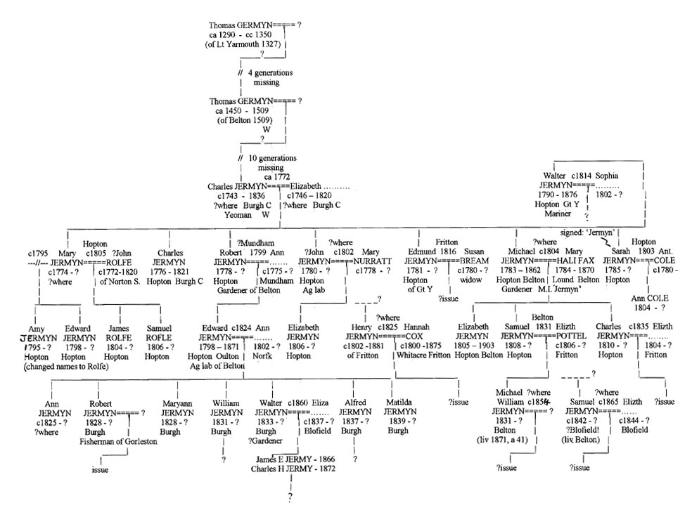
Many of the sons in this family were Gardeners both before and during Victorian times. Descendents still live in the area today, I believe (yes, a local nurseryman/gardener named Jermy resides in Blundeston) although inevitably many left for larger centres, including London and probably overseas. Various Directories, civil indexes and the later Census records should identify any families remaining after ca 1880, including the family in Blundeston.
-- -- -- -- -- --
As mentioned at the end of Part III, there follows next an Addendum which exemplifies a more general feature of the Jermy(n) genealogy.
An Addendum to Part III (of general relevance).
The '1914-'18 War (or just 'the times'?) saw a major shift in the lifestyle and futures for many members of the families discussed above. No longer unskilled labourers who signed their names with their mark, they gradually acquired education (probably from the 1880s) at least to the age of 14 and, with more affordable transportation by rail (and later by ship), they entered a world much less restricted than that of the typically illiterate labourers working seasonally, and for so many generations, for the yeoman farmers of rural Norfolk. And with the hybrid vigour and an influx of new genes through marriages beyond their local area (one from a different country even), a future of greater achievement and promise was more likely.
Thus it was that in about 1982, the son of William and Rosa, Bruce Jermy (described earlier), about to retire in New Zealand, decided to learn more about his family history back in the UK. He soon obtained a copy of Stewart Valdar's excellent booklet on the history of the Jermy family and wrote to him hoping he might be able to provide further detail about his own (ie Bruce's) forebears whom he naturally assumed were of that (Jermy) family. Stewart sent him what material he had from Census, Wills and civil registrations that appeared relevant and directed him as well to the Society of Genealogists, I believe, who gave him the name of a good genealogist in Norfolk. With the information and letters passed down to him from his elders as a starting point, more facts of their history 'pre-Thetford' was thus gradually discovered. Bruce, who had an avid interest in history in general, was motivated as well by the content of some of those earlier items of his family history (although that was not his primary motivation apparently).
Stewart also gave me their address and suggested I might wish to assist them in their quest. This transpired about the same time and I also received copies of some of those earlier family letters. It seems useful to record some of this background material here in that, to some extent, it typifies many similar backgrounds to the wide-spread interest and motivation in those searching the name 'Jermy' - whose ancestors were in fact consistently of the Jermyn/Jermany/Germany family.
Are We Not Members of the Jermy Family?
In about 1924, one of the grandsons of the John Larner who, in 1838, had made an unsuccessful claim to the former Jermy estate at Stanfield Hall (near Wymondham, Norfolk) was interviewed by one of the national papers regarding that claim. This may have come about because that estate had recently received some publicity when it was offered for sale about then. The ensuing articles stimulated renewed interest in the slim possibility that some unknown descendent of the original Jermy family (as the Larners felt they were, through a female line) might yet have a legitimate claim on that estate, or in any funds arising therefrom which may have been deposited 'in Chancery'.
One of the sons of the younger John Jarmany and wife Mary (White) - ie John 'Jermy' (born 1884), then residing in Thetford - became interested in this matter and, in letters written in 1924 and '25 to his sister Mary (Polly) in ?Northumberland, and to his elder brother William (then in Streatham, south London who seems to have previously sent John the article from the paper), discussed the matter of their possible derivation from the landed Jermy family of Norfolk (and how much it would cost to pursue that idea). It appears that they had once heard vague stories from their father John Jarmany (born 1851) about some mysterious stranger briefly attending the burial of his grandfather (ie their gt-grandfather) in about the 1870s, looking at the name plate on the coffin, scribbling something into a notebook and leaving hurriedly before the ceremony was over, without saying a word. Just where this gt-grandfather had lived or was buried or what his christian name was, did not appear to be known by the present family. John believed (wrongly) that their grandfather John was born in Thetford (ca 1827) where, according to their mother (Mary), he (her father-in-law) certainly worked on building the railways there by 1845 as a young man, and was later both married (1847) and buried there. John intended to obtain his grandfather's marriage certificate (when he could afford the fee) to determine the name of his father in turn (ie the unknown gt-grandfather), and where that man then lived and was likely later buried, as per that odd family story.
In his letter of 13 Oct 1925 to his brother William, however, John begins to express doubt on their ability to pursue the matter further. He notes that their grandfather John (born ca 1827 in Thetford, as they believed) "always maintained that he was the oldest son of a John Jermy 'of Yarmouth' who afterwards removed to Reedham". John (of the letter) says also that "it is equally certain that (this) John Jermy of Yarmouth (as they had recently learned) was the only living heir (ie of the landed Jermys) up to 1838". He seems to think that the latter man, their uncertain gt-grandfather as they believed, and seemingly the son of a John Jermy, the 'illiterate labourer of Yarmouth' who had a legitmate claim to the estate, lived in Hempstead (near Yarmouth as he thought) as per an 1845 Norfolk Directory, the only Jermy mentioned there. (Actually, Hempstead is not that close to Yarmouth - in local, Norfolk terms.) From this, he concluded (somewhat naively) that "all the Jermys now about (ie themselves essentially by the 1920s) are descended from him". Thus, he must have believed that their grandfather (also John), as eldest son of that man, might well have been the next heir - if only they could establish his father's place of burial and before that, of his birth and a definite connection thereby to the John Jermy of Yarmouth. But this was proving difficult (and costly) and while he again notes that his grandfather's marriage certificate should reveal some of this, he hasn't (yet) obtained that.
[He mentions in another letter that times were very difficult for him since he came out of the Army - in which he seems to have spent 20 years (ca 1903-'23, often overseas) - and he was now crushing rocks near Thetford with a sledge hammer 12 hours a day!] Thus, he writes: "There is now no one living here that remembers where Grandfather's father (lived or) was buried. Mother does not know. Neither does Eliza (Flack), nor Rose (Gooch) - even though Grandfather went to the funeral". Also, before spending more on pursuing the matter through a solicitor, he felt they should first ascertain what money might be held in Chancery (as Dormant Funds in the name of William Jermy of the original estate) that might be due to any proven heir. But if William's legal friend in London thinks it worth pursuing, he (John in Thetford) says he will get that marriage certificate to establish that their grandfather John was indeed the son of the only "rightful heir" (as he refers to him) - a (?later) John Jermy of Yarmouth - alive in 1845.
One must assume that John Jermy of Thetford did eventually obtain the marriage certificate of his grandfather (of 1847) in which he would presumably have learned that his gt-grandfather was not in fact a John Jermy as they believed - of either Yarmouth or, later, Reedham (where they understood he settled latterly) - but in fact a William Jarmeny, then of South Walsham - the place of origin of the family of which they were quite unaware. His marriage in turn (on 14 Apr 1817) was before civil registrations and certificates were available and hence he would only have learned that this gt-grandfather had married in that same village, on that date (to 'Sarah Hayton' (sic) - a girl from Reedham at least), if he had ever visited the South Walsham church there and examined its actual register. This may or may not have recorded that the said William Jarmany was actually from nearby Panxworth at that time. He may also have found that his grandfather John Jermy (as he knew him) was in fact subsequently baptised, not in Thetford in 1827, but back in South Walsham - as 'John Haydon Jarmany' - on 21 Aug 1826, the (third, not first) son of William and Sarah Jarmany (she late Haydon/Hayton), and that it would be that graveyard - in South Walsham - where his gt-grandfather was buried - on 7 Apr 1872 - as 'William Jermany' (and where the family story had thus arisen).
In any case, it appears that this genealogical path (leading back ultimately towards the Jermyn family Hempnall probably) wasn't going to lead to John Jermy of Gt Yarmouth and no more was heard of the family's pursuit of any inheritance from that real Jermy family of ancient landed status, as far as I'm aware. Still, its amazing how a change of name can become set in stone by later members of a family and how that in turn can serve to maintain the direction and motivation of such enquiries over later generations.
In the summer of 1983, Bruce Jermy contacted me and asked if I would try to discover more about his family's origins. The genealogist in Norwich, of whose results Mr Jermy later sent me copies, had about the same time covered a wide search area most competently and had arrived at several conclusions similar to mine but had not resolved the origin problem. Thus, an earlier pedigree he sent me showed that Bruce's gt-grandfather (still shown wrongly as John Jermy) was born in 1827, but at Woodbastwick at least, and had married a Miss Neal at the Thetford Registry Office (no date shown). His actual date of birth or baptism, and of his marriage, appeared to be unknown to them at this point yet the place shown for his birth, Woodbastwick (previously unknown by the family I believe), was at least close; he was indeed baptised there, although actually born in Panxworth (though not in 1827 as believed but in 1826, as we've noted). Moreover, Woodbastwick was wrongly shown as (near) North Walsham rather than South Walsham and, in any case, John's actual baptism date (26 Aug 1826) had not yet been discovered by that genealogist nor, with it, the true name of his father.
But where did he get this partial data from? This John Jermys's father (their gt-grandfather) was still shown on the pedigree as 'John Jermy of Reedham', but now ?formerly a 'Tailor of Hempnall'. [Hempnall seems to have replaced 'Hempstead' in the family's beliefs, which was considerably closer to Yarmouth, and had been previously given by another of the family and partly accounted for the assumption that the latter John could well have come to Reedham from seemingly 'nearby' Yarmouth and/or Hempstead.] The 1845 Norfolk Directory cited earlier had however actually given Hempnall, I believe (and not Hempstead) as the only place in Norfolk where a 'John Jermy' appears to have then resided; a delayed awareness of this error must have occurred. He was now supposed somehow to have connections with both Yarmouth and Hempnall (even though these are not mutually relevant geographically; the Hempstead idea was actually better for the Yarmouth origin idea, totally wrong though it was).
I informed Bruce Jermy that I happened to have sought out the origin of this Hempnall John Jermy (born 1804) some time ago; that he had married a Sophia Durrant (born 1806 in Ludham) around 1830 and had a daughter Hannah in 1833 and son William in 1835 in Hempnall, before dying there in 1846. [I have his connection to some Jermyn root but have misplaced this at the moment.] I pointed out that such Directories then included about 10% of the population only and excluded almost all non-property owners or those who hadn't a skilled trade or profession. There were thus in fact many other Jermys, Jarmanys, etc living in Norfolk at the time who were generally unlisted. The presence of a Jermy (or even Jermyn) in Hempnall (as a Tailor) was a coincidence in that he was not actually of the earlier Jermyn family (in any direct sense) who had resided there in great numbers in former times. But, more to the point, I was able to tell him (as mentioned above) that his 3x gt-grandfather was in fact not a John Jermy of Yarmouth but a William Jarmeny who lived in Panxworth where he was born about 5 May 1793 - the son of Robert Jarmany and wife Mary (late Plummer) of that same place.
That William Jarmany later married Sarah Haydon in South Walsham in 1817, as mentioned above, and had as one of their large family there a (3rd) son John Haydon Jarmany in 1826, his ancestor, (and older brothers William and Benjamin Jarmany also). This had all transpired when I checked the 1861 Census for Reedham and found that 5 of John's sisters (all born in South Walsham or Panxworth) had settled there, each having married a local farm labourer (each girl generally described as 'late Jermyn') - probably after moving (back) to that town with or without their parents around 1835 or so. One of the sisters (Harriett Durrant) had a James Jermyn, aged 11, agricultural labourer, residing in her household as a Lodger (cf 'son'). He was possibly born to one of her siblings ca 1850. (Those parents, if they had moved to Reedham for a time, were however back at South Walsham by the time of that (1861) Census, and where they were later buried, I believe.)
As described earlier, I later traced William's father Robert back earlier in his career - initially to Loddon - where he had married in 1783 and earlier still to Kirby Bedon where he was born in 1755 - the son of a William Jermy(n) and second wife Pleasance (nee Bennett). Ironically, this line of Jermyns derived from Hempnall not that long before. Bruce Jermy, to whom I had sent all this information, was later quite interested in having me research this latter Hempnall family back further (having accepted that there was now no basis for any connection with John Jermy, the illiterate day labourer of Yarmouth, as believed by his father and uncles in Thetford). This I did as best I could, although the sheer volume of the Jermyn family near Hempnall going back to 1300, with the same few christian names and with lengthy gaps in that register, made this very difficult. Some of it is described elsewhere on this site in the section on the Jermyns of Hempnall. Bruce's family earlier, as so many, didn't seem to appreciate that the relevant John Jermy of Yarmouth (one of the last of the true Jermys of the Gunton branch of that ancient landed family) was born as early as 1692 and that any son he may have had (and none have been verified) would have been born around 1715-20. The Reedham events occurred a century or more (ie about 4 generations) later! It is thus fortunate that the Jarmany/Jermy brothers of Thetford and Streatham never did engage that firm of (?expensive) solicitors, which they had seriously considered doing.
-- -- -- -- -- --
Except for any pedigrees still to be compiled, this now completes this account of the Jermyns of Broadland. Hopefully, any errors will eventually be corrected and some further data added, if and when located.
-- -- -- -- -- --
Return to Beginning of The Jermyns of Broadland
Return to Jermyn Homepage
Return to Genealogy Homepage